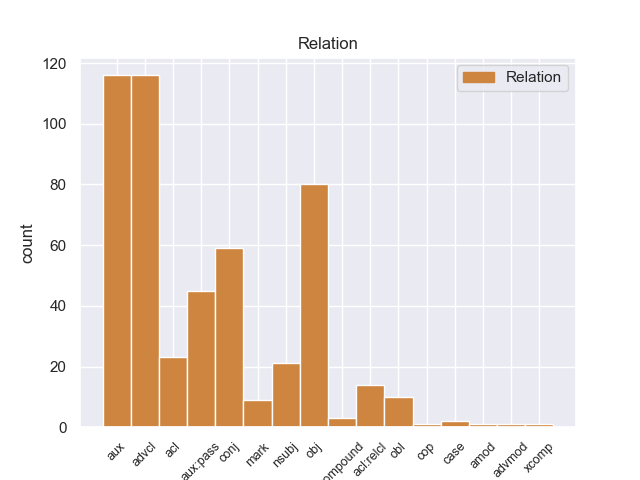
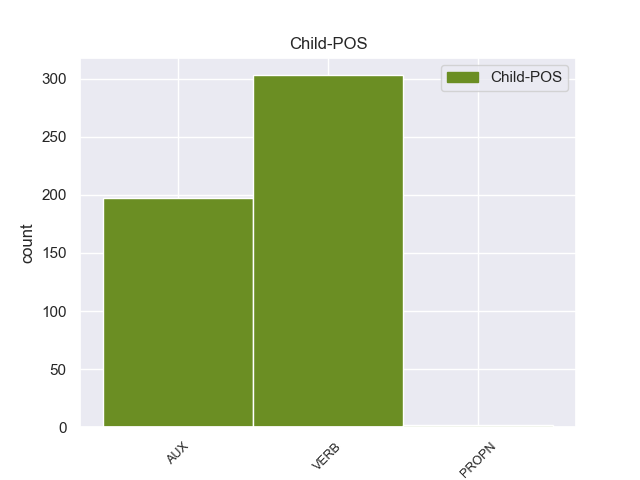

Distribution of features within this leaf



Agreement Rules sorted by frequency.
- When the dependent token is the adverbial clause modifier(advcl) of the head token, and the dependent token is VERB.
1 यदि _ _ _ _ 0 _ _ _
2 मैं _ _ _ _ 0 _ _ _
3 इस _ _ _ _ 0 _ _ _
4 पर _ _ _ _ 0 _ _ _
5 कुछ _ _ _ _ 0 _ _ _
6 कहूंगा कह VERB VM Gender=Masc|Mood=Ind|Number=Sing|Person=3|Tense=Fut|VerbForm=Fin|Voice=Act 11 advcl _ ChunkId=VGF|ChunkType=head|Stype=declarative|Tam=gA|Translit=kahūṁgā|Vib=गा
7 तो _ _ _ _ 0 _ _ _
8 इसकी _ _ _ _ 0 _ _ _
9 तुरंत _ _ _ _ 0 _ _ _
10 प्रतिक्रिया _ _ _ _ 0 _ _ _
11 होगी हो VERB VM Gender=Fem|Mood=Ind|Number=Sing|Person=3|Tense=Fut|VerbForm=Fin|Voice=Act 0 _ _ _
12 । _ _ _ _ 0 _ _ _
1 थोडे _ _ _ _ 0 _ _ _
2 दिन _ _ _ _ 0 _ _ _
3 कोटा _ _ _ _ 0 _ _ _
4 में _ _ _ _ 0 _ _ _
5 निवास _ _ _ _ 0 _ _ _
6 करके _ _ _ _ 0 _ _ _
7 पुष्कर _ _ _ _ 0 _ _ _
8 पहुचे _ _ _ _ 0 _ _ _
9 पुष्कर _ _ _ _ 0 _ _ _
10 से _ _ _ _ 0 _ _ _
11 जोधपुर _ _ _ _ 0 _ _ _
12 मार्ग _ _ _ _ 0 _ _ _
13 पर _ _ _ _ 0 _ _ _
14 बढे _ _ _ _ 0 _ _ _
15 और _ _ _ _ 0 _ _ _
16 मार्ग _ _ _ _ 0 _ _ _
17 में _ _ _ _ 0 _ _ _
18 कुछ _ _ _ _ 0 _ _ _
19 दिन _ _ _ _ 0 _ _ _
20 किसनगढ _ _ _ _ 0 _ _ _
21 में _ _ _ _ 0 _ _ _
22 निवास _ _ _ _ 0 _ _ _
23 किया _ _ _ _ 0 _ _ _
24 तथा _ _ _ _ 0 _ _ _
25 बीसलपुर _ _ _ _ 0 _ _ _
26 में _ _ _ _ 0 _ _ _
27 भी _ _ _ _ 0 _ _ _
28 विश्राम _ _ _ _ 0 _ _ _
29 किया _ _ _ _ 0 _ _ _
30 . _ _ _ _ 0 _ _ _
31 बीसलपुर _ _ _ _ 0 _ _ _
32 से _ _ _ _ 0 _ _ _
33 जोधपुर _ _ _ _ 0 _ _ _
34 के _ _ _ _ 0 _ _ _
35 पास _ _ _ _ 0 _ _ _
36 ३ _ _ _ _ 0 _ _ _
37 कोस _ _ _ _ 0 _ _ _
38 दूर _ _ _ _ 0 _ _ _
39 चौपासिनी _ _ _ _ 0 _ _ _
40 में _ _ _ _ 0 _ _ _
41 आकर _ _ _ _ 0 _ _ _
42 विश्राम _ _ _ _ 0 _ _ _
43 किया _ _ _ _ 0 _ _ _
44 और _ _ _ _ 0 _ _ _
45 चार _ _ _ _ 0 _ _ _
46 महीने _ _ _ _ 0 _ _ _
47 रहे _ _ _ _ 0 _ _ _
48 इसी _ _ _ _ 0 _ _ _
49 बीच _ _ _ _ 0 _ _ _
50 श्री _ _ _ _ 0 _ _ _
51 गोविन्द _ _ _ _ 0 _ _ _
52 जी _ _ _ _ 0 _ _ _
53 महाराज _ _ _ _ 0 _ _ _
54 मेवाड़ _ _ _ _ 0 _ _ _
55 के _ _ _ _ 0 _ _ _
56 महाराजा _ _ _ _ 0 _ _ _
57 श्री _ _ _ _ 0 _ _ _
58 राजसिह _ _ _ _ 0 _ _ _
59 से _ _ _ _ 0 _ _ _
60 मिलने _ _ _ _ 0 _ _ _
61 उदयपुर _ _ _ _ 0 _ _ _
62 आए _ _ _ _ 0 _ _ _
63 . _ _ _ _ 0 _ _ _
64 महाराजा _ _ _ _ 0 _ _ _
65 राजसिह _ _ _ _ 0 _ _ _
66 ने _ _ _ _ 0 _ _ _
67 श्रीनाथ _ _ _ _ 0 _ _ _
68 जी _ _ _ _ 0 _ _ _
69 की _ _ _ _ 0 _ _ _
70 मूर्ति _ _ _ _ 0 _ _ _
71 का _ _ _ _ 0 _ _ _
72 संकल्प _ _ _ _ 0 _ _ _
73 किया _ _ _ _ 0 _ _ _
74 . _ _ _ _ 0 _ _ _
75 उन्होने _ _ _ _ 0 _ _ _
76 श्री _ _ _ _ 0 _ _ _
77 गोविन्द _ _ _ _ 0 _ _ _
78 जी _ _ _ _ 0 _ _ _
79 से _ _ _ _ 0 _ _ _
80 कहा _ _ _ _ 0 _ _ _
81 कि _ _ _ _ 0 _ _ _
82 आप _ _ _ _ 0 _ _ _
83 शीघ्र _ _ _ _ 0 _ _ _
84 श्रीनाथ _ _ _ _ 0 _ _ _
85 जी _ _ _ _ 0 _ _ _
86 को _ _ _ _ 0 _ _ _
87 मेवाड़ _ _ _ _ 0 _ _ _
88 में _ _ _ _ 0 _ _ _
89 ले _ _ _ _ 0 _ _ _
90 आइए _ _ _ _ 0 _ _ _
91 . _ _ _ _ 0 _ _ _
92 मेवाड़ _ _ _ _ 0 _ _ _
93 का _ _ _ _ 0 _ _ _
94 बच्चा _ _ _ _ 0 _ _ _
95 - _ _ _ _ 0 _ _ _
96 बच्चा _ _ _ _ 0 _ _ _
97 जी _ _ _ _ 0 _ _ _
98 जान _ _ _ _ 0 _ _ _
99 से _ _ _ _ 0 _ _ _
100 श्रीनाथ _ _ _ _ 0 _ _ _
101 जी _ _ _ _ 0 _ _ _
102 की _ _ _ _ 0 _ _ _
103 सेवा _ _ _ _ 0 _ _ _
104 करता _ _ _ _ 0 _ _ _
105 रहेगा _ _ _ _ 0 _ _ _
106 . _ _ _ _ 0 _ _ _
107 तत्पश्चात _ _ _ _ 0 _ _ _
108 श्रीनाथजी _ _ _ _ 0 _ _ _
109 का _ _ _ _ 0 _ _ _
110 रथ _ _ _ _ 0 _ _ _
111 मेवाड़ _ _ _ _ 0 _ _ _
112 में _ _ _ _ 0 _ _ _
113 आकर _ _ _ _ 0 _ _ _
114 सिहाड़ _ _ _ _ 0 _ _ _
115 नामक _ _ _ _ 0 _ _ _
116 स्थान _ _ _ _ 0 _ _ _
117 पर _ _ _ _ 0 _ _ _
118 रूका _ _ _ _ 0 _ _ _
119 . _ _ _ _ 0 _ _ _
120 इसी _ _ _ _ 0 _ _ _
121 स्थान _ _ _ _ 0 _ _ _
122 पर _ _ _ _ 0 _ _ _
123 श्रीनाथजी _ _ _ _ 0 _ _ _
124 की _ _ _ _ 0 _ _ _
125 परम _ _ _ _ 0 _ _ _
126 भक्त _ _ _ _ 0 _ _ _
127 अजबकुंवर _ _ _ _ 0 _ _ _
128 जी _ _ _ _ 0 _ _ _
129 महाराणा _ _ _ _ 0 _ _ _
130 कुल _ _ _ _ 0 _ _ _
131 से _ _ _ _ 0 _ _ _
132 संबंध _ _ _ _ 0 _ _ _
133 रखती _ _ _ _ 0 _ _ _
134 थीरहती _ _ _ _ 0 _ _ _
135 थी _ _ _ _ 0 _ _ _
136 और _ _ _ _ 0 _ _ _
137 १२५ _ _ _ _ 0 _ _ _
138 वर्ष _ _ _ _ 0 _ _ _
139 पूर्व _ _ _ _ 0 _ _ _
140 श्रीनाथजी _ _ _ _ 0 _ _ _
141 ने _ _ _ _ 0 _ _ _
142 स्वयं _ _ _ _ 0 _ _ _
143 उसके _ _ _ _ 0 _ _ _
144 स्वप्न _ _ _ _ 0 _ _ _
145 में _ _ _ _ 0 _ _ _
146 आकर _ _ _ _ 0 _ _ _
147 मेवाड़ _ _ _ _ 0 _ _ _
148 आने _ _ _ _ 0 _ _ _
149 का _ _ _ _ 0 _ _ _
150 वचन _ _ _ _ 0 _ _ _
151 दिया _ _ _ _ 0 _ _ _
152 था _ _ _ _ 0 _ _ _
153 . _ _ _ _ 0 _ _ _
154 श्रीनाथजी _ _ _ _ 0 _ _ _
155 को _ _ _ _ 0 _ _ _
156 गोवर्धन _ _ _ _ 0 _ _ _
157 पर्वत _ _ _ _ 0 _ _ _
158 ( _ _ _ _ 0 _ _ _
159 गिरिराज _ _ _ _ 0 _ _ _
160 ) _ _ _ _ 0 _ _ _
161 से _ _ _ _ 0 _ _ _
162 सिहाड़ _ _ _ _ 0 _ _ _
163 पहुंचने _ _ _ _ 0 _ _ _
164 में _ _ _ _ 0 _ _ _
165 दो _ _ _ _ 0 _ _ _
166 वर्ष _ _ _ _ 0 _ _ _
167 पांच _ _ _ _ 0 _ _ _
168 महीने _ _ _ _ 0 _ _ _
169 व _ _ _ _ 0 _ _ _
170 सात _ _ _ _ 0 _ _ _
171 दिन _ _ _ _ 0 _ _ _
172 लगे लग VERB VM Gender=Masc|Mood=Ind|Number=Plur|Person=3|Tense=Fut|VerbForm=Fin|Voice=Act 0 _ _ _
173 थे था AUX VAUX Gender=Masc|Mood=Ind|Number=Sing|Person=3|Polite=Form|Tense=Past|VerbForm=Fin 172 aux _ _
174 और _ _ _ _ 0 _ _ _
175 सम्वत _ _ _ _ 0 _ _ _
176 १७२८ _ _ _ _ 0 _ _ _
177 में _ _ _ _ 0 _ _ _
178 फाल्गुन _ _ _ _ 0 _ _ _
179 कृष्ण _ _ _ _ 0 _ _ _
180 सप्तमी _ _ _ _ 0 _ _ _
181 के _ _ _ _ 0 _ _ _
182 दिन _ _ _ _ 0 _ _ _
183 शनिवार _ _ _ _ 0 _ _ _
184 को _ _ _ _ 0 _ _ _
185 शास्त्र _ _ _ _ 0 _ _ _
186 रीति _ _ _ _ 0 _ _ _
187 के _ _ _ _ 0 _ _ _
188 अनुसार _ _ _ _ 0 _ _ _
189 श्रीनाथजी _ _ _ _ 0 _ _ _
190 को _ _ _ _ 0 _ _ _
191 सिहाड़ _ _ _ _ 0 _ _ _
192 के _ _ _ _ 0 _ _ _
193 निकट _ _ _ _ 0 _ _ _
194 मंदिर _ _ _ _ 0 _ _ _
195 में _ _ _ _ 0 _ _ _
196 प्रतिष्ठापित _ _ _ _ 0 _ _ _
197 किया _ _ _ _ 0 _ _ _
198 गया _ _ _ _ 0 _ _ _
199 और _ _ _ _ 0 _ _ _
200 इस _ _ _ _ 0 _ _ _
201 स्थान _ _ _ _ 0 _ _ _
202 का _ _ _ _ 0 _ _ _
203 नाम _ _ _ _ 0 _ _ _
204 नाथद्वारा _ _ _ _ 0 _ _ _
205 पड़ा _ _ _ _ 0 _ _ _
206 . _ _ _ _ 0 _ _ _
207 श्रीनाथजी _ _ _ _ 0 _ _ _
208 का _ _ _ _ 0 _ _ _
209 मंदिर _ _ _ _ 0 _ _ _
210 भगवान _ _ _ _ 0 _ _ _
211 श्री _ _ _ _ 0 _ _ _
212 कृष्ण _ _ _ _ 0 _ _ _
213 जी _ _ _ _ 0 _ _ _
214 की _ _ _ _ 0 _ _ _
215 बाल _ _ _ _ 0 _ _ _
216 लीलाओ _ _ _ _ 0 _ _ _
217 को _ _ _ _ 0 _ _ _
218 ही _ _ _ _ 0 _ _ _
219 पुष्टिमार्ग _ _ _ _ 0 _ _ _
220 की _ _ _ _ 0 _ _ _
221 भक्तिभावना _ _ _ _ 0 _ _ _
222 माना _ _ _ _ 0 _ _ _
223 गया _ _ _ _ 0 _ _ _
224 है _ _ _ _ 0 _ _ _
225 . _ _ _ _ 0 _ _ _
226 भगवान _ _ _ _ 0 _ _ _
227 श्री _ _ _ _ 0 _ _ _
228 कृष्ण _ _ _ _ 0 _ _ _
229 ने _ _ _ _ 0 _ _ _
230 यह _ _ _ _ 0 _ _ _
231 सारी _ _ _ _ 0 _ _ _
232 लीलाएं _ _ _ _ 0 _ _ _
233 नंद _ _ _ _ 0 _ _ _
234 बाबा _ _ _ _ 0 _ _ _
235 के _ _ _ _ 0 _ _ _
236 घर _ _ _ _ 0 _ _ _
237 में _ _ _ _ 0 _ _ _
238 रहकर _ _ _ _ 0 _ _ _
239 की _ _ _ _ 0 _ _ _
240 थी _ _ _ _ 0 _ _ _
241 . _ _ _ _ 0 _ _ _
242 इसलिए _ _ _ _ 0 _ _ _
243 श्री _ _ _ _ 0 _ _ _
244 नाथजी _ _ _ _ 0 _ _ _
245 का _ _ _ _ 0 _ _ _
246 मंदिर _ _ _ _ 0 _ _ _
247 नन्द _ _ _ _ 0 _ _ _
248 बाबा _ _ _ _ 0 _ _ _
249 के _ _ _ _ 0 _ _ _
250 घर _ _ _ _ 0 _ _ _
251 को _ _ _ _ 0 _ _ _
252 प्रतीक _ _ _ _ 0 _ _ _
253 मानकर _ _ _ _ 0 _ _ _
254 बनाया _ _ _ _ 0 _ _ _
255 गया _ _ _ _ 0 _ _ _
256 है _ _ _ _ 0 _ _ _
257 . _ _ _ _ 0 _ _ _
258 इसकी _ _ _ _ 0 _ _ _
259 बनावट _ _ _ _ 0 _ _ _
260 मंदिर _ _ _ _ 0 _ _ _
261 की _ _ _ _ 0 _ _ _
262 तरह _ _ _ _ 0 _ _ _
263 न _ _ _ _ 0 _ _ _
264 होकर _ _ _ _ 0 _ _ _
265 घर _ _ _ _ 0 _ _ _
266 की _ _ _ _ 0 _ _ _
267 तरह _ _ _ _ 0 _ _ _
268 है _ _ _ _ 0 _ _ _
269 . _ _ _ _ 0 _ _ _
270 वैसे _ _ _ _ 0 _ _ _
271 ताक _ _ _ _ 0 _ _ _
272 सारा _ _ _ _ 0 _ _ _
273 मंदिर _ _ _ _ 0 _ _ _
274 पक्का _ _ _ _ 0 _ _ _
275 बना _ _ _ _ 0 _ _ _
276 हुआ _ _ _ _ 0 _ _ _
277 है _ _ _ _ 0 _ _ _
278 परन्तु _ _ _ _ 0 _ _ _
279 निज _ _ _ _ 0 _ _ _
280 मंदिर _ _ _ _ 0 _ _ _
281 की _ _ _ _ 0 _ _ _
282 छत _ _ _ _ 0 _ _ _
283 खपरैल _ _ _ _ 0 _ _ _
284 की _ _ _ _ 0 _ _ _
285 बनी _ _ _ _ 0 _ _ _
286 हुई _ _ _ _ 0 _ _ _
287 है _ _ _ _ 0 _ _ _
288 . _ _ _ _ 0 _ _ _
289 मंदिर _ _ _ _ 0 _ _ _
290 बहुत _ _ _ _ 0 _ _ _
291 विशाल _ _ _ _ 0 _ _ _
292 है _ _ _ _ 0 _ _ _
293 और _ _ _ _ 0 _ _ _
294 चारो _ _ _ _ 0 _ _ _
295 तरफ _ _ _ _ 0 _ _ _
296 पक्की _ _ _ _ 0 _ _ _
297 दीवार _ _ _ _ 0 _ _ _
298 बनी _ _ _ _ 0 _ _ _
299 हुई _ _ _ _ 0 _ _ _
300 है _ _ _ _ 0 _ _ _
301 यह _ _ _ _ 0 _ _ _
302 मंदिर _ _ _ _ 0 _ _ _
303 कलात्मक _ _ _ _ 0 _ _ _
304 ढंग _ _ _ _ 0 _ _ _
305 से _ _ _ _ 0 _ _ _
306 नही _ _ _ _ 0 _ _ _
307 बनाया _ _ _ _ 0 _ _ _
308 गया _ _ _ _ 0 _ _ _
309 है _ _ _ _ 0 _ _ _
310 निजमंदिर _ _ _ _ 0 _ _ _
311 के _ _ _ _ 0 _ _ _
312 उपर _ _ _ _ 0 _ _ _
313 कलश _ _ _ _ 0 _ _ _
314 , _ _ _ _ 0 _ _ _
315 सुदर्शन _ _ _ _ 0 _ _ _
316 चक्र _ _ _ _ 0 _ _ _
317 तथा _ _ _ _ 0 _ _ _
318 सप्त _ _ _ _ 0 _ _ _
319 ध्वजा _ _ _ _ 0 _ _ _
320 है _ _ _ _ 0 _ _ _
321 . _ _ _ _ 0 _ _ _
322 मंदिर _ _ _ _ 0 _ _ _
323 में _ _ _ _ 0 _ _ _
324 भगवान _ _ _ _ 0 _ _ _
325 श्रीनाथजी _ _ _ _ 0 _ _ _
326 का _ _ _ _ 0 _ _ _
327 स्वरूप _ _ _ _ 0 _ _ _
328 भगवान _ _ _ _ 0 _ _ _
329 भी _ _ _ _ 0 _ _ _
330 कृष्ण _ _ _ _ 0 _ _ _
331 के _ _ _ _ 0 _ _ _
332 गोवर्धन _ _ _ _ 0 _ _ _
333 पर्वत _ _ _ _ 0 _ _ _
334 उठाने _ _ _ _ 0 _ _ _
335 का _ _ _ _ 0 _ _ _
336 स्वरूप _ _ _ _ 0 _ _ _
337 है _ _ _ _ 0 _ _ _
338 क्योकि _ _ _ _ 0 _ _ _
339 पुष्टिमार्गीय _ _ _ _ 0 _ _ _
340 भक्तो _ _ _ _ 0 _ _ _
341 के _ _ _ _ 0 _ _ _
342 ईरूटदेव _ _ _ _ 0 _ _ _
343 भगवान _ _ _ _ 0 _ _ _
344 श्री _ _ _ _ 0 _ _ _
345 गोवर्धन _ _ _ _ 0 _ _ _
346 नाथजी _ _ _ _ 0 _ _ _
347 है _ _ _ _ 0 _ _ _
348 . _ _ _ _ 0 _ _ _
349 बांयी _ _ _ _ 0 _ _ _
350 भुजा _ _ _ _ 0 _ _ _
351 गोवर्धन _ _ _ _ 0 _ _ _
352 पर्वत _ _ _ _ 0 _ _ _
353 धारण _ _ _ _ 0 _ _ _
354 करने _ _ _ _ 0 _ _ _
355 की _ _ _ _ 0 _ _ _
356 भावना _ _ _ _ 0 _ _ _
357 का _ _ _ _ 0 _ _ _
358 सूचक _ _ _ _ 0 _ _ _
359 है _ _ _ _ 0 _ _ _
360 तथा _ _ _ _ 0 _ _ _
361 दांयी _ _ _ _ 0 _ _ _
362 भुजा _ _ _ _ 0 _ _ _
363 भक्तो _ _ _ _ 0 _ _ _
364 की _ _ _ _ 0 _ _ _
365 रक्षक _ _ _ _ 0 _ _ _
366 नृत्य _ _ _ _ 0 _ _ _
367 भाव _ _ _ _ 0 _ _ _
368 की _ _ _ _ 0 _ _ _
369 सूचक _ _ _ _ 0 _ _ _
370 है _ _ _ _ 0 _ _ _
371 . _ _ _ _ 0 _ _ _
372 < _ _ _ _ 0 _ _ _
373 ळिटेरटुरे _ _ _ _ 0 _ _ _
374 > _ _ _ _ 0 _ _ _
375 < _ _ _ _ 0 _ _ _
376 ठ्रवेलोगुए _ _ _ _ 0 _ _ _
377 > _ _ _ _ 0 _ _ _
378 < _ _ _ _ 0 _ _ _
379 ढस् _ _ _ _ 0 _ _ _
380 , _ _ _ _ 0 _ _ _
381 खमल् _ _ _ _ 0 _ _ _
382 > _ _ _ _ 0 _ _ _
383 < _ _ _ _ 0 _ _ _
384 झन _ _ _ _ 0 _ _ _
385 आन्जन _ _ _ _ 0 _ _ _
386 > _ _ _ _ 0 _ _ _
387 < _ _ _ _ 0 _ _ _
388 १९८० _ _ _ _ 0 _ _ _
389 > _ _ _ _ 0 _ _ _
390 < _ _ _ _ 0 _ _ _
391 शहिट्य _ _ _ _ 0 _ _ _
392 भ्हवन् _ _ _ _ 0 _ _ _
393 ( _ _ _ _ 0 _ _ _
394 फ्व्ट् _ _ _ _ 0 _ _ _
395 . _ _ _ _ 0 _ _ _
396 ) _ _ _ _ 0 _ _ _
397 ळ्ट्ड् _ _ _ _ 0 _ _ _
398 . _ _ _ _ 0 _ _ _
399 > _ _ _ _ 0 _ _ _
400 < _ _ _ _ 0 _ _ _
401 आल्लोहबड् _ _ _ _ 0 _ _ _
402 > _ _ _ _ 0 _ _ _
403 < _ _ _ _ 0 _ _ _
404 ४ _ _ _ _ 0 _ _ _
405 - _ _ _ _ 0 _ _ _
406 ११ _ _ _ _ 0 _ _ _
407 > _ _ _ _ 0 _ _ _
408 < _ _ _ _ 0 _ _ _
409 २०८० _ _ _ _ 0 _ _ _
410 > _ _ _ _ 0 _ _ _
411 < _ _ _ _ 0 _ _ _
412 ढस् _ _ _ _ 0 _ _ _
413 , _ _ _ _ 0 _ _ _
1 विश्वबैंक _ _ _ _ 0 _ _ _
2 का _ _ _ _ 0 _ _ _
3 कहना _ _ _ _ 0 _ _ _
4 है है VERB VM Mood=Ind|Number=Sing|Person=3|Tense=Pres|VerbForm=Fin|Voice=Act 0 _ _ _
5 कि _ _ _ _ 0 _ _ _
6 इसवर्ष _ _ _ _ 0 _ _ _
7 वैश्विक _ _ _ _ 0 _ _ _
8 अर्थव्यवस्था _ _ _ _ 0 _ _ _
9 में _ _ _ _ 0 _ _ _
10 सुधार _ _ _ _ 0 _ _ _
11 की _ _ _ _ 0 _ _ _
12 रफ़्तार _ _ _ _ 0 _ _ _
13 कम _ _ _ _ 0 _ _ _
14 लेकिन _ _ _ _ 0 _ _ _
15 ठोस _ _ _ _ 0 _ _ _
16 रहेगी रह VERB VM Gender=Fem|Mood=Ind|Number=Sing|Person=3|Tense=Fut|VerbForm=Fin|Voice=Act 4 obj _ _
17 । _ _ _ _ 0 _ _ _
1 मजूदरों _ _ _ _ 0 _ _ _
2 एवं _ _ _ _ 0 _ _ _
3 प्रबंधन _ _ _ _ 0 _ _ _
4 के _ _ _ _ 0 _ _ _
5 बीच _ _ _ _ 0 _ _ _
6 इसको _ _ _ _ 0 _ _ _
7 लेकर _ _ _ _ 0 _ _ _
8 भी _ _ _ _ 0 _ _ _
9 सहमति _ _ _ _ 0 _ _ _
10 बनी _ _ _ _ 0 _ _ _
11 है _ _ _ _ 0 _ _ _
12 कि _ _ _ _ 0 _ _ _
13 यदि _ _ _ _ 0 _ _ _
14 श्रमिक _ _ _ _ 0 _ _ _
15 पूर्ण _ _ _ _ 0 _ _ _
16 सहयोग _ _ _ _ 0 _ _ _
17 देंगे _ _ _ _ 0 _ _ _
18 , _ _ _ _ 0 _ _ _
19 अच्छा _ _ _ _ 0 _ _ _
20 व्यवहार _ _ _ _ 0 _ _ _
21 करेंगे _ _ _ _ 0 _ _ _
22 तथा _ _ _ _ 0 _ _ _
23 अनुशासित _ _ _ _ 0 _ _ _
24 रहेंगे रह VERB VM Gender=Masc|Mood=Ind|Number=Plur|Person=3|Tense=Fut|VerbForm=Fin|Voice=Act 0 _ _ _
25 और _ _ _ _ 0 _ _ _
26 निर्धारित _ _ _ _ 0 _ _ _
27 उत्पादन _ _ _ _ 0 _ _ _
28 देंगे दे VERB VM Gender=Masc|Mood=Ind|Number=Plur|Person=3|Tense=Fut|VerbForm=Fin|Voice=Act 24 conj _ ChunkId=VGF5|ChunkType=head|Stype=declarative|Tam=gA|Translit=deṁge|Vib=गा
29 तब _ _ _ _ 0 _ _ _
30 ही _ _ _ _ 0 _ _ _
31 एक _ _ _ _ 0 _ _ _
32 वर्ष _ _ _ _ 0 _ _ _
33 बाद _ _ _ _ 0 _ _ _
34 उनके _ _ _ _ 0 _ _ _
35 वेतन _ _ _ _ 0 _ _ _
36 में _ _ _ _ 0 _ _ _
37 वृद्धि _ _ _ _ 0 _ _ _
38 होगी _ _ _ _ 0 _ _ _
39 । _ _ _ _ 0 _ _ _
1 उसमें _ _ _ _ 0 _ _ _
2 जमीन _ _ _ _ 0 _ _ _
3 आसमान _ _ _ _ 0 _ _ _
4 का _ _ _ _ 0 _ _ _
5 अंतर _ _ _ _ 0 _ _ _
6 था _ _ _ _ 0 _ _ _
7 हालांकि _ _ _ _ 0 _ _ _
8 गांव _ _ _ _ 0 _ _ _
9 की _ _ _ _ 0 _ _ _
10 भौगोलिक _ _ _ _ 0 _ _ _
11 स्थिति _ _ _ _ 0 _ _ _
12 में _ _ _ _ 0 _ _ _
13 खास _ _ _ _ 0 _ _ _
14 अंतर _ _ _ _ 0 _ _ _
15 नहीं _ _ _ _ 0 _ _ _
16 आया _ _ _ _ 0 _ _ _
17 था _ _ _ _ 0 _ _ _
18 और _ _ _ _ 0 _ _ _
19 न _ _ _ _ 0 _ _ _
20 ही _ _ _ _ 0 _ _ _
21 उस _ _ _ _ 0 _ _ _
22 पूरे _ _ _ _ 0 _ _ _
23 क्षेत्र _ _ _ _ 0 _ _ _
24 की _ _ _ _ 0 _ _ _
25 आर्थिक _ _ _ _ 0 _ _ _
26 या _ _ _ _ 0 _ _ _
27 सामाजिक _ _ _ _ 0 _ _ _
28 स्थितियों _ _ _ _ 0 _ _ _
29 में _ _ _ _ 0 _ _ _
30 कोई _ _ _ _ 0 _ _ _
31 बड़ा _ _ _ _ 0 _ _ _
32 बदलाव _ _ _ _ 0 _ _ _
33 देखने _ _ _ _ 0 _ _ _
34 को _ _ _ _ 0 _ _ _
35 मिल _ _ _ _ 0 _ _ _
36 रहा _ _ _ _ 0 _ _ _
37 था _ _ _ _ 0 _ _ _
38 पक्की _ _ _ _ 0 _ _ _
39 चौड़ी _ _ _ _ 0 _ _ _
40 सड़क _ _ _ _ 0 _ _ _
41 ने _ _ _ _ 0 _ _ _
42 जरूर _ _ _ _ 0 _ _ _
43 इस _ _ _ _ 0 _ _ _
44 गांव _ _ _ _ 0 _ _ _
45 को _ _ _ _ 0 _ _ _
46 आसपास _ _ _ _ 0 _ _ _
47 के _ _ _ _ 0 _ _ _
48 दूसरे _ _ _ _ 0 _ _ _
49 बड़े _ _ _ _ 0 _ _ _
50 गांवों _ _ _ _ 0 _ _ _
51 से _ _ _ _ 0 _ _ _
52 और _ _ _ _ 0 _ _ _
53 अनुमंडल _ _ _ _ 0 _ _ _
54 मुख्यालय _ _ _ _ 0 _ _ _
55 तथा _ _ _ _ 0 _ _ _
56 स्थानीय _ _ _ _ 0 _ _ _
57 बाजार _ _ _ _ 0 _ _ _
58 से _ _ _ _ 0 _ _ _
59 जोड़ _ _ _ _ 0 _ _ _
60 दिया _ _ _ _ 0 _ _ _
61 है _ _ _ _ 0 _ _ _
62 , _ _ _ _ 0 _ _ _
63 लेकिन _ _ _ _ 0 _ _ _
64 यहां _ _ _ _ 0 _ _ _
65 आज _ _ _ _ 0 _ _ _
66 भी _ _ _ _ 0 _ _ _
67 ज्यादातर _ _ _ _ 0 _ _ _
68 घर _ _ _ _ 0 _ _ _
69 मिट्टी _ _ _ _ 0 _ _ _
70 के _ _ _ _ 0 _ _ _
71 ही _ _ _ _ 0 _ _ _
72 हैं _ _ _ _ 0 _ _ _
73 मगर _ _ _ _ 0 _ _ _
74 जो _ _ _ _ 0 _ _ _
75 बदलाव _ _ _ _ 0 _ _ _
76 इस _ _ _ _ 0 _ _ _
77 दौरान _ _ _ _ 0 _ _ _
78 इस _ _ _ _ 0 _ _ _
79 गांव _ _ _ _ 0 _ _ _
80 में _ _ _ _ 0 _ _ _
81 आए _ _ _ _ 0 _ _ _
82 उनकी _ _ _ _ 0 _ _ _
83 झलक _ _ _ _ 0 _ _ _
84 मुझे _ _ _ _ 0 _ _ _
85 वहां _ _ _ _ 0 _ _ _
86 तब _ _ _ _ 0 _ _ _
87 देखने _ _ _ _ 0 _ _ _
88 को _ _ _ _ 0 _ _ _
89 मिली _ _ _ _ 0 _ _ _
90 , _ _ _ _ 0 _ _ _
91 जब _ _ _ _ 0 _ _ _
92 एक _ _ _ _ 0 _ _ _
93 दिन _ _ _ _ 0 _ _ _
94 भरी _ _ _ _ 0 _ _ _
95 दोपहर _ _ _ _ 0 _ _ _
96 में _ _ _ _ 0 _ _ _
97 गांव _ _ _ _ 0 _ _ _
98 में _ _ _ _ 0 _ _ _
99 भयंकर _ _ _ _ 0 _ _ _
100 आग _ _ _ _ 0 _ _ _
101 लग _ _ _ _ 0 _ _ _
102 गई _ _ _ _ 0 _ _ _
103 लग _ _ _ _ 0 _ _ _
104 रहा _ _ _ _ 0 _ _ _
105 था _ _ _ _ 0 _ _ _
106 जैसे _ _ _ _ 0 _ _ _
107 पूरा _ _ _ _ 0 _ _ _
108 गांव _ _ _ _ 0 _ _ _
109 स्वाहा _ _ _ _ 0 _ _ _
110 हो _ _ _ _ 0 _ _ _
111 जाएगा _ _ _ _ 0 _ _ _
112 आग _ _ _ _ 0 _ _ _
113 पर _ _ _ _ 0 _ _ _
114 काबू _ _ _ _ 0 _ _ _
115 पाने _ _ _ _ 0 _ _ _
116 की _ _ _ _ 0 _ _ _
117 गांव _ _ _ _ 0 _ _ _
118 वालों _ _ _ _ 0 _ _ _
119 की _ _ _ _ 0 _ _ _
120 तमाम _ _ _ _ 0 _ _ _
121 कोशिशें _ _ _ _ 0 _ _ _
122 बेकार _ _ _ _ 0 _ _ _
123 साबित _ _ _ _ 0 _ _ _
124 हो _ _ _ _ 0 _ _ _
125 रही _ _ _ _ 0 _ _ _
126 थीं _ _ _ _ 0 _ _ _
127 मगर _ _ _ _ 0 _ _ _
128 इसी _ _ _ _ 0 _ _ _
129 दौरान _ _ _ _ 0 _ _ _
130 नजदीकी _ _ _ _ 0 _ _ _
131 गांवों _ _ _ _ 0 _ _ _
132 से _ _ _ _ 0 _ _ _
133 मदद _ _ _ _ 0 _ _ _
134 पहुंचने _ _ _ _ 0 _ _ _
135 लगी _ _ _ _ 0 _ _ _
136 यह _ _ _ _ 0 _ _ _
137 करिश्मा _ _ _ _ 0 _ _ _
138 हुआ _ _ _ _ 0 _ _ _
139 मोबाइलफोन _ _ _ _ 0 _ _ _
140 की _ _ _ _ 0 _ _ _
141 बदौलत _ _ _ _ 0 _ _ _
142 गांव _ _ _ _ 0 _ _ _
143 में _ _ _ _ 0 _ _ _
144 हुए _ _ _ _ 0 _ _ _
145 उस _ _ _ _ 0 _ _ _
146 हादसे _ _ _ _ 0 _ _ _
147 से _ _ _ _ 0 _ _ _
148 महसूस _ _ _ _ 0 _ _ _
149 हुआ _ _ _ _ 0 _ _ _
150 कि _ _ _ _ 0 _ _ _
151 जहां _ _ _ _ 0 _ _ _
152 एकतरफ _ _ _ _ 0 _ _ _
153 मोबाइलफोन _ _ _ _ 0 _ _ _
154 ने _ _ _ _ 0 _ _ _
155 सूचनाओं _ _ _ _ 0 _ _ _
156 को _ _ _ _ 0 _ _ _
157 रफ्तार _ _ _ _ 0 _ _ _
158 दे _ _ _ _ 0 _ _ _
159 दी _ _ _ _ 0 _ _ _
160 है _ _ _ _ 0 _ _ _
161 , _ _ _ _ 0 _ _ _
162 वहीं _ _ _ _ 0 _ _ _
163 पक्की _ _ _ _ 0 _ _ _
164 सड़क _ _ _ _ 0 _ _ _
165 ने _ _ _ _ 0 _ _ _
166 सूचनाओं _ _ _ _ 0 _ _ _
167 को _ _ _ _ 0 _ _ _
168 अपना _ _ _ _ 0 _ _ _
169 असर _ _ _ _ 0 _ _ _
170 दिखाने _ _ _ _ 0 _ _ _
171 का _ _ _ _ 0 _ _ _
172 आधार _ _ _ _ 0 _ _ _
173 मुहैया _ _ _ _ 0 _ _ _
174 करा _ _ _ _ 0 _ _ _
175 दिया _ _ _ _ 0 _ _ _
176 है _ _ _ _ 0 _ _ _
177 मदद _ _ _ _ 0 _ _ _
178 न _ _ _ _ 0 _ _ _
179 केवल _ _ _ _ 0 _ _ _
180 तेजी _ _ _ _ 0 _ _ _
181 से _ _ _ _ 0 _ _ _
182 पहुंची _ _ _ _ 0 _ _ _
183 , _ _ _ _ 0 _ _ _
184 बल्कि _ _ _ _ 0 _ _ _
185 मदद _ _ _ _ 0 _ _ _
186 से _ _ _ _ 0 _ _ _
187 भी _ _ _ _ 0 _ _ _
188 पहले _ _ _ _ 0 _ _ _
189 मदद _ _ _ _ 0 _ _ _
190 की _ _ _ _ 0 _ _ _
191 सूचनाएं _ _ _ _ 0 _ _ _
192 पहुंच _ _ _ _ 0 _ _ _
193 रही _ _ _ _ 0 _ _ _
194 थीं _ _ _ _ 0 _ _ _
195 जिला _ _ _ _ 0 _ _ _
196 मुख्यालय _ _ _ _ 0 _ _ _
197 मधुबनी _ _ _ _ 0 _ _ _
198 से _ _ _ _ 0 _ _ _
199 चली _ _ _ _ 0 _ _ _
200 फायर _ _ _ _ 0 _ _ _
201 ब्रिगेड _ _ _ _ 0 _ _ _
202 की _ _ _ _ 0 _ _ _
203 गाडियां _ _ _ _ 0 _ _ _
204 कब _ _ _ _ 0 _ _ _
205 चलीं _ _ _ _ 0 _ _ _
206 , _ _ _ _ 0 _ _ _
207 कहां _ _ _ _ 0 _ _ _
208 तक _ _ _ _ 0 _ _ _
209 पहुंचीं _ _ _ _ 0 _ _ _
210 और _ _ _ _ 0 _ _ _
211 कितनी _ _ _ _ 0 _ _ _
212 देर _ _ _ _ 0 _ _ _
213 में _ _ _ _ 0 _ _ _
214 मौके _ _ _ _ 0 _ _ _
215 पर _ _ _ _ 0 _ _ _
216 पहुंचेंगी _ _ _ _ 0 _ _ _
217 , _ _ _ _ 0 _ _ _
218 इसकी _ _ _ _ 0 _ _ _
219 भी _ _ _ _ 0 _ _ _
220 सूचनाएं _ _ _ _ 0 _ _ _
221 मिल _ _ _ _ 0 _ _ _
222 रही _ _ _ _ 0 _ _ _
223 थीं _ _ _ _ 0 _ _ _
224 आसपास _ _ _ _ 0 _ _ _
225 के _ _ _ _ 0 _ _ _
226 गांवों _ _ _ _ 0 _ _ _
227 से _ _ _ _ 0 _ _ _
228 ट्रैक्टरों _ _ _ _ 0 _ _ _
229 में _ _ _ _ 0 _ _ _
230 भरकर _ _ _ _ 0 _ _ _
231 लोग _ _ _ _ 0 _ _ _
232 पहुंच _ _ _ _ 0 _ _ _
233 रहे _ _ _ _ 0 _ _ _
234 थे _ _ _ _ 0 _ _ _
235 यह _ _ _ _ 0 _ _ _
236 दृश्य _ _ _ _ 0 _ _ _
237 मेरे _ _ _ _ 0 _ _ _
238 लिए _ _ _ _ 0 _ _ _
239 सुखद _ _ _ _ 0 _ _ _
240 आश्चर्य _ _ _ _ 0 _ _ _
241 सरीखा _ _ _ _ 0 _ _ _
242 था _ _ _ _ 0 _ _ _
243 इस _ _ _ _ 0 _ _ _
244 घटना _ _ _ _ 0 _ _ _
245 के _ _ _ _ 0 _ _ _
246 बाद _ _ _ _ 0 _ _ _
247 मैंने _ _ _ _ 0 _ _ _
248 इस _ _ _ _ 0 _ _ _
249 बात _ _ _ _ 0 _ _ _
250 पर _ _ _ _ 0 _ _ _
251 गौर _ _ _ _ 0 _ _ _
252 किया _ _ _ _ 0 _ _ _
253 कि _ _ _ _ 0 _ _ _
254 विकास _ _ _ _ 0 _ _ _
255 के _ _ _ _ 0 _ _ _
256 मानक _ _ _ _ 0 _ _ _
257 तय _ _ _ _ 0 _ _ _
258 करने _ _ _ _ 0 _ _ _
259 वाली _ _ _ _ 0 _ _ _
260 कौन _ _ _ _ 0 _ _ _
261 - _ _ _ _ 0 _ _ _
262 कौन _ _ _ _ 0 _ _ _
263 सी _ _ _ _ 0 _ _ _
264 चीजें _ _ _ _ 0 _ _ _
265 गांव _ _ _ _ 0 _ _ _
266 में _ _ _ _ 0 _ _ _
267 पहुंच _ _ _ _ 0 _ _ _
268 गई _ _ _ _ 0 _ _ _
269 हैं _ _ _ _ 0 _ _ _
270 यह _ _ _ _ 0 _ _ _
271 जानकर _ _ _ _ 0 _ _ _
272 आपको _ _ _ _ 0 _ _ _
273 आश्चर्य _ _ _ _ 0 _ _ _
274 होगा _ _ _ _ 0 _ _ _
275 कि _ _ _ _ 0 _ _ _
276 टीवी _ _ _ _ 0 _ _ _
277 आज _ _ _ _ 0 _ _ _
278 भी _ _ _ _ 0 _ _ _
279 गांव _ _ _ _ 0 _ _ _
280 के _ _ _ _ 0 _ _ _
281 इक्का _ _ _ _ 0 _ _ _
282 - _ _ _ _ 0 _ _ _
283 दुक्का _ _ _ _ 0 _ _ _
284 घरों _ _ _ _ 0 _ _ _
285 में _ _ _ _ 0 _ _ _
286 ही _ _ _ _ 0 _ _ _
287 है _ _ _ _ 0 _ _ _
288 बिजली _ _ _ _ 0 _ _ _
289 के _ _ _ _ 0 _ _ _
290 खंभे _ _ _ _ 0 _ _ _
291 यूं _ _ _ _ 0 _ _ _
292 तो _ _ _ _ 0 _ _ _
293 काफी _ _ _ _ 0 _ _ _
294 पहले _ _ _ _ 0 _ _ _
295 से _ _ _ _ 0 _ _ _
296 लगे लग VERB VM Gender=Masc|Mood=Ind|Number=Plur|Person=3|Tense=Fut|VerbForm=Fin|Voice=Act 0 _ _ _
297 हुए _ _ _ _ 0 _ _ _
298 हैं है AUX VAUX Mood=Ind|Number=Plur|Person=3|Tense=Pres|VerbForm=Fin 296 aux:pass _ _
299 , _ _ _ _ 0 _ _ _
300 घरों _ _ _ _ 0 _ _ _
301 तक _ _ _ _ 0 _ _ _
302 तार _ _ _ _ 0 _ _ _
303 भी _ _ _ _ 0 _ _ _
304 जाते _ _ _ _ 0 _ _ _
305 दिख _ _ _ _ 0 _ _ _
306 रहे _ _ _ _ 0 _ _ _
307 हैं _ _ _ _ 0 _ _ _
308 यहां _ _ _ _ 0 _ _ _
309 आज _ _ _ _ 0 _ _ _
310 भी _ _ _ _ 0 _ _ _
311 बिजली _ _ _ _ 0 _ _ _
312 कम _ _ _ _ 0 _ _ _
313 ही _ _ _ _ 0 _ _ _
314 आती _ _ _ _ 0 _ _ _
315 है _ _ _ _ 0 _ _ _
316 हालात _ _ _ _ 0 _ _ _
317 पहले _ _ _ _ 0 _ _ _
318 से _ _ _ _ 0 _ _ _
319 बेहतर _ _ _ _ 0 _ _ _
320 जरूर _ _ _ _ 0 _ _ _
321 हुए _ _ _ _ 0 _ _ _
322 हैं _ _ _ _ 0 _ _ _
323 पर _ _ _ _ 0 _ _ _
324 आज _ _ _ _ 0 _ _ _
325 भी _ _ _ _ 0 _ _ _
326 24घंटे _ _ _ _ 0 _ _ _
327 में _ _ _ _ 0 _ _ _
328 दो _ _ _ _ 0 _ _ _
329 - _ _ _ _ 0 _ _ _
330 चारघंटे _ _ _ _ 0 _ _ _
331 ही _ _ _ _ 0 _ _ _
332 बिजली _ _ _ _ 0 _ _ _
333 रहती _ _ _ _ 0 _ _ _
334 है _ _ _ _ 0 _ _ _
335 सड़क _ _ _ _ 0 _ _ _
336 और _ _ _ _ 0 _ _ _
337 मोबाइलफोन _ _ _ _ 0 _ _ _
338 यही _ _ _ _ 0 _ _ _
339 दो _ _ _ _ 0 _ _ _
340 मुख्य _ _ _ _ 0 _ _ _
341 वाहक _ _ _ _ 0 _ _ _
342 रहे _ _ _ _ 0 _ _ _
343 हैं _ _ _ _ 0 _ _ _
344 इस _ _ _ _ 0 _ _ _
345 गांव _ _ _ _ 0 _ _ _
346 में _ _ _ _ 0 _ _ _
347 आए _ _ _ _ 0 _ _ _
348 बदलाव _ _ _ _ 0 _ _ _
349 के _ _ _ _ 0 _ _ _
350 मोबाइल _ _ _ _ 0 _ _ _
351 की _ _ _ _ 0 _ _ _
352 यहां _ _ _ _ 0 _ _ _
353 भरमार _ _ _ _ 0 _ _ _
354 है _ _ _ _ 0 _ _ _
355 बेहद _ _ _ _ 0 _ _ _
356 गरीब _ _ _ _ 0 _ _ _
357 और _ _ _ _ 0 _ _ _
358 पिछड़े _ _ _ _ 0 _ _ _
359 लोगों _ _ _ _ 0 _ _ _
360 में _ _ _ _ 0 _ _ _
361 से _ _ _ _ 0 _ _ _
362 भी _ _ _ _ 0 _ _ _
363 कुछ _ _ _ _ 0 _ _ _
364 के _ _ _ _ 0 _ _ _
365 हाथों _ _ _ _ 0 _ _ _
366 में _ _ _ _ 0 _ _ _
367 मोबाइल _ _ _ _ 0 _ _ _
368 दिख _ _ _ _ 0 _ _ _
369 जाते _ _ _ _ 0 _ _ _
370 हैं _ _ _ _ 0 _ _ _
371 जहां _ _ _ _ 0 _ _ _
372 देखिये _ _ _ _ 0 _ _ _
373 , _ _ _ _ 0 _ _ _
1 यह _ _ _ _ 0 _ _ _
2 सही _ _ _ _ 0 _ _ _
3 है _ _ _ _ 0 _ _ _
4 कि _ _ _ _ 0 _ _ _
5 जितने _ _ _ _ 0 _ _ _
6 भी _ _ _ _ 0 _ _ _
7 संगठन _ _ _ _ 0 _ _ _
8 आज _ _ _ _ 0 _ _ _
9 पंजाब _ _ _ _ 0 _ _ _
10 में _ _ _ _ 0 _ _ _
11 है _ _ _ _ 0 _ _ _
12 उनको _ _ _ _ 0 _ _ _
13 स्थानीय _ _ _ _ 0 _ _ _
14 आवश्यकताओं _ _ _ _ 0 _ _ _
15 के _ _ _ _ 0 _ _ _
16 अनुसार _ _ _ _ 0 _ _ _
17 स्थानीय _ _ _ _ 0 _ _ _
18 लोगों _ _ _ _ 0 _ _ _
19 ने _ _ _ _ 0 _ _ _
20 बनाया _ _ _ _ 0 _ _ _
21 है _ _ _ _ 0 _ _ _
22 . _ _ _ _ 0 _ _ _
23 किसी _ _ _ _ 0 _ _ _
24 का _ _ _ _ 0 _ _ _
25 कार्यक्षेत्र _ _ _ _ 0 _ _ _
26 एक _ _ _ _ 0 _ _ _
27 मोहल्ला _ _ _ _ 0 _ _ _
28 है _ _ _ _ 0 _ _ _
29 - _ _ _ _ 0 _ _ _
30 तो _ _ _ _ 0 _ _ _
31 किसी _ _ _ _ 0 _ _ _
32 का _ _ _ _ 0 _ _ _
33 एक _ _ _ _ 0 _ _ _
34 शहर _ _ _ _ 0 _ _ _
35 है _ _ _ _ 0 _ _ _
36 . _ _ _ _ 0 _ _ _
37 दो _ _ _ _ 0 _ _ _
38 तीन _ _ _ _ 0 _ _ _
39 संगठन _ _ _ _ 0 _ _ _
40 राज्य _ _ _ _ 0 _ _ _
41 के _ _ _ _ 0 _ _ _
42 विभिन्न _ _ _ _ 0 _ _ _
43 क्षेत्रों _ _ _ _ 0 _ _ _
44 में _ _ _ _ 0 _ _ _
45 एक _ _ _ _ 0 _ _ _
46 साथ _ _ _ _ 0 _ _ _
47 सक्रिय _ _ _ _ 0 _ _ _
48 हैं _ _ _ _ 0 _ _ _
49 . _ _ _ _ 0 _ _ _
50 शुरू _ _ _ _ 0 _ _ _
51 शुरू _ _ _ _ 0 _ _ _
52 में _ _ _ _ 0 _ _ _
53 इनके _ _ _ _ 0 _ _ _
54 बीच _ _ _ _ 0 _ _ _
55 में _ _ _ _ 0 _ _ _
56 कोई _ _ _ _ 0 _ _ _
57 तालमेल _ _ _ _ 0 _ _ _
58 नहीं _ _ _ _ 0 _ _ _
59 था _ _ _ _ 0 _ _ _
60 . _ _ _ _ 0 _ _ _
61 मगर _ _ _ _ 0 _ _ _
62 अब _ _ _ _ 0 _ _ _
63 तालमेल _ _ _ _ 0 _ _ _
64 की _ _ _ _ 0 _ _ _
65 आवश्यकता _ _ _ _ 0 _ _ _
66 महसूस _ _ _ _ 0 _ _ _
67 होने _ _ _ _ 0 _ _ _
68 लगी _ _ _ _ 0 _ _ _
69 है _ _ _ _ 0 _ _ _
70 . _ _ _ _ 0 _ _ _
71 दिल्ली _ _ _ _ 0 _ _ _
72 के _ _ _ _ 0 _ _ _
73 प्रदर्शन _ _ _ _ 0 _ _ _
74 में _ _ _ _ 0 _ _ _
75 मैं _ _ _ _ 0 _ _ _
76 मौजूद _ _ _ _ 0 _ _ _
77 था था VERB VM Gender=Masc|Mood=Ind|Number=Sing|Tense=Past|VerbForm=Fin|Voice=Act 0 _ _ _
78 . _ _ _ _ 0 _ _ _
79 क्या _ _ _ _ 0 _ _ _
80 यह _ _ _ _ 0 _ _ _
81 इस _ _ _ _ 0 _ _ _
82 बात _ _ _ _ 0 _ _ _
83 का _ _ _ _ 0 _ _ _
84 प्रमाण _ _ _ _ 0 _ _ _
85 नहीं _ _ _ _ 0 _ _ _
86 है है VERB VM Mood=Ind|Number=Sing|Person=3|Tense=Pres|VerbForm=Fin|Voice=Act 77 acl:relcl _ _
87 कि _ _ _ _ 0 _ _ _
88 तालमेल _ _ _ _ 0 _ _ _
89 की _ _ _ _ 0 _ _ _
90 शुरुआत _ _ _ _ 0 _ _ _
91 हो _ _ _ _ 0 _ _ _
92 गयी _ _ _ _ 0 _ _ _
93 है _ _ _ _ 0 _ _ _
94 . _ _ _ _ 0 _ _ _
95 रही _ _ _ _ 0 _ _ _
96 बात _ _ _ _ 0 _ _ _
97 हथियारों _ _ _ _ 0 _ _ _
98 की _ _ _ _ 0 _ _ _
99 मैं _ _ _ _ 0 _ _ _
100 फिर _ _ _ _ 0 _ _ _
101 कहना _ _ _ _ 0 _ _ _
102 चाहता _ _ _ _ 0 _ _ _
103 हूं _ _ _ _ 0 _ _ _
104 कि _ _ _ _ 0 _ _ _
105 हम _ _ _ _ 0 _ _ _
106 हथियार _ _ _ _ 0 _ _ _
107 नहीं _ _ _ _ 0 _ _ _
108 उठाना _ _ _ _ 0 _ _ _
109 चाहते _ _ _ _ 0 _ _ _
110 . _ _ _ _ 0 _ _ _
111 हथियार _ _ _ _ 0 _ _ _
112 हमारे _ _ _ _ 0 _ _ _
113 पास _ _ _ _ 0 _ _ _
114 हैं _ _ _ _ 0 _ _ _
115 भी _ _ _ _ 0 _ _ _
116 नहीं _ _ _ _ 0 _ _ _
117 . _ _ _ _ 0 _ _ _
1 जो _ _ _ _ 0 _ _ _
2 कहीं _ _ _ _ 0 _ _ _
3 दर्ज _ _ _ _ 0 _ _ _
4 नहीं _ _ _ _ 0 _ _ _
5 होते _ _ _ _ 0 _ _ _
6 ग्रामीण _ _ _ _ 0 _ _ _
7 जीवन _ _ _ _ 0 _ _ _
8 में _ _ _ _ 0 _ _ _
9 तो _ _ _ _ 0 _ _ _
10 महिलाओं _ _ _ _ 0 _ _ _
11 के _ _ _ _ 0 _ _ _
12 योगदान _ _ _ _ 0 _ _ _
13 के _ _ _ _ 0 _ _ _
14 बगैर _ _ _ _ 0 _ _ _
15 कृषि _ _ _ _ 0 _ _ _
16 कार्य _ _ _ _ 0 _ _ _
17 संभव _ _ _ _ 0 _ _ _
18 ही _ _ _ _ 0 _ _ _
19 नहीं _ _ _ _ 0 _ _ _
20 हैं _ _ _ _ 0 _ _ _
21 शहरों _ _ _ _ 0 _ _ _
22 में _ _ _ _ 0 _ _ _
23 भी _ _ _ _ 0 _ _ _
24 स्थिति _ _ _ _ 0 _ _ _
25 अलग _ _ _ _ 0 _ _ _
26 नहीं _ _ _ _ 0 _ _ _
27 है _ _ _ _ 0 _ _ _
28 हाल _ _ _ _ 0 _ _ _
29 के _ _ _ _ 0 _ _ _
30 वर्षों _ _ _ _ 0 _ _ _
31 में _ _ _ _ 0 _ _ _
32 शिक्षित _ _ _ _ 0 _ _ _
33 औरतों _ _ _ _ 0 _ _ _
34 के _ _ _ _ 0 _ _ _
35 एक _ _ _ _ 0 _ _ _
36 बड़े _ _ _ _ 0 _ _ _
37 तबके _ _ _ _ 0 _ _ _
38 ने _ _ _ _ 0 _ _ _
39 रोजी _ _ _ _ 0 _ _ _
40 - _ _ _ _ 0 _ _ _
41 रोजगार _ _ _ _ 0 _ _ _
42 के _ _ _ _ 0 _ _ _
43 नए _ _ _ _ 0 _ _ _
44 - _ _ _ _ 0 _ _ _
45 नए _ _ _ _ 0 _ _ _
46 क्षेत्रों _ _ _ _ 0 _ _ _
47 में _ _ _ _ 0 _ _ _
48 प्रवेश _ _ _ _ 0 _ _ _
49 किया _ _ _ _ 0 _ _ _
50 है _ _ _ _ 0 _ _ _
51 लेकिन _ _ _ _ 0 _ _ _
52 एक _ _ _ _ 0 _ _ _
53 बड़ी _ _ _ _ 0 _ _ _
54 संख्या _ _ _ _ 0 _ _ _
55 उनकी _ _ _ _ 0 _ _ _
56 भी _ _ _ _ 0 _ _ _
57 है _ _ _ _ 0 _ _ _
58 , _ _ _ _ 0 _ _ _
59 जिन्होंने _ _ _ _ 0 _ _ _
60 सोच _ _ _ _ 0 _ _ _
61 - _ _ _ _ 0 _ _ _
62 समझकर _ _ _ _ 0 _ _ _
63 हाउस _ _ _ _ 0 _ _ _
64 वाइफ _ _ _ _ 0 _ _ _
65 रहना _ _ _ _ 0 _ _ _
66 स्वीकार _ _ _ _ 0 _ _ _
67 किया _ _ _ _ 0 _ _ _
68 है _ _ _ _ 0 _ _ _
69 ताकि _ _ _ _ 0 _ _ _
70 वे _ _ _ _ 0 _ _ _
71 घर _ _ _ _ 0 _ _ _
72 परिवार _ _ _ _ 0 _ _ _
73 को _ _ _ _ 0 _ _ _
74 पर्याप्त _ _ _ _ 0 _ _ _
75 समय _ _ _ _ 0 _ _ _
76 दे _ _ _ _ 0 _ _ _
77 सकें _ _ _ _ 0 _ _ _
78 और _ _ _ _ 0 _ _ _
79 अपने _ _ _ _ 0 _ _ _
80 बच्चों _ _ _ _ 0 _ _ _
81 का _ _ _ _ 0 _ _ _
82 भविष्य _ _ _ _ 0 _ _ _
83 बना _ _ _ _ 0 _ _ _
84 सकें _ _ _ _ 0 _ _ _
85 वे _ _ _ _ 0 _ _ _
86 रोजमर्रा _ _ _ _ 0 _ _ _
87 के _ _ _ _ 0 _ _ _
88 जीवन _ _ _ _ 0 _ _ _
89 को _ _ _ _ 0 _ _ _
90 बेहतर _ _ _ _ 0 _ _ _
91 बनाने _ _ _ _ 0 _ _ _
92 के _ _ _ _ 0 _ _ _
93 लिए _ _ _ _ 0 _ _ _
94 जो _ _ _ _ 0 _ _ _
95 योगदान _ _ _ _ 0 _ _ _
96 दे _ _ _ _ 0 _ _ _
97 रही _ _ _ _ 0 _ _ _
98 हैं _ _ _ _ 0 _ _ _
99 उसका _ _ _ _ 0 _ _ _
100 महत्व _ _ _ _ 0 _ _ _
101 किसी _ _ _ _ 0 _ _ _
102 भी _ _ _ _ 0 _ _ _
103 रूप _ _ _ _ 0 _ _ _
104 में _ _ _ _ 0 _ _ _
105 कम _ _ _ _ 0 _ _ _
106 नहीं _ _ _ _ 0 _ _ _
107 है _ _ _ _ 0 _ _ _
108 यह _ _ _ _ 0 _ _ _
109 अलग _ _ _ _ 0 _ _ _
110 बात _ _ _ _ 0 _ _ _
111 है है VERB VM Mood=Ind|Number=Sing|Person=3|Tense=Pres|VerbForm=Fin|Voice=Act 0 _ _ _
112 कि _ _ _ _ 0 _ _ _
113 विभिन्न _ _ _ _ 0 _ _ _
114 उत्पादक _ _ _ _ 0 _ _ _
115 सेक्टरों _ _ _ _ 0 _ _ _
116 की _ _ _ _ 0 _ _ _
117 तरह _ _ _ _ 0 _ _ _
118 उनके _ _ _ _ 0 _ _ _
119 काम _ _ _ _ 0 _ _ _
120 को _ _ _ _ 0 _ _ _
121 आंकने _ _ _ _ 0 _ _ _
122 का _ _ _ _ 0 _ _ _
123 कोई _ _ _ _ 0 _ _ _
124 ठोस _ _ _ _ 0 _ _ _
125 पैमाना _ _ _ _ 0 _ _ _
126 हमारे _ _ _ _ 0 _ _ _
127 पास _ _ _ _ 0 _ _ _
128 नहीं _ _ _ _ 0 _ _ _
129 है है VERB VM Mood=Ind|Number=Sing|Person=3|Tense=Pres|VerbForm=Fin|Voice=Act 111 acl _ SpacesAfter=\n
1 तब _ _ _ _ 0 _ _ _
2 उन्होंने _ _ _ _ 0 _ _ _
3 महसूस _ _ _ _ 0 _ _ _
4 किया _ _ _ _ 0 _ _ _
5 कि _ _ _ _ 0 _ _ _
6 उनकी _ _ _ _ 0 _ _ _
7 बातचीत _ _ _ _ 0 _ _ _
8 , _ _ _ _ 0 _ _ _
9 गपशप _ _ _ _ 0 _ _ _
10 , _ _ _ _ 0 _ _ _
11 चैटिंग _ _ _ _ 0 _ _ _
12 , _ _ _ _ 0 _ _ _
13 शेयरिंग _ _ _ _ 0 _ _ _
14 सहित _ _ _ _ 0 _ _ _
15 ढेर _ _ _ _ 0 _ _ _
16 सारी _ _ _ _ 0 _ _ _
17 चीजों _ _ _ _ 0 _ _ _
18 का _ _ _ _ 0 _ _ _
19 सहूलियत _ _ _ _ 0 _ _ _
20 भरा _ _ _ _ 0 _ _ _
21 दायरा _ _ _ _ 0 _ _ _
22 बिना _ _ _ _ 0 _ _ _
23 किसी _ _ _ _ 0 _ _ _
24 पूर्व _ _ _ _ 0 _ _ _
25 सूचना _ _ _ _ 0 _ _ _
26 के _ _ _ _ 0 _ _ _
27 रातोरात _ _ _ _ 0 _ _ _
28 बदल _ _ _ _ 0 _ _ _
29 गया _ _ _ _ 0 _ _ _
30 है _ _ _ _ 0 _ _ _
31 एक _ _ _ _ 0 _ _ _
32 छोटे _ _ _ _ 0 _ _ _
33 से _ _ _ _ 0 _ _ _
34 परिवर्तन _ _ _ _ 0 _ _ _
35 ने _ _ _ _ 0 _ _ _
36 कई _ _ _ _ 0 _ _ _
37 नए _ _ _ _ 0 _ _ _
38 आयामों _ _ _ _ 0 _ _ _
39 को _ _ _ _ 0 _ _ _
40 खोल _ _ _ _ 0 _ _ _
41 दिया _ _ _ _ 0 _ _ _
42 था _ _ _ _ 0 _ _ _
43 कॉमनवेल्थगेम्स _ _ _ _ 0 _ _ _
44 के _ _ _ _ 0 _ _ _
45 लिए _ _ _ _ 0 _ _ _
46 सोहनी _ _ _ _ 0 _ _ _
47 सलोनी _ _ _ _ 0 _ _ _
48 दुलहन _ _ _ _ 0 _ _ _
49 का _ _ _ _ 0 _ _ _
50 रूप _ _ _ _ 0 _ _ _
51 लेती _ _ _ _ 0 _ _ _
52 दिल्ली _ _ _ _ 0 _ _ _
53 के _ _ _ _ 0 _ _ _
54 किसी _ _ _ _ 0 _ _ _
55 चौराहे _ _ _ _ 0 _ _ _
56 पर _ _ _ _ 0 _ _ _
57 जब _ _ _ _ 0 _ _ _
58 चमचमाती _ _ _ _ 0 _ _ _
59 लालरंग _ _ _ _ 0 _ _ _
60 की _ _ _ _ 0 _ _ _
61 एसी _ _ _ _ 0 _ _ _
62 बस _ _ _ _ 0 _ _ _
63 गुजरती _ _ _ _ 0 _ _ _
64 है _ _ _ _ 0 _ _ _
65 तो _ _ _ _ 0 _ _ _
66 एकबारगी _ _ _ _ 0 _ _ _
67 यकीन _ _ _ _ 0 _ _ _
68 नहीं _ _ _ _ 0 _ _ _
69 होता _ _ _ _ 0 _ _ _
70 कि _ _ _ _ 0 _ _ _
71 तस्वीर _ _ _ _ 0 _ _ _
72 का _ _ _ _ 0 _ _ _
73 एक _ _ _ _ 0 _ _ _
74 बदनुमा _ _ _ _ 0 _ _ _
75 पहलू _ _ _ _ 0 _ _ _
76 भी _ _ _ _ 0 _ _ _
77 है _ _ _ _ 0 _ _ _
78 पब्लिक _ _ _ _ 0 _ _ _
79 ट्रांसपोर्ट _ _ _ _ 0 _ _ _
80 का _ _ _ _ 0 _ _ _
81 अहम _ _ _ _ 0 _ _ _
82 हिस्सा _ _ _ _ 0 _ _ _
83 बन _ _ _ _ 0 _ _ _
84 चुके _ _ _ _ 0 _ _ _
85 55000 _ _ _ _ 0 _ _ _
86 ऑटो _ _ _ _ 0 _ _ _
87 दिल्ली _ _ _ _ 0 _ _ _
88 की _ _ _ _ 0 _ _ _
89 लाइफ _ _ _ _ 0 _ _ _
90 लाइन _ _ _ _ 0 _ _ _
91 बनने _ _ _ _ 0 _ _ _
92 की _ _ _ _ 0 _ _ _
93 बजाय _ _ _ _ 0 _ _ _
94 मजबूरी _ _ _ _ 0 _ _ _
95 का _ _ _ _ 0 _ _ _
96 सौदा _ _ _ _ 0 _ _ _
97 बन _ _ _ _ 0 _ _ _
98 चुके _ _ _ _ 0 _ _ _
99 हैं _ _ _ _ 0 _ _ _
100 मुंबई _ _ _ _ 0 _ _ _
101 की _ _ _ _ 0 _ _ _
102 टैक्सी _ _ _ _ 0 _ _ _
103 से _ _ _ _ 0 _ _ _
104 तुलना _ _ _ _ 0 _ _ _
105 करें _ _ _ _ 0 _ _ _
106 तो _ _ _ _ 0 _ _ _
107 ये _ _ _ _ 0 _ _ _
108 ऑटो _ _ _ _ 0 _ _ _
109 कहीं _ _ _ _ 0 _ _ _
110 आसपास _ _ _ _ 0 _ _ _
111 भी _ _ _ _ 0 _ _ _
112 नहीं _ _ _ _ 0 _ _ _
113 ठहरते _ _ _ _ 0 _ _ _
114 जबकि _ _ _ _ 0 _ _ _
115 सचाई _ _ _ _ 0 _ _ _
116 यह _ _ _ _ 0 _ _ _
117 है _ _ _ _ 0 _ _ _
118 कि _ _ _ _ 0 _ _ _
119 दोनों _ _ _ _ 0 _ _ _
120 की _ _ _ _ 0 _ _ _
121 भूमिका _ _ _ _ 0 _ _ _
122 एक _ _ _ _ 0 _ _ _
123 जैसी _ _ _ _ 0 _ _ _
124 ही _ _ _ _ 0 _ _ _
125 है _ _ _ _ 0 _ _ _
126 दिल्ली _ _ _ _ 0 _ _ _
127 में _ _ _ _ 0 _ _ _
128 सीएनजी _ _ _ _ 0 _ _ _
129 के _ _ _ _ 0 _ _ _
130 रेट _ _ _ _ 0 _ _ _
131 बढ़ते _ _ _ _ 0 _ _ _
132 हैं _ _ _ _ 0 _ _ _
133 तो _ _ _ _ 0 _ _ _
134 ऑटो _ _ _ _ 0 _ _ _
135 वाले _ _ _ _ 0 _ _ _
136 तुरंत _ _ _ _ 0 _ _ _
137 हड़ताल _ _ _ _ 0 _ _ _
138 की _ _ _ _ 0 _ _ _
139 धमकी _ _ _ _ 0 _ _ _
140 दे _ _ _ _ 0 _ _ _
141 डालते _ _ _ _ 0 _ _ _
142 हैं _ _ _ _ 0 _ _ _
143 यह _ _ _ _ 0 _ _ _
144 जानते _ _ _ _ 0 _ _ _
145 हुए _ _ _ _ 0 _ _ _
146 भी _ _ _ _ 0 _ _ _
147 यह _ _ _ _ 0 _ _ _
148 धमकी _ _ _ _ 0 _ _ _
149 नाजायज _ _ _ _ 0 _ _ _
150 है _ _ _ _ 0 _ _ _
151 , _ _ _ _ 0 _ _ _
152 सरकार _ _ _ _ 0 _ _ _
153 झट _ _ _ _ 0 _ _ _
154 से _ _ _ _ 0 _ _ _
155 किराया _ _ _ _ 0 _ _ _
156 बढ़ाने _ _ _ _ 0 _ _ _
157 का _ _ _ _ 0 _ _ _
158 आश्वासन _ _ _ _ 0 _ _ _
159 दे _ _ _ _ 0 _ _ _
160 डालती _ _ _ _ 0 _ _ _
161 है _ _ _ _ 0 _ _ _
162 इस _ _ _ _ 0 _ _ _
163 बात _ _ _ _ 0 _ _ _
164 से _ _ _ _ 0 _ _ _
165 इनकार _ _ _ _ 0 _ _ _
166 नहीं _ _ _ _ 0 _ _ _
167 किया _ _ _ _ 0 _ _ _
168 जा _ _ _ _ 0 _ _ _
169 सकता _ _ _ _ 0 _ _ _
170 कि _ _ _ _ 0 _ _ _
171 सीएनजी _ _ _ _ 0 _ _ _
172 की _ _ _ _ 0 _ _ _
173 कीमत _ _ _ _ 0 _ _ _
174 में _ _ _ _ 0 _ _ _
175 पिछले _ _ _ _ 0 _ _ _
176 एक _ _ _ _ 0 _ _ _
177 साल _ _ _ _ 0 _ _ _
178 में _ _ _ _ 0 _ _ _
179 करीब _ _ _ _ 0 _ _ _
180 10रुपये _ _ _ _ 0 _ _ _
181 की _ _ _ _ 0 _ _ _
182 बढ़ोतरी _ _ _ _ 0 _ _ _
183 का _ _ _ _ 0 _ _ _
184 सीधा _ _ _ _ 0 _ _ _
185 असर _ _ _ _ 0 _ _ _
186 ऑटो _ _ _ _ 0 _ _ _
187 वालों _ _ _ _ 0 _ _ _
188 पर _ _ _ _ 0 _ _ _
189 पड़ा _ _ _ _ 0 _ _ _
190 है _ _ _ _ 0 _ _ _
191 अपनी _ _ _ _ 0 _ _ _
192 कार _ _ _ _ 0 _ _ _
193 में _ _ _ _ 0 _ _ _
194 सीएनजी _ _ _ _ 0 _ _ _
195 किट _ _ _ _ 0 _ _ _
196 लगवाने _ _ _ _ 0 _ _ _
197 वाला _ _ _ _ 0 _ _ _
198 बाबू _ _ _ _ 0 _ _ _
199 भी _ _ _ _ 0 _ _ _
200 सीएनजी _ _ _ _ 0 _ _ _
201 की _ _ _ _ 0 _ _ _
202 बढ़ती _ _ _ _ 0 _ _ _
203 कीमत _ _ _ _ 0 _ _ _
204 देखकर _ _ _ _ 0 _ _ _
205 ठगा _ _ _ _ 0 _ _ _
206 सा _ _ _ _ 0 _ _ _
207 महसूस _ _ _ _ 0 _ _ _
208 कर _ _ _ _ 0 _ _ _
209 रहा _ _ _ _ 0 _ _ _
210 है _ _ _ _ 0 _ _ _
211 तो _ _ _ _ 0 _ _ _
212 ऑटो _ _ _ _ 0 _ _ _
213 चालक _ _ _ _ 0 _ _ _
214 की _ _ _ _ 0 _ _ _
215 रोजी _ _ _ _ 0 _ _ _
216 - _ _ _ _ 0 _ _ _
217 रोटी _ _ _ _ 0 _ _ _
218 ही _ _ _ _ 0 _ _ _
219 सीएनजी _ _ _ _ 0 _ _ _
220 के _ _ _ _ 0 _ _ _
221 साथ _ _ _ _ 0 _ _ _
222 जुड़ी _ _ _ _ 0 _ _ _
223 है _ _ _ _ 0 _ _ _
224 अगर _ _ _ _ 0 _ _ _
225 एक _ _ _ _ 0 _ _ _
226 ऑटो _ _ _ _ 0 _ _ _
227 चालक _ _ _ _ 0 _ _ _
228 की _ _ _ _ 0 _ _ _
229 इकॉनमी _ _ _ _ 0 _ _ _
230 पर _ _ _ _ 0 _ _ _
231 नजर _ _ _ _ 0 _ _ _
232 डालें _ _ _ _ 0 _ _ _
233 तो _ _ _ _ 0 _ _ _
234 मामला _ _ _ _ 0 _ _ _
235 ज्यादा _ _ _ _ 0 _ _ _
236 स्पष्ट _ _ _ _ 0 _ _ _
237 हो _ _ _ _ 0 _ _ _
238 जाता _ _ _ _ 0 _ _ _
239 है _ _ _ _ 0 _ _ _
240 एक _ _ _ _ 0 _ _ _
241 ऑटो _ _ _ _ 0 _ _ _
242 एक _ _ _ _ 0 _ _ _
243 दिन _ _ _ _ 0 _ _ _
244 में _ _ _ _ 0 _ _ _
245 औसतन _ _ _ _ 0 _ _ _
246 120 _ _ _ _ 0 _ _ _
247 से _ _ _ _ 0 _ _ _
248 140किमी _ _ _ _ 0 _ _ _
249 . _ _ _ _ 0 _ _ _
250 चलता _ _ _ _ 0 _ _ _
251 है _ _ _ _ 0 _ _ _
252 जिस _ _ _ _ 0 _ _ _
253 पर _ _ _ _ 0 _ _ _
254 लगभग _ _ _ _ 0 _ _ _
255 4किलो _ _ _ _ 0 _ _ _
256 गैस _ _ _ _ 0 _ _ _
257 खर्च _ _ _ _ 0 _ _ _
258 होती _ _ _ _ 0 _ _ _
259 है _ _ _ _ 0 _ _ _
260 इस _ _ _ _ 0 _ _ _
261 तरह _ _ _ _ 0 _ _ _
262 गैस _ _ _ _ 0 _ _ _
263 की _ _ _ _ 0 _ _ _
264 कीमत _ _ _ _ 0 _ _ _
265 में _ _ _ _ 0 _ _ _
266 बढ़ोतरी _ _ _ _ 0 _ _ _
267 से _ _ _ _ 0 _ _ _
268 उस _ _ _ _ 0 _ _ _
269 पर _ _ _ _ 0 _ _ _
270 20 _ _ _ _ 0 _ _ _
271 - _ _ _ _ 0 _ _ _
272 22 _ _ _ _ 0 _ _ _
273 रुपये _ _ _ _ 0 _ _ _
274 का _ _ _ _ 0 _ _ _
275 ही _ _ _ _ 0 _ _ _
276 भार _ _ _ _ 0 _ _ _
277 पड़ेगा _ _ _ _ 0 _ _ _
278 आईजीएल _ _ _ _ 0 _ _ _
279 के _ _ _ _ 0 _ _ _
280 अनुसार _ _ _ _ 0 _ _ _
281 उस _ _ _ _ 0 _ _ _
282 पर _ _ _ _ 0 _ _ _
283 16पैसे _ _ _ _ 0 _ _ _
284 प्रतिकिमी _ _ _ _ 0 _ _ _
285 . _ _ _ _ 0 _ _ _
286 का _ _ _ _ 0 _ _ _
287 असर _ _ _ _ 0 _ _ _
288 पड़ेगा पड़ VERB VM Gender=Masc|Mood=Ind|Number=Sing|Person=3|Tense=Fut|VerbForm=Fin|Voice=Act 339 nsubj _ _
289 जबकि _ _ _ _ 0 _ _ _
290 इस _ _ _ _ 0 _ _ _
291 समय _ _ _ _ 0 _ _ _
292 वह _ _ _ _ 0 _ _ _
293 रोजाना _ _ _ _ 0 _ _ _
294 600 _ _ _ _ 0 _ _ _
295 - _ _ _ _ 0 _ _ _
296 700रुपये _ _ _ _ 0 _ _ _
297 कमाता _ _ _ _ 0 _ _ _
298 है _ _ _ _ 0 _ _ _
299 अगर _ _ _ _ 0 _ _ _
300 ऑटो _ _ _ _ 0 _ _ _
301 किराये _ _ _ _ 0 _ _ _
302 पर _ _ _ _ 0 _ _ _
303 है _ _ _ _ 0 _ _ _
304 तो _ _ _ _ 0 _ _ _
305 उसके _ _ _ _ 0 _ _ _
306 लिए _ _ _ _ 0 _ _ _
307 जीवन _ _ _ _ 0 _ _ _
308 वाकई _ _ _ _ 0 _ _ _
309 मुश्किल _ _ _ _ 0 _ _ _
310 है _ _ _ _ 0 _ _ _
311 क्योंकि _ _ _ _ 0 _ _ _
312 उसे _ _ _ _ 0 _ _ _
313 रोजाना _ _ _ _ 0 _ _ _
314 250 _ _ _ _ 0 _ _ _
315 - _ _ _ _ 0 _ _ _
316 300रुपये _ _ _ _ 0 _ _ _
317 स्कूटर _ _ _ _ 0 _ _ _
318 किराये _ _ _ _ 0 _ _ _
319 के _ _ _ _ 0 _ _ _
320 रूप _ _ _ _ 0 _ _ _
321 में _ _ _ _ 0 _ _ _
322 चुकाने _ _ _ _ 0 _ _ _
323 पड़ते _ _ _ _ 0 _ _ _
324 हैं _ _ _ _ 0 _ _ _
325 जाहिर _ _ _ _ 0 _ _ _
326 है _ _ _ _ 0 _ _ _
327 कि _ _ _ _ 0 _ _ _
328 250 _ _ _ _ 0 _ _ _
329 - _ _ _ _ 0 _ _ _
330 300रुपये _ _ _ _ 0 _ _ _
331 रोजाना _ _ _ _ 0 _ _ _
332 की _ _ _ _ 0 _ _ _
333 आमदनी _ _ _ _ 0 _ _ _
334 से _ _ _ _ 0 _ _ _
335 जीवन _ _ _ _ 0 _ _ _
336 चलाना _ _ _ _ 0 _ _ _
337 आसान _ _ _ _ 0 _ _ _
338 नहीं _ _ _ _ 0 _ _ _
339 है है VERB VM Mood=Ind|Number=Sing|Person=3|Tense=Pres|VerbForm=Fin|Voice=Act 0 _ _ _
340 अभी _ _ _ _ 0 _ _ _
341 किराया _ _ _ _ 0 _ _ _
342 पहले _ _ _ _ 0 _ _ _
343 एककिमी _ _ _ _ 0 _ _ _
344 . _ _ _ _ 0 _ _ _
345 के _ _ _ _ 0 _ _ _
346 लिए _ _ _ _ 0 _ _ _
347 10रुपये _ _ _ _ 0 _ _ _
348 और _ _ _ _ 0 _ _ _
349 उसके _ _ _ _ 0 _ _ _
350 बाद _ _ _ _ 0 _ _ _
351 4 _ _ _ _ 0 _ _ _
352 . _ _ _ _ 0 _ _ _
353 50रुपये _ _ _ _ 0 _ _ _
354 प्रतिकिमी _ _ _ _ 0 _ _ _
355 . _ _ _ _ 0 _ _ _
356 है _ _ _ _ 0 _ _ _
357 जबकि _ _ _ _ 0 _ _ _
358 ऑटो _ _ _ _ 0 _ _ _
359 वाले _ _ _ _ 0 _ _ _
360 पहले _ _ _ _ 0 _ _ _
361 किमी _ _ _ _ 0 _ _ _
362 . _ _ _ _ 0 _ _ _
363 के _ _ _ _ 0 _ _ _
364 लिए _ _ _ _ 0 _ _ _
365 20रुपये _ _ _ _ 0 _ _ _
366 और _ _ _ _ 0 _ _ _
367 उसके _ _ _ _ 0 _ _ _
368 बाद _ _ _ _ 0 _ _ _
369 8रुपये _ _ _ _ 0 _ _ _
370 प्रति _ _ _ _ 0 _ _ _
371 किमी _ _ _ _ 0 _ _ _
372 . _ _ _ _ 0 _ _ _
373 की _ _ _ _ 0 _ _ _
374 मांग _ _ _ _ 0 _ _ _
375 कर _ _ _ _ 0 _ _ _
376 रहे _ _ _ _ 0 _ _ _
377 हैं _ _ _ _ 0 _ _ _
378 यह _ _ _ _ 0 _ _ _
379 एक _ _ _ _ 0 _ _ _
380 अलग _ _ _ _ 0 _ _ _
381 मुद्दा _ _ _ _ 0 _ _ _
382 है _ _ _ _ 0 _ _ _
383 कि _ _ _ _ 0 _ _ _
384 सरकार _ _ _ _ 0 _ _ _
385 इनकी _ _ _ _ 0 _ _ _
386 मांग _ _ _ _ 0 _ _ _
387 में _ _ _ _ 0 _ _ _
388 से _ _ _ _ 0 _ _ _
389 कितने _ _ _ _ 0 _ _ _
390 प्रतिशत _ _ _ _ 0 _ _ _
391 की _ _ _ _ 0 _ _ _
392 भरपाई _ _ _ _ 0 _ _ _
393 करती _ _ _ _ 0 _ _ _
394 है _ _ _ _ 0 _ _ _
395 लेकिन _ _ _ _ 0 _ _ _
396 सवाल _ _ _ _ 0 _ _ _
397 तो _ _ _ _ 0 _ _ _
398 यह _ _ _ _ 0 _ _ _
399 है _ _ _ _ 0 _ _ _
400 कि _ _ _ _ 0 _ _ _
401 क्या _ _ _ _ 0 _ _ _
402 ये _ _ _ _ 0 _ _ _
403 ऑटो _ _ _ _ 0 _ _ _
404 वाले _ _ _ _ 0 _ _ _
405 उतना _ _ _ _ 0 _ _ _
406 ही _ _ _ _ 0 _ _ _
407 किराया _ _ _ _ 0 _ _ _
408 लेंगे _ _ _ _ 0 _ _ _
409 , _ _ _ _ 0 _ _ _
1 वहां _ _ _ _ 0 _ _ _
2 अगर _ _ _ _ 0 _ _ _
3 भगवान _ _ _ _ 0 _ _ _
4 मेरे _ _ _ _ 0 _ _ _
5 साथ _ _ _ _ 0 _ _ _
6 था _ _ _ _ 0 _ _ _
7 तो _ _ _ _ 0 _ _ _
8 शैतान _ _ _ _ 0 _ _ _
9 भी _ _ _ _ 0 _ _ _
10 हर _ _ _ _ 0 _ _ _
11 वक्त _ _ _ _ 0 _ _ _
12 साये _ _ _ _ 0 _ _ _
13 की _ _ _ _ 0 _ _ _
14 तरह _ _ _ _ 0 _ _ _
15 मौजूद _ _ _ _ 0 _ _ _
16 था _ _ _ _ 0 _ _ _
17 उनकी _ _ _ _ 0 _ _ _
18 इस _ _ _ _ 0 _ _ _
19 बात _ _ _ _ 0 _ _ _
20 से _ _ _ _ 0 _ _ _
21 खदान _ _ _ _ 0 _ _ _
22 में _ _ _ _ 0 _ _ _
23 फंसे _ _ _ _ 0 _ _ _
24 रहे _ _ _ _ 0 _ _ _
25 लोगों _ _ _ _ 0 _ _ _
26 की _ _ _ _ 0 _ _ _
27 हालत _ _ _ _ 0 _ _ _
28 का _ _ _ _ 0 _ _ _
29 अंदाजा _ _ _ _ 0 _ _ _
30 होता _ _ _ _ 0 _ _ _
31 है _ _ _ _ 0 _ _ _
32 मारियो _ _ _ _ 0 _ _ _
33 कहते _ _ _ _ 0 _ _ _
34 हैं _ _ _ _ 0 _ _ _
35 , _ _ _ _ 0 _ _ _
36 मुझे _ _ _ _ 0 _ _ _
37 इसका _ _ _ _ 0 _ _ _
38 पूरा _ _ _ _ 0 _ _ _
39 भरोसा _ _ _ _ 0 _ _ _
40 था _ _ _ _ 0 _ _ _
41 कि _ _ _ _ 0 _ _ _
42 ईश्वर _ _ _ _ 0 _ _ _
43 हमें _ _ _ _ 0 _ _ _
44 वहां _ _ _ _ 0 _ _ _
45 से _ _ _ _ 0 _ _ _
46 अवश्य _ _ _ _ 0 _ _ _
47 बाहर _ _ _ _ 0 _ _ _
48 निकालेगा _ _ _ _ 0 _ _ _
49 मारियो _ _ _ _ 0 _ _ _
50 ने _ _ _ _ 0 _ _ _
51 अपने _ _ _ _ 0 _ _ _
52 साथी _ _ _ _ 0 _ _ _
53 खनिकों _ _ _ _ 0 _ _ _
54 का _ _ _ _ 0 _ _ _
55 मनोबल _ _ _ _ 0 _ _ _
56 बनाए _ _ _ _ 0 _ _ _
57 रखने _ _ _ _ 0 _ _ _
58 में _ _ _ _ 0 _ _ _
59 बहुत _ _ _ _ 0 _ _ _
60 मदद _ _ _ _ 0 _ _ _
61 की _ _ _ _ 0 _ _ _
62 बाहर _ _ _ _ 0 _ _ _
63 आते _ _ _ _ 0 _ _ _
64 समय _ _ _ _ 0 _ _ _
65 मारियो _ _ _ _ 0 _ _ _
66 अपने _ _ _ _ 0 _ _ _
67 साथ _ _ _ _ 0 _ _ _
68 खदान _ _ _ _ 0 _ _ _
69 की _ _ _ _ 0 _ _ _
70 तलहटी _ _ _ _ 0 _ _ _
71 से _ _ _ _ 0 _ _ _
72 चट्टान _ _ _ _ 0 _ _ _
73 का _ _ _ _ 0 _ _ _
74 एक _ _ _ _ 0 _ _ _
75 टुकड़ा _ _ _ _ 0 _ _ _
76 लेकर _ _ _ _ 0 _ _ _
77 आए _ _ _ _ 0 _ _ _
78 हैं _ _ _ _ 0 _ _ _
79 जो _ _ _ _ 0 _ _ _
80 उन्होंने _ _ _ _ 0 _ _ _
81 सरकारी _ _ _ _ 0 _ _ _
82 अधिकारियों _ _ _ _ 0 _ _ _
83 और _ _ _ _ 0 _ _ _
84 अपने _ _ _ _ 0 _ _ _
85 सगे _ _ _ _ 0 _ _ _
86 - _ _ _ _ 0 _ _ _
87 संबंधियों _ _ _ _ 0 _ _ _
88 को _ _ _ _ 0 _ _ _
89 बतौर _ _ _ _ 0 _ _ _
90 गिफ्ट _ _ _ _ 0 _ _ _
91 दिया _ _ _ _ 0 _ _ _
92 है _ _ _ _ 0 _ _ _
93 उनकी _ _ _ _ 0 _ _ _
94 इस _ _ _ _ 0 _ _ _
95 जिंदादिली _ _ _ _ 0 _ _ _
96 के _ _ _ _ 0 _ _ _
97 ही _ _ _ _ 0 _ _ _
98 कारण _ _ _ _ 0 _ _ _
99 अब _ _ _ _ 0 _ _ _
100 लोग _ _ _ _ 0 _ _ _
101 उन्हें _ _ _ _ 0 _ _ _
102 ' _ _ _ _ 0 _ _ _
103 सुपरमारियो _ _ _ _ 0 _ _ _
104 ' _ _ _ _ 0 _ _ _
105 भी _ _ _ _ 0 _ _ _
106 कहने _ _ _ _ 0 _ _ _
107 लगे _ _ _ _ 0 _ _ _
108 हैं _ _ _ _ 0 _ _ _
109 जब _ _ _ _ 0 _ _ _
110 यह _ _ _ _ 0 _ _ _
111 पता _ _ _ _ 0 _ _ _
112 चला _ _ _ _ 0 _ _ _
113 कि _ _ _ _ 0 _ _ _
114 फंसे _ _ _ _ 0 _ _ _
115 हुए _ _ _ _ 0 _ _ _
116 खनिक _ _ _ _ 0 _ _ _
117 जिंदा _ _ _ _ 0 _ _ _
118 हैं _ _ _ _ 0 _ _ _
119 तो _ _ _ _ 0 _ _ _
120 चिली _ _ _ _ 0 _ _ _
121 सरकार _ _ _ _ 0 _ _ _
122 ने _ _ _ _ 0 _ _ _
123 सबसे _ _ _ _ 0 _ _ _
124 पहले _ _ _ _ 0 _ _ _
125 नासा _ _ _ _ 0 _ _ _
126 से _ _ _ _ 0 _ _ _
127 संपर्क _ _ _ _ 0 _ _ _
128 किया _ _ _ _ 0 _ _ _
129 नासा _ _ _ _ 0 _ _ _
130 से _ _ _ _ 0 _ _ _
131 इस _ _ _ _ 0 _ _ _
132 बारे _ _ _ _ 0 _ _ _
133 में _ _ _ _ 0 _ _ _
134 सलाह _ _ _ _ 0 _ _ _
135 ली _ _ _ _ 0 _ _ _
136 गई _ _ _ _ 0 _ _ _
137 कि _ _ _ _ 0 _ _ _
138 लंबे _ _ _ _ 0 _ _ _
139 स्पेस _ _ _ _ 0 _ _ _
140 ट्रैवल _ _ _ _ 0 _ _ _
141 , _ _ _ _ 0 _ _ _
142 खास _ _ _ _ 0 _ _ _
143 तौर _ _ _ _ 0 _ _ _
144 से _ _ _ _ 0 _ _ _
145 इंटरनैशनल _ _ _ _ 0 _ _ _
146 स्पेस _ _ _ _ 0 _ _ _
147 स्टेशन _ _ _ _ 0 _ _ _
148 से _ _ _ _ 0 _ _ _
149 जुड़ा _ _ _ _ 0 _ _ _
150 अमेरिका _ _ _ _ 0 _ _ _
151 का _ _ _ _ 0 _ _ _
152 जो _ _ _ _ 0 _ _ _
153 अनुभव _ _ _ _ 0 _ _ _
154 है _ _ _ _ 0 _ _ _
155 , _ _ _ _ 0 _ _ _
156 वह _ _ _ _ 0 _ _ _
157 खनिकों _ _ _ _ 0 _ _ _
158 के _ _ _ _ 0 _ _ _
159 बचाव _ _ _ _ 0 _ _ _
160 कार्य _ _ _ _ 0 _ _ _
161 में _ _ _ _ 0 _ _ _
162 किस _ _ _ _ 0 _ _ _
163 तरह _ _ _ _ 0 _ _ _
164 काम _ _ _ _ 0 _ _ _
165 में _ _ _ _ 0 _ _ _
166 आ _ _ _ _ 0 _ _ _
167 सकता _ _ _ _ 0 _ _ _
168 है _ _ _ _ 0 _ _ _
169 कैप्सूल _ _ _ _ 0 _ _ _
170 के _ _ _ _ 0 _ _ _
171 जरिए _ _ _ _ 0 _ _ _
172 खनिकों _ _ _ _ 0 _ _ _
173 को _ _ _ _ 0 _ _ _
174 बचाने _ _ _ _ 0 _ _ _
175 की _ _ _ _ 0 _ _ _
176 जो _ _ _ _ 0 _ _ _
177 योजना _ _ _ _ 0 _ _ _
178 बनी _ _ _ _ 0 _ _ _
179 , _ _ _ _ 0 _ _ _
180 उसके _ _ _ _ 0 _ _ _
181 बारे _ _ _ _ 0 _ _ _
182 में _ _ _ _ 0 _ _ _
183 शुरुआत _ _ _ _ 0 _ _ _
184 में _ _ _ _ 0 _ _ _
185 अंदाजा _ _ _ _ 0 _ _ _
186 था _ _ _ _ 0 _ _ _
187 कि _ _ _ _ 0 _ _ _
188 इस _ _ _ _ 0 _ _ _
189 प्रक्रिया _ _ _ _ 0 _ _ _
190 को _ _ _ _ 0 _ _ _
191 पूरा _ _ _ _ 0 _ _ _
192 होने _ _ _ _ 0 _ _ _
193 में _ _ _ _ 0 _ _ _
194 चारमहीने _ _ _ _ 0 _ _ _
195 का _ _ _ _ 0 _ _ _
196 वक्त _ _ _ _ 0 _ _ _
197 लग _ _ _ _ 0 _ _ _
198 सकता _ _ _ _ 0 _ _ _
199 है _ _ _ _ 0 _ _ _
200 खदान _ _ _ _ 0 _ _ _
201 में _ _ _ _ 0 _ _ _
202 फंसे _ _ _ _ 0 _ _ _
203 खनिकों _ _ _ _ 0 _ _ _
204 के _ _ _ _ 0 _ _ _
205 बचाव _ _ _ _ 0 _ _ _
206 में _ _ _ _ 0 _ _ _
207 खुद _ _ _ _ 0 _ _ _
208 उनकी _ _ _ _ 0 _ _ _
209 और _ _ _ _ 0 _ _ _
210 बचावकर्मियों _ _ _ _ 0 _ _ _
211 की _ _ _ _ 0 _ _ _
212 हिम्मत _ _ _ _ 0 _ _ _
213 की _ _ _ _ 0 _ _ _
214 दाद _ _ _ _ 0 _ _ _
215 तो _ _ _ _ 0 _ _ _
216 देनी _ _ _ _ 0 _ _ _
217 ही _ _ _ _ 0 _ _ _
218 पड़ेगी पड़ VERB VM Gender=Fem|Mood=Ind|Number=Sing|Person=3|Tense=Fut|VerbForm=Fin|Voice=Act 266 obl _ _
219 , _ _ _ _ 0 _ _ _
220 पर _ _ _ _ 0 _ _ _
221 इस _ _ _ _ 0 _ _ _
222 बचाव _ _ _ _ 0 _ _ _
223 कार्य _ _ _ _ 0 _ _ _
224 में _ _ _ _ 0 _ _ _
225 तकनीकी _ _ _ _ 0 _ _ _
226 विशेषज्ञता _ _ _ _ 0 _ _ _
227 की _ _ _ _ 0 _ _ _
228 भी _ _ _ _ 0 _ _ _
229 भूमिका _ _ _ _ 0 _ _ _
230 है _ _ _ _ 0 _ _ _
231 इस _ _ _ _ 0 _ _ _
232 पूरे _ _ _ _ 0 _ _ _
233 बचाव _ _ _ _ 0 _ _ _
234 ऑपरेशन _ _ _ _ 0 _ _ _
235 को _ _ _ _ 0 _ _ _
236 पूरी _ _ _ _ 0 _ _ _
237 दुनिया _ _ _ _ 0 _ _ _
238 सांस _ _ _ _ 0 _ _ _
239 रोके _ _ _ _ 0 _ _ _
240 देख _ _ _ _ 0 _ _ _
241 रही _ _ _ _ 0 _ _ _
242 थी _ _ _ _ 0 _ _ _
243 हर _ _ _ _ 0 _ _ _
244 शख्स _ _ _ _ 0 _ _ _
245 दुआ _ _ _ _ 0 _ _ _
246 कर _ _ _ _ 0 _ _ _
247 रहा _ _ _ _ 0 _ _ _
248 था _ _ _ _ 0 _ _ _
249 हर _ _ _ _ 0 _ _ _
250 देश _ _ _ _ 0 _ _ _
251 तकनीक _ _ _ _ 0 _ _ _
252 मदद _ _ _ _ 0 _ _ _
253 उपलब्ध _ _ _ _ 0 _ _ _
254 कराने _ _ _ _ 0 _ _ _
255 को _ _ _ _ 0 _ _ _
256 तत्पर _ _ _ _ 0 _ _ _
257 था _ _ _ _ 0 _ _ _
258 स्पेन _ _ _ _ 0 _ _ _
259 के _ _ _ _ 0 _ _ _
260 एक _ _ _ _ 0 _ _ _
261 खनिक _ _ _ _ 0 _ _ _
262 नेता _ _ _ _ 0 _ _ _
263 इलियाससैग्युइलो _ _ _ _ 0 _ _ _
264 का _ _ _ _ 0 _ _ _
265 कहना _ _ _ _ 0 _ _ _
266 था था VERB VM Gender=Masc|Mood=Ind|Number=Sing|Tense=Past|VerbForm=Fin|Voice=Act 0 _ _ _
267 कि _ _ _ _ 0 _ _ _
268 इस _ _ _ _ 0 _ _ _
269 घटना _ _ _ _ 0 _ _ _
270 का _ _ _ _ 0 _ _ _
271 सबसे _ _ _ _ 0 _ _ _
272 खौफनाक _ _ _ _ 0 _ _ _
273 पहलू _ _ _ _ 0 _ _ _
274 यह _ _ _ _ 0 _ _ _
275 था _ _ _ _ 0 _ _ _
276 कि _ _ _ _ 0 _ _ _
277 इसमें _ _ _ _ 0 _ _ _
278 फंसे _ _ _ _ 0 _ _ _
279 लोगों _ _ _ _ 0 _ _ _
280 को _ _ _ _ 0 _ _ _
281 दोहफ्तों _ _ _ _ 0 _ _ _
282 तक _ _ _ _ 0 _ _ _
283 यह _ _ _ _ 0 _ _ _
284 तक _ _ _ _ 0 _ _ _
285 नहीं _ _ _ _ 0 _ _ _
286 मालूम _ _ _ _ 0 _ _ _
287 था _ _ _ _ 0 _ _ _
288 कि _ _ _ _ 0 _ _ _
289 ऊपर _ _ _ _ 0 _ _ _
290 कोई _ _ _ _ 0 _ _ _
291 उनके _ _ _ _ 0 _ _ _
292 बारे _ _ _ _ 0 _ _ _
293 में _ _ _ _ 0 _ _ _
294 सोच _ _ _ _ 0 _ _ _
295 भी _ _ _ _ 0 _ _ _
296 रहा _ _ _ _ 0 _ _ _
297 है _ _ _ _ 0 _ _ _
298 या _ _ _ _ 0 _ _ _
299 नहीं _ _ _ _ 0 _ _ _
300 ब्रुकलिन _ _ _ _ 0 _ _ _
301 के _ _ _ _ 0 _ _ _
302 निवासी _ _ _ _ 0 _ _ _
303 एरॉन _ _ _ _ 0 _ _ _
304 का _ _ _ _ 0 _ _ _
305 कहना _ _ _ _ 0 _ _ _
306 है _ _ _ _ 0 _ _ _
307 कि _ _ _ _ 0 _ _ _
308 इस _ _ _ _ 0 _ _ _
309 अभियान _ _ _ _ 0 _ _ _
310 से _ _ _ _ 0 _ _ _
311 चिली _ _ _ _ 0 _ _ _
312 के _ _ _ _ 0 _ _ _
313 लोगों _ _ _ _ 0 _ _ _
314 ने _ _ _ _ 0 _ _ _
315 साबित _ _ _ _ 0 _ _ _
316 किया _ _ _ _ 0 _ _ _
317 कि _ _ _ _ 0 _ _ _
318 लीडरशिप _ _ _ _ 0 _ _ _
319 का _ _ _ _ 0 _ _ _
320 मतलब _ _ _ _ 0 _ _ _
321 क्या _ _ _ _ 0 _ _ _
322 होता _ _ _ _ 0 _ _ _
323 है _ _ _ _ 0 _ _ _
324 और _ _ _ _ 0 _ _ _
325 क्राइसिस _ _ _ _ 0 _ _ _
326 मैनेजमेंट _ _ _ _ 0 _ _ _
327 किसे _ _ _ _ 0 _ _ _
328 कहते _ _ _ _ 0 _ _ _
329 हैं _ _ _ _ 0 _ _ _
330 बेहद _ _ _ _ 0 _ _ _
331 विपरीत _ _ _ _ 0 _ _ _
332 स्थितियों _ _ _ _ 0 _ _ _
333 में _ _ _ _ 0 _ _ _
334 खनिकों _ _ _ _ 0 _ _ _
335 ने _ _ _ _ 0 _ _ _
336 जो _ _ _ _ 0 _ _ _
337 धीरज _ _ _ _ 0 _ _ _
338 और _ _ _ _ 0 _ _ _
339 एकता _ _ _ _ 0 _ _ _
340 दिखाई _ _ _ _ 0 _ _ _
341 , _ _ _ _ 0 _ _ _
342 वह _ _ _ _ 0 _ _ _
343 काबिलेतारीफ _ _ _ _ 0 _ _ _
344 है _ _ _ _ 0 _ _ _
345 एरॉन _ _ _ _ 0 _ _ _
346 कहते _ _ _ _ 0 _ _ _
347 हैं _ _ _ _ 0 _ _ _
348 कि _ _ _ _ 0 _ _ _
349 कटरीना _ _ _ _ 0 _ _ _
350 चक्रवात _ _ _ _ 0 _ _ _
351 के _ _ _ _ 0 _ _ _
352 दौरान _ _ _ _ 0 _ _ _
353 बुश _ _ _ _ 0 _ _ _
354 प्रशासन _ _ _ _ 0 _ _ _
355 अपने _ _ _ _ 0 _ _ _
356 लोगों _ _ _ _ 0 _ _ _
357 को _ _ _ _ 0 _ _ _
358 राहत _ _ _ _ 0 _ _ _
359 दिलाने _ _ _ _ 0 _ _ _
360 में _ _ _ _ 0 _ _ _
361 नाकाम _ _ _ _ 0 _ _ _
362 रहा _ _ _ _ 0 _ _ _
363 था _ _ _ _ 0 _ _ _
364 इसी _ _ _ _ 0 _ _ _
365 तरह _ _ _ _ 0 _ _ _
366 ओबामा _ _ _ _ 0 _ _ _
367 प्रशासन _ _ _ _ 0 _ _ _
368 के _ _ _ _ 0 _ _ _
369 सामने _ _ _ _ 0 _ _ _
370 जब _ _ _ _ 0 _ _ _
371 मैक्सिको _ _ _ _ 0 _ _ _
372 की _ _ _ _ 0 _ _ _
373 खाड़ी _ _ _ _ 0 _ _ _
374 में _ _ _ _ 0 _ _ _
375 तेल _ _ _ _ 0 _ _ _
376 रिसाव _ _ _ _ 0 _ _ _
377 का _ _ _ _ 0 _ _ _
378 मामला _ _ _ _ 0 _ _ _
379 आया _ _ _ _ 0 _ _ _
380 , _ _ _ _ 0 _ _ _
381 तो _ _ _ _ 0 _ _ _
382 उसने _ _ _ _ 0 _ _ _
383 इसकी _ _ _ _ 0 _ _ _
384 सारी _ _ _ _ 0 _ _ _
385 जिम्मेदारी _ _ _ _ 0 _ _ _
386 ऑयल _ _ _ _ 0 _ _ _
387 कंपनी _ _ _ _ 0 _ _ _
388 बीपी _ _ _ _ 0 _ _ _
389 पर _ _ _ _ 0 _ _ _
390 डाल _ _ _ _ 0 _ _ _
391 दी _ _ _ _ 0 _ _ _
392 इसके _ _ _ _ 0 _ _ _
393 उलट _ _ _ _ 0 _ _ _
394 चिली _ _ _ _ 0 _ _ _
395 में _ _ _ _ 0 _ _ _
396 जब _ _ _ _ 0 _ _ _
397 तमाम _ _ _ _ 0 _ _ _
398 जिंदगियां _ _ _ _ 0 _ _ _
399 दांव _ _ _ _ 0 _ _ _
400 पर _ _ _ _ 0 _ _ _
401 लगी _ _ _ _ 0 _ _ _
402 थीं _ _ _ _ 0 _ _ _
403 , _ _ _ _ 0 _ _ _
1 आप _ _ _ _ 0 _ _ _
2 लोगों _ _ _ _ 0 _ _ _
3 को _ _ _ _ 0 _ _ _
4 यह _ _ _ _ 0 _ _ _
5 स्वीकार _ _ _ _ 0 _ _ _
6 करने _ _ _ _ 0 _ _ _
7 में _ _ _ _ 0 _ _ _
8 कोई _ _ _ _ 0 _ _ _
9 आपत्ति _ _ _ _ 0 _ _ _
10 न _ _ _ _ 0 _ _ _
11 होगी _ _ _ _ 0 _ _ _
12 किजो _ _ _ _ 0 _ _ _
13 पुरुष _ _ _ _ 0 _ _ _
14 स्वंय _ _ _ _ 0 _ _ _
15 जख्मी _ _ _ _ 0 _ _ _
16 होकर _ _ _ _ 0 _ _ _
17 भी _ _ _ _ 0 _ _ _
18 एक _ _ _ _ 0 _ _ _
19 गरीब _ _ _ _ 0 _ _ _
20 किसान _ _ _ _ 0 _ _ _
21 की _ _ _ _ 0 _ _ _
22 भरीहुई _ _ _ _ 0 _ _ _
23 गाड़ी _ _ _ _ 0 _ _ _
24 को _ _ _ _ 0 _ _ _
25 दलदल _ _ _ _ 0 _ _ _
26 सेनिकालकर _ _ _ _ 0 _ _ _
27 नाले _ _ _ _ 0 _ _ _
28 के _ _ _ _ 0 _ _ _
29 ऊपर _ _ _ _ 0 _ _ _
30 चढ़ा _ _ _ _ 0 _ _ _
31 दे _ _ _ _ 0 _ _ _
32 , _ _ _ _ 0 _ _ _
33 उसके _ _ _ _ 0 _ _ _
34 ह्रदय _ _ _ _ 0 _ _ _
35 में _ _ _ _ 0 _ _ _
36 साहस _ _ _ _ 0 _ _ _
37 , _ _ _ _ 0 _ _ _
38 आत्मबल _ _ _ _ 0 _ _ _
39 और _ _ _ _ 0 _ _ _
40 उदारता _ _ _ _ 0 _ _ _
41 का _ _ _ _ 0 _ _ _
42 वासहै वासहै AUX VM Mood=Ind|Number=Sing|Person=3|Tense=Pres|VerbForm=Fin|Voice=Act 50 obj _ _
43 . _ _ _ _ 0 _ _ _
44 ऐसा _ _ _ _ 0 _ _ _
45 आदमी _ _ _ _ 0 _ _ _
46 गरीबों _ _ _ _ 0 _ _ _
47 को _ _ _ _ 0 _ _ _
48 कभी _ _ _ _ 0 _ _ _
49 न _ _ _ _ 0 _ _ _
50 सताएगा सता VERB VM Gender=Masc|Mood=Ind|Number=Sing|Person=2|Polite=Form|Tense=Fut|VerbForm=Fin|Voice=Act 0 _ _ _
51 . _ _ _ _ 0 _ _ _
52 उसका _ _ _ _ 0 _ _ _
53 संकल्प _ _ _ _ 0 _ _ _
54 दृढ़ _ _ _ _ 0 _ _ _
55 है _ _ _ _ 0 _ _ _
56 , _ _ _ _ 0 _ _ _
57 जो _ _ _ _ 0 _ _ _
58 उसके _ _ _ _ 0 _ _ _
59 चित्तको _ _ _ _ 0 _ _ _
60 स्थिर _ _ _ _ 0 _ _ _
61 रखेगा _ _ _ _ 0 _ _ _
62 . _ _ _ _ 0 _ _ _
63 वह _ _ _ _ 0 _ _ _
64 चाहे _ _ _ _ 0 _ _ _
65 धोखा _ _ _ _ 0 _ _ _
66 खा _ _ _ _ 0 _ _ _
67 जाए _ _ _ _ 0 _ _ _
68 , _ _ _ _ 0 _ _ _
69 परंतु _ _ _ _ 0 _ _ _
70 दया _ _ _ _ 0 _ _ _
71 और _ _ _ _ 0 _ _ _
72 धर्म _ _ _ _ 0 _ _ _
73 से _ _ _ _ 0 _ _ _
74 कभी _ _ _ _ 0 _ _ _
75 न _ _ _ _ 0 _ _ _
76 हटेगा _ _ _ _ 0 _ _ _
77 . _ _ _ _ 0 _ _ _
78 " _ _ _ _ 0 _ _ _
1 तब _ _ _ _ 0 _ _ _
2 उन्होंने _ _ _ _ 0 _ _ _
3 महसूस _ _ _ _ 0 _ _ _
4 किया _ _ _ _ 0 _ _ _
5 कि _ _ _ _ 0 _ _ _
6 उनकी _ _ _ _ 0 _ _ _
7 बातचीत _ _ _ _ 0 _ _ _
8 , _ _ _ _ 0 _ _ _
9 गपशप _ _ _ _ 0 _ _ _
10 , _ _ _ _ 0 _ _ _
11 चैटिंग _ _ _ _ 0 _ _ _
12 , _ _ _ _ 0 _ _ _
13 शेयरिंग _ _ _ _ 0 _ _ _
14 सहित _ _ _ _ 0 _ _ _
15 ढेर _ _ _ _ 0 _ _ _
16 सारी _ _ _ _ 0 _ _ _
17 चीजों _ _ _ _ 0 _ _ _
18 का _ _ _ _ 0 _ _ _
19 सहूलियत _ _ _ _ 0 _ _ _
20 भरा _ _ _ _ 0 _ _ _
21 दायरा _ _ _ _ 0 _ _ _
22 बिना _ _ _ _ 0 _ _ _
23 किसी _ _ _ _ 0 _ _ _
24 पूर्व _ _ _ _ 0 _ _ _
25 सूचना _ _ _ _ 0 _ _ _
26 के _ _ _ _ 0 _ _ _
27 रातोरात _ _ _ _ 0 _ _ _
28 बदल _ _ _ _ 0 _ _ _
29 गया _ _ _ _ 0 _ _ _
30 है _ _ _ _ 0 _ _ _
31 एक _ _ _ _ 0 _ _ _
32 छोटे _ _ _ _ 0 _ _ _
33 से _ _ _ _ 0 _ _ _
34 परिवर्तन _ _ _ _ 0 _ _ _
35 ने _ _ _ _ 0 _ _ _
36 कई _ _ _ _ 0 _ _ _
37 नए _ _ _ _ 0 _ _ _
38 आयामों _ _ _ _ 0 _ _ _
39 को _ _ _ _ 0 _ _ _
40 खोल _ _ _ _ 0 _ _ _
41 दिया _ _ _ _ 0 _ _ _
42 था _ _ _ _ 0 _ _ _
43 कॉमनवेल्थगेम्स _ _ _ _ 0 _ _ _
44 के _ _ _ _ 0 _ _ _
45 लिए _ _ _ _ 0 _ _ _
46 सोहनी _ _ _ _ 0 _ _ _
47 सलोनी _ _ _ _ 0 _ _ _
48 दुलहन _ _ _ _ 0 _ _ _
49 का _ _ _ _ 0 _ _ _
50 रूप _ _ _ _ 0 _ _ _
51 लेती _ _ _ _ 0 _ _ _
52 दिल्ली _ _ _ _ 0 _ _ _
53 के _ _ _ _ 0 _ _ _
54 किसी _ _ _ _ 0 _ _ _
55 चौराहे _ _ _ _ 0 _ _ _
56 पर _ _ _ _ 0 _ _ _
57 जब _ _ _ _ 0 _ _ _
58 चमचमाती _ _ _ _ 0 _ _ _
59 लालरंग _ _ _ _ 0 _ _ _
60 की _ _ _ _ 0 _ _ _
61 एसी _ _ _ _ 0 _ _ _
62 बस _ _ _ _ 0 _ _ _
63 गुजरती _ _ _ _ 0 _ _ _
64 है _ _ _ _ 0 _ _ _
65 तो _ _ _ _ 0 _ _ _
66 एकबारगी _ _ _ _ 0 _ _ _
67 यकीन _ _ _ _ 0 _ _ _
68 नहीं _ _ _ _ 0 _ _ _
69 होता _ _ _ _ 0 _ _ _
70 कि _ _ _ _ 0 _ _ _
71 तस्वीर _ _ _ _ 0 _ _ _
72 का _ _ _ _ 0 _ _ _
73 एक _ _ _ _ 0 _ _ _
74 बदनुमा _ _ _ _ 0 _ _ _
75 पहलू _ _ _ _ 0 _ _ _
76 भी _ _ _ _ 0 _ _ _
77 है _ _ _ _ 0 _ _ _
78 पब्लिक _ _ _ _ 0 _ _ _
79 ट्रांसपोर्ट _ _ _ _ 0 _ _ _
80 का _ _ _ _ 0 _ _ _
81 अहम _ _ _ _ 0 _ _ _
82 हिस्सा _ _ _ _ 0 _ _ _
83 बन _ _ _ _ 0 _ _ _
84 चुके _ _ _ _ 0 _ _ _
85 55000 _ _ _ _ 0 _ _ _
86 ऑटो _ _ _ _ 0 _ _ _
87 दिल्ली _ _ _ _ 0 _ _ _
88 की _ _ _ _ 0 _ _ _
89 लाइफ _ _ _ _ 0 _ _ _
90 लाइन _ _ _ _ 0 _ _ _
91 बनने _ _ _ _ 0 _ _ _
92 की _ _ _ _ 0 _ _ _
93 बजाय _ _ _ _ 0 _ _ _
94 मजबूरी _ _ _ _ 0 _ _ _
95 का _ _ _ _ 0 _ _ _
96 सौदा _ _ _ _ 0 _ _ _
97 बन _ _ _ _ 0 _ _ _
98 चुके _ _ _ _ 0 _ _ _
99 हैं _ _ _ _ 0 _ _ _
100 मुंबई _ _ _ _ 0 _ _ _
101 की _ _ _ _ 0 _ _ _
102 टैक्सी _ _ _ _ 0 _ _ _
103 से _ _ _ _ 0 _ _ _
104 तुलना _ _ _ _ 0 _ _ _
105 करें _ _ _ _ 0 _ _ _
106 तो _ _ _ _ 0 _ _ _
107 ये _ _ _ _ 0 _ _ _
108 ऑटो _ _ _ _ 0 _ _ _
109 कहीं _ _ _ _ 0 _ _ _
110 आसपास _ _ _ _ 0 _ _ _
111 भी _ _ _ _ 0 _ _ _
112 नहीं _ _ _ _ 0 _ _ _
113 ठहरते _ _ _ _ 0 _ _ _
114 जबकि _ _ _ _ 0 _ _ _
115 सचाई _ _ _ _ 0 _ _ _
116 यह _ _ _ _ 0 _ _ _
117 है _ _ _ _ 0 _ _ _
118 कि _ _ _ _ 0 _ _ _
119 दोनों _ _ _ _ 0 _ _ _
120 की _ _ _ _ 0 _ _ _
121 भूमिका _ _ _ _ 0 _ _ _
122 एक _ _ _ _ 0 _ _ _
123 जैसी _ _ _ _ 0 _ _ _
124 ही _ _ _ _ 0 _ _ _
125 है _ _ _ _ 0 _ _ _
126 दिल्ली _ _ _ _ 0 _ _ _
127 में _ _ _ _ 0 _ _ _
128 सीएनजी _ _ _ _ 0 _ _ _
129 के _ _ _ _ 0 _ _ _
130 रेट _ _ _ _ 0 _ _ _
131 बढ़ते _ _ _ _ 0 _ _ _
132 हैं _ _ _ _ 0 _ _ _
133 तो _ _ _ _ 0 _ _ _
134 ऑटो _ _ _ _ 0 _ _ _
135 वाले _ _ _ _ 0 _ _ _
136 तुरंत _ _ _ _ 0 _ _ _
137 हड़ताल _ _ _ _ 0 _ _ _
138 की _ _ _ _ 0 _ _ _
139 धमकी _ _ _ _ 0 _ _ _
140 दे _ _ _ _ 0 _ _ _
141 डालते _ _ _ _ 0 _ _ _
142 हैं _ _ _ _ 0 _ _ _
143 यह _ _ _ _ 0 _ _ _
144 जानते _ _ _ _ 0 _ _ _
145 हुए _ _ _ _ 0 _ _ _
146 भी _ _ _ _ 0 _ _ _
147 यह _ _ _ _ 0 _ _ _
148 धमकी _ _ _ _ 0 _ _ _
149 नाजायज _ _ _ _ 0 _ _ _
150 है _ _ _ _ 0 _ _ _
151 , _ _ _ _ 0 _ _ _
152 सरकार _ _ _ _ 0 _ _ _
153 झट _ _ _ _ 0 _ _ _
154 से _ _ _ _ 0 _ _ _
155 किराया _ _ _ _ 0 _ _ _
156 बढ़ाने _ _ _ _ 0 _ _ _
157 का _ _ _ _ 0 _ _ _
158 आश्वासन _ _ _ _ 0 _ _ _
159 दे _ _ _ _ 0 _ _ _
160 डालती _ _ _ _ 0 _ _ _
161 है _ _ _ _ 0 _ _ _
162 इस _ _ _ _ 0 _ _ _
163 बात _ _ _ _ 0 _ _ _
164 से _ _ _ _ 0 _ _ _
165 इनकार _ _ _ _ 0 _ _ _
166 नहीं _ _ _ _ 0 _ _ _
167 किया _ _ _ _ 0 _ _ _
168 जा _ _ _ _ 0 _ _ _
169 सकता _ _ _ _ 0 _ _ _
170 कि _ _ _ _ 0 _ _ _
171 सीएनजी _ _ _ _ 0 _ _ _
172 की _ _ _ _ 0 _ _ _
173 कीमत _ _ _ _ 0 _ _ _
174 में _ _ _ _ 0 _ _ _
175 पिछले _ _ _ _ 0 _ _ _
176 एक _ _ _ _ 0 _ _ _
177 साल _ _ _ _ 0 _ _ _
178 में _ _ _ _ 0 _ _ _
179 करीब _ _ _ _ 0 _ _ _
180 10रुपये _ _ _ _ 0 _ _ _
181 की _ _ _ _ 0 _ _ _
182 बढ़ोतरी _ _ _ _ 0 _ _ _
183 का _ _ _ _ 0 _ _ _
184 सीधा _ _ _ _ 0 _ _ _
185 असर _ _ _ _ 0 _ _ _
186 ऑटो _ _ _ _ 0 _ _ _
187 वालों _ _ _ _ 0 _ _ _
188 पर _ _ _ _ 0 _ _ _
189 पड़ा _ _ _ _ 0 _ _ _
190 है _ _ _ _ 0 _ _ _
191 अपनी _ _ _ _ 0 _ _ _
192 कार _ _ _ _ 0 _ _ _
193 में _ _ _ _ 0 _ _ _
194 सीएनजी _ _ _ _ 0 _ _ _
195 किट _ _ _ _ 0 _ _ _
196 लगवाने _ _ _ _ 0 _ _ _
197 वाला _ _ _ _ 0 _ _ _
198 बाबू _ _ _ _ 0 _ _ _
199 भी _ _ _ _ 0 _ _ _
200 सीएनजी _ _ _ _ 0 _ _ _
201 की _ _ _ _ 0 _ _ _
202 बढ़ती _ _ _ _ 0 _ _ _
203 कीमत _ _ _ _ 0 _ _ _
204 देखकर _ _ _ _ 0 _ _ _
205 ठगा _ _ _ _ 0 _ _ _
206 सा _ _ _ _ 0 _ _ _
207 महसूस _ _ _ _ 0 _ _ _
208 कर _ _ _ _ 0 _ _ _
209 रहा _ _ _ _ 0 _ _ _
210 है _ _ _ _ 0 _ _ _
211 तो _ _ _ _ 0 _ _ _
212 ऑटो _ _ _ _ 0 _ _ _
213 चालक _ _ _ _ 0 _ _ _
214 की _ _ _ _ 0 _ _ _
215 रोजी _ _ _ _ 0 _ _ _
216 - _ _ _ _ 0 _ _ _
217 रोटी _ _ _ _ 0 _ _ _
218 ही _ _ _ _ 0 _ _ _
219 सीएनजी _ _ _ _ 0 _ _ _
220 के _ _ _ _ 0 _ _ _
221 साथ _ _ _ _ 0 _ _ _
222 जुड़ी _ _ _ _ 0 _ _ _
223 है _ _ _ _ 0 _ _ _
224 अगर _ _ _ _ 0 _ _ _
225 एक _ _ _ _ 0 _ _ _
226 ऑटो _ _ _ _ 0 _ _ _
227 चालक _ _ _ _ 0 _ _ _
228 की _ _ _ _ 0 _ _ _
229 इकॉनमी _ _ _ _ 0 _ _ _
230 पर _ _ _ _ 0 _ _ _
231 नजर _ _ _ _ 0 _ _ _
232 डालें _ _ _ _ 0 _ _ _
233 तो _ _ _ _ 0 _ _ _
234 मामला _ _ _ _ 0 _ _ _
235 ज्यादा _ _ _ _ 0 _ _ _
236 स्पष्ट _ _ _ _ 0 _ _ _
237 हो _ _ _ _ 0 _ _ _
238 जाता _ _ _ _ 0 _ _ _
239 है है AUX VAUX Mood=Ind|Number=Sing|Person=3|Tense=Pres|VerbForm=Fin 339 mark _ SpacesAfter=\n
240 एक _ _ _ _ 0 _ _ _
241 ऑटो _ _ _ _ 0 _ _ _
242 एक _ _ _ _ 0 _ _ _
243 दिन _ _ _ _ 0 _ _ _
244 में _ _ _ _ 0 _ _ _
245 औसतन _ _ _ _ 0 _ _ _
246 120 _ _ _ _ 0 _ _ _
247 से _ _ _ _ 0 _ _ _
248 140किमी _ _ _ _ 0 _ _ _
249 . _ _ _ _ 0 _ _ _
250 चलता _ _ _ _ 0 _ _ _
251 है _ _ _ _ 0 _ _ _
252 जिस _ _ _ _ 0 _ _ _
253 पर _ _ _ _ 0 _ _ _
254 लगभग _ _ _ _ 0 _ _ _
255 4किलो _ _ _ _ 0 _ _ _
256 गैस _ _ _ _ 0 _ _ _
257 खर्च _ _ _ _ 0 _ _ _
258 होती _ _ _ _ 0 _ _ _
259 है _ _ _ _ 0 _ _ _
260 इस _ _ _ _ 0 _ _ _
261 तरह _ _ _ _ 0 _ _ _
262 गैस _ _ _ _ 0 _ _ _
263 की _ _ _ _ 0 _ _ _
264 कीमत _ _ _ _ 0 _ _ _
265 में _ _ _ _ 0 _ _ _
266 बढ़ोतरी _ _ _ _ 0 _ _ _
267 से _ _ _ _ 0 _ _ _
268 उस _ _ _ _ 0 _ _ _
269 पर _ _ _ _ 0 _ _ _
270 20 _ _ _ _ 0 _ _ _
271 - _ _ _ _ 0 _ _ _
272 22 _ _ _ _ 0 _ _ _
273 रुपये _ _ _ _ 0 _ _ _
274 का _ _ _ _ 0 _ _ _
275 ही _ _ _ _ 0 _ _ _
276 भार _ _ _ _ 0 _ _ _
277 पड़ेगा _ _ _ _ 0 _ _ _
278 आईजीएल _ _ _ _ 0 _ _ _
279 के _ _ _ _ 0 _ _ _
280 अनुसार _ _ _ _ 0 _ _ _
281 उस _ _ _ _ 0 _ _ _
282 पर _ _ _ _ 0 _ _ _
283 16पैसे _ _ _ _ 0 _ _ _
284 प्रतिकिमी _ _ _ _ 0 _ _ _
285 . _ _ _ _ 0 _ _ _
286 का _ _ _ _ 0 _ _ _
287 असर _ _ _ _ 0 _ _ _
288 पड़ेगा _ _ _ _ 0 _ _ _
289 जबकि _ _ _ _ 0 _ _ _
290 इस _ _ _ _ 0 _ _ _
291 समय _ _ _ _ 0 _ _ _
292 वह _ _ _ _ 0 _ _ _
293 रोजाना _ _ _ _ 0 _ _ _
294 600 _ _ _ _ 0 _ _ _
295 - _ _ _ _ 0 _ _ _
296 700रुपये _ _ _ _ 0 _ _ _
297 कमाता _ _ _ _ 0 _ _ _
298 है _ _ _ _ 0 _ _ _
299 अगर _ _ _ _ 0 _ _ _
300 ऑटो _ _ _ _ 0 _ _ _
301 किराये _ _ _ _ 0 _ _ _
302 पर _ _ _ _ 0 _ _ _
303 है _ _ _ _ 0 _ _ _
304 तो _ _ _ _ 0 _ _ _
305 उसके _ _ _ _ 0 _ _ _
306 लिए _ _ _ _ 0 _ _ _
307 जीवन _ _ _ _ 0 _ _ _
308 वाकई _ _ _ _ 0 _ _ _
309 मुश्किल _ _ _ _ 0 _ _ _
310 है _ _ _ _ 0 _ _ _
311 क्योंकि _ _ _ _ 0 _ _ _
312 उसे _ _ _ _ 0 _ _ _
313 रोजाना _ _ _ _ 0 _ _ _
314 250 _ _ _ _ 0 _ _ _
315 - _ _ _ _ 0 _ _ _
316 300रुपये _ _ _ _ 0 _ _ _
317 स्कूटर _ _ _ _ 0 _ _ _
318 किराये _ _ _ _ 0 _ _ _
319 के _ _ _ _ 0 _ _ _
320 रूप _ _ _ _ 0 _ _ _
321 में _ _ _ _ 0 _ _ _
322 चुकाने _ _ _ _ 0 _ _ _
323 पड़ते _ _ _ _ 0 _ _ _
324 हैं _ _ _ _ 0 _ _ _
325 जाहिर _ _ _ _ 0 _ _ _
326 है _ _ _ _ 0 _ _ _
327 कि _ _ _ _ 0 _ _ _
328 250 _ _ _ _ 0 _ _ _
329 - _ _ _ _ 0 _ _ _
330 300रुपये _ _ _ _ 0 _ _ _
331 रोजाना _ _ _ _ 0 _ _ _
332 की _ _ _ _ 0 _ _ _
333 आमदनी _ _ _ _ 0 _ _ _
334 से _ _ _ _ 0 _ _ _
335 जीवन _ _ _ _ 0 _ _ _
336 चलाना _ _ _ _ 0 _ _ _
337 आसान _ _ _ _ 0 _ _ _
338 नहीं _ _ _ _ 0 _ _ _
339 है है VERB VM Mood=Ind|Number=Sing|Person=3|Tense=Pres|VerbForm=Fin|Voice=Act 0 _ _ _
340 अभी _ _ _ _ 0 _ _ _
341 किराया _ _ _ _ 0 _ _ _
342 पहले _ _ _ _ 0 _ _ _
343 एककिमी _ _ _ _ 0 _ _ _
344 . _ _ _ _ 0 _ _ _
345 के _ _ _ _ 0 _ _ _
346 लिए _ _ _ _ 0 _ _ _
347 10रुपये _ _ _ _ 0 _ _ _
348 और _ _ _ _ 0 _ _ _
349 उसके _ _ _ _ 0 _ _ _
350 बाद _ _ _ _ 0 _ _ _
351 4 _ _ _ _ 0 _ _ _
352 . _ _ _ _ 0 _ _ _
353 50रुपये _ _ _ _ 0 _ _ _
354 प्रतिकिमी _ _ _ _ 0 _ _ _
355 . _ _ _ _ 0 _ _ _
356 है _ _ _ _ 0 _ _ _
357 जबकि _ _ _ _ 0 _ _ _
358 ऑटो _ _ _ _ 0 _ _ _
359 वाले _ _ _ _ 0 _ _ _
360 पहले _ _ _ _ 0 _ _ _
361 किमी _ _ _ _ 0 _ _ _
362 . _ _ _ _ 0 _ _ _
363 के _ _ _ _ 0 _ _ _
364 लिए _ _ _ _ 0 _ _ _
365 20रुपये _ _ _ _ 0 _ _ _
366 और _ _ _ _ 0 _ _ _
367 उसके _ _ _ _ 0 _ _ _
368 बाद _ _ _ _ 0 _ _ _
369 8रुपये _ _ _ _ 0 _ _ _
370 प्रति _ _ _ _ 0 _ _ _
371 किमी _ _ _ _ 0 _ _ _
372 . _ _ _ _ 0 _ _ _
373 की _ _ _ _ 0 _ _ _
374 मांग _ _ _ _ 0 _ _ _
375 कर _ _ _ _ 0 _ _ _
376 रहे _ _ _ _ 0 _ _ _
377 हैं _ _ _ _ 0 _ _ _
378 यह _ _ _ _ 0 _ _ _
379 एक _ _ _ _ 0 _ _ _
380 अलग _ _ _ _ 0 _ _ _
381 मुद्दा _ _ _ _ 0 _ _ _
382 है _ _ _ _ 0 _ _ _
383 कि _ _ _ _ 0 _ _ _
384 सरकार _ _ _ _ 0 _ _ _
385 इनकी _ _ _ _ 0 _ _ _
386 मांग _ _ _ _ 0 _ _ _
387 में _ _ _ _ 0 _ _ _
388 से _ _ _ _ 0 _ _ _
389 कितने _ _ _ _ 0 _ _ _
390 प्रतिशत _ _ _ _ 0 _ _ _
391 की _ _ _ _ 0 _ _ _
392 भरपाई _ _ _ _ 0 _ _ _
393 करती _ _ _ _ 0 _ _ _
394 है _ _ _ _ 0 _ _ _
395 लेकिन _ _ _ _ 0 _ _ _
396 सवाल _ _ _ _ 0 _ _ _
397 तो _ _ _ _ 0 _ _ _
398 यह _ _ _ _ 0 _ _ _
399 है _ _ _ _ 0 _ _ _
400 कि _ _ _ _ 0 _ _ _
401 क्या _ _ _ _ 0 _ _ _
402 ये _ _ _ _ 0 _ _ _
403 ऑटो _ _ _ _ 0 _ _ _
404 वाले _ _ _ _ 0 _ _ _
405 उतना _ _ _ _ 0 _ _ _
406 ही _ _ _ _ 0 _ _ _
407 किराया _ _ _ _ 0 _ _ _
408 लेंगे _ _ _ _ 0 _ _ _
409 , _ _ _ _ 0 _ _ _
1 जो _ _ _ _ 0 _ _ _
2 कहीं _ _ _ _ 0 _ _ _
3 दर्ज _ _ _ _ 0 _ _ _
4 नहीं _ _ _ _ 0 _ _ _
5 होते _ _ _ _ 0 _ _ _
6 ग्रामीण _ _ _ _ 0 _ _ _
7 जीवन _ _ _ _ 0 _ _ _
8 में _ _ _ _ 0 _ _ _
9 तो _ _ _ _ 0 _ _ _
10 महिलाओं _ _ _ _ 0 _ _ _
11 के _ _ _ _ 0 _ _ _
12 योगदान _ _ _ _ 0 _ _ _
13 के _ _ _ _ 0 _ _ _
14 बगैर _ _ _ _ 0 _ _ _
15 कृषि _ _ _ _ 0 _ _ _
16 कार्य _ _ _ _ 0 _ _ _
17 संभव _ _ _ _ 0 _ _ _
18 ही _ _ _ _ 0 _ _ _
19 नहीं _ _ _ _ 0 _ _ _
20 हैं _ _ _ _ 0 _ _ _
21 शहरों _ _ _ _ 0 _ _ _
22 में _ _ _ _ 0 _ _ _
23 भी _ _ _ _ 0 _ _ _
24 स्थिति _ _ _ _ 0 _ _ _
25 अलग _ _ _ _ 0 _ _ _
26 नहीं _ _ _ _ 0 _ _ _
27 है _ _ _ _ 0 _ _ _
28 हाल _ _ _ _ 0 _ _ _
29 के _ _ _ _ 0 _ _ _
30 वर्षों _ _ _ _ 0 _ _ _
31 में _ _ _ _ 0 _ _ _
32 शिक्षित _ _ _ _ 0 _ _ _
33 औरतों _ _ _ _ 0 _ _ _
34 के _ _ _ _ 0 _ _ _
35 एक _ _ _ _ 0 _ _ _
36 बड़े _ _ _ _ 0 _ _ _
37 तबके _ _ _ _ 0 _ _ _
38 ने _ _ _ _ 0 _ _ _
39 रोजी _ _ _ _ 0 _ _ _
40 - _ _ _ _ 0 _ _ _
41 रोजगार _ _ _ _ 0 _ _ _
42 के _ _ _ _ 0 _ _ _
43 नए _ _ _ _ 0 _ _ _
44 - _ _ _ _ 0 _ _ _
45 नए _ _ _ _ 0 _ _ _
46 क्षेत्रों _ _ _ _ 0 _ _ _
47 में _ _ _ _ 0 _ _ _
48 प्रवेश _ _ _ _ 0 _ _ _
49 किया _ _ _ _ 0 _ _ _
50 है _ _ _ _ 0 _ _ _
51 लेकिन _ _ _ _ 0 _ _ _
52 एक _ _ _ _ 0 _ _ _
53 बड़ी _ _ _ _ 0 _ _ _
54 संख्या _ _ _ _ 0 _ _ _
55 उनकी _ _ _ _ 0 _ _ _
56 भी _ _ _ _ 0 _ _ _
57 है _ _ _ _ 0 _ _ _
58 , _ _ _ _ 0 _ _ _
59 जिन्होंने _ _ _ _ 0 _ _ _
60 सोच _ _ _ _ 0 _ _ _
61 - _ _ _ _ 0 _ _ _
62 समझकर _ _ _ _ 0 _ _ _
63 हाउस _ _ _ _ 0 _ _ _
64 वाइफ _ _ _ _ 0 _ _ _
65 रहना _ _ _ _ 0 _ _ _
66 स्वीकार _ _ _ _ 0 _ _ _
67 किया _ _ _ _ 0 _ _ _
68 है _ _ _ _ 0 _ _ _
69 ताकि _ _ _ _ 0 _ _ _
70 वे _ _ _ _ 0 _ _ _
71 घर _ _ _ _ 0 _ _ _
72 परिवार _ _ _ _ 0 _ _ _
73 को _ _ _ _ 0 _ _ _
74 पर्याप्त _ _ _ _ 0 _ _ _
75 समय _ _ _ _ 0 _ _ _
76 दे _ _ _ _ 0 _ _ _
77 सकें _ _ _ _ 0 _ _ _
78 और _ _ _ _ 0 _ _ _
79 अपने _ _ _ _ 0 _ _ _
80 बच्चों _ _ _ _ 0 _ _ _
81 का _ _ _ _ 0 _ _ _
82 भविष्य _ _ _ _ 0 _ _ _
83 बना _ _ _ _ 0 _ _ _
84 सकें _ _ _ _ 0 _ _ _
85 वे _ _ _ _ 0 _ _ _
86 रोजमर्रा _ _ _ _ 0 _ _ _
87 के _ _ _ _ 0 _ _ _
88 जीवन _ _ _ _ 0 _ _ _
89 को _ _ _ _ 0 _ _ _
90 बेहतर _ _ _ _ 0 _ _ _
91 बनाने _ _ _ _ 0 _ _ _
92 के _ _ _ _ 0 _ _ _
93 लिए _ _ _ _ 0 _ _ _
94 जो _ _ _ _ 0 _ _ _
95 योगदान _ _ _ _ 0 _ _ _
96 दे _ _ _ _ 0 _ _ _
97 रही _ _ _ _ 0 _ _ _
98 हैं _ _ _ _ 0 _ _ _
99 उसका _ _ _ _ 0 _ _ _
100 महत्व _ _ _ _ 0 _ _ _
101 किसी _ _ _ _ 0 _ _ _
102 भी _ _ _ _ 0 _ _ _
103 रूप _ _ _ _ 0 _ _ _
104 में _ _ _ _ 0 _ _ _
105 कम _ _ _ _ 0 _ _ _
106 नहीं _ _ _ _ 0 _ _ _
107 है है AUX VM Mood=Ind|Number=Sing|Person=3|Tense=Pres|VerbForm=Fin|Voice=Act 111 nsubj _ SpacesAfter=\n
108 यह _ _ _ _ 0 _ _ _
109 अलग _ _ _ _ 0 _ _ _
110 बात _ _ _ _ 0 _ _ _
111 है है VERB VM Mood=Ind|Number=Sing|Person=3|Tense=Pres|VerbForm=Fin|Voice=Act 0 _ _ _
112 कि _ _ _ _ 0 _ _ _
113 विभिन्न _ _ _ _ 0 _ _ _
114 उत्पादक _ _ _ _ 0 _ _ _
115 सेक्टरों _ _ _ _ 0 _ _ _
116 की _ _ _ _ 0 _ _ _
117 तरह _ _ _ _ 0 _ _ _
118 उनके _ _ _ _ 0 _ _ _
119 काम _ _ _ _ 0 _ _ _
120 को _ _ _ _ 0 _ _ _
121 आंकने _ _ _ _ 0 _ _ _
122 का _ _ _ _ 0 _ _ _
123 कोई _ _ _ _ 0 _ _ _
124 ठोस _ _ _ _ 0 _ _ _
125 पैमाना _ _ _ _ 0 _ _ _
126 हमारे _ _ _ _ 0 _ _ _
127 पास _ _ _ _ 0 _ _ _
128 नहीं _ _ _ _ 0 _ _ _
129 है _ _ _ _ 0 _ _ _
1 झाड _ _ _ _ 0 _ _ _
2 पोंछ _ _ _ _ 0 _ _ _
3 कर _ _ _ _ 0 _ _ _
4 ठीक _ _ _ _ 0 _ _ _
5 किया _ _ _ _ 0 _ _ _
6 एक _ _ _ _ 0 _ _ _
7 अधूरे _ _ _ _ 0 _ _ _
8 चित्र _ _ _ _ 0 _ _ _
9 को _ _ _ _ 0 _ _ _
10 पूरा _ _ _ _ 0 _ _ _
11 करने _ _ _ _ 0 _ _ _
12 लगी _ _ _ _ 0 _ _ _
13 , _ _ _ _ 0 _ _ _
14 जिस _ _ _ _ 0 _ _ _
15 में _ _ _ _ 0 _ _ _
16 सामाजिक _ _ _ _ 0 _ _ _
17 मान्यताओं _ _ _ _ 0 _ _ _
18 का _ _ _ _ 0 _ _ _
19 कटघरा _ _ _ _ 0 _ _ _
20 बेल _ _ _ _ 0 _ _ _
21 की _ _ _ _ 0 _ _ _
22 तरह _ _ _ _ 0 _ _ _
23 अंकित _ _ _ _ 0 _ _ _
24 करके _ _ _ _ 0 _ _ _
25 कब _ _ _ _ 0 _ _ _
26 से _ _ _ _ 0 _ _ _
27 छोड़ _ _ _ _ 0 _ _ _
28 दिया _ _ _ _ 0 _ _ _
29 था _ _ _ _ 0 _ _ _
30 . _ _ _ _ 0 _ _ _
31 उस _ _ _ _ 0 _ _ _
32 कटघरे _ _ _ _ 0 _ _ _
33 में _ _ _ _ 0 _ _ _
34 एक _ _ _ _ 0 _ _ _
35 ओर _ _ _ _ 0 _ _ _
36 कल्पना _ _ _ _ 0 _ _ _
37 का _ _ _ _ 0 _ _ _
38 द्वार _ _ _ _ 0 _ _ _
39 खोला _ _ _ _ 0 _ _ _
40 . _ _ _ _ 0 _ _ _
41 प्रेम _ _ _ _ 0 _ _ _
42 का _ _ _ _ 0 _ _ _
43 वृक्ष _ _ _ _ 0 _ _ _
44 उगाया _ _ _ _ 0 _ _ _
45 . _ _ _ _ 0 _ _ _
46 भला _ _ _ _ 0 _ _ _
47 हुआ _ _ _ _ 0 _ _ _
48 वह _ _ _ _ 0 _ _ _
49 शन्नो _ _ _ _ 0 _ _ _
50 न _ _ _ _ 0 _ _ _
51 बनी _ _ _ _ 0 _ _ _
52 . _ _ _ _ 0 _ _ _
53 उस _ _ _ _ 0 _ _ _
54 की _ _ _ _ 0 _ _ _
55 तरह _ _ _ _ 0 _ _ _
56 झुलसने _ _ _ _ 0 _ _ _
57 से _ _ _ _ 0 _ _ _
58 तो _ _ _ _ 0 _ _ _
59 अच्छी _ _ _ _ 0 _ _ _
60 है _ _ _ _ 0 _ _ _
61 . _ _ _ _ 0 _ _ _
62 यह _ _ _ _ 0 _ _ _
63 अंतःकरण _ _ _ _ 0 _ _ _
64 की _ _ _ _ 0 _ _ _
65 लौ _ _ _ _ 0 _ _ _
66 . _ _ _ _ 0 _ _ _
67 इसी _ _ _ _ 0 _ _ _
68 को _ _ _ _ 0 _ _ _
69 उपासना _ _ _ _ 0 _ _ _
70 की _ _ _ _ 0 _ _ _
71 ज्योति _ _ _ _ 0 _ _ _
72 बना _ _ _ _ 0 _ _ _
73 लेगी _ _ _ _ 0 _ _ _
74 . _ _ _ _ 0 _ _ _
75 प्यास _ _ _ _ 0 _ _ _
76 का _ _ _ _ 0 _ _ _
77 पोखर _ _ _ _ 0 _ _ _
78 जब _ _ _ _ 0 _ _ _
79 भी _ _ _ _ 0 _ _ _
80 उमगा उमग VERB VM Gender=Masc|Mood=Ind|Number=Sing|Person=3|Tense=Fut|VerbForm=Fin|Voice=Act 81 compound _ _
81 करेगा कर VERB VM Gender=Masc|Mood=Ind|Number=Sing|Person=3|Tense=Fut|VerbForm=Fin|Voice=Act 0 _ _ _
82 उस _ _ _ _ 0 _ _ _
83 में _ _ _ _ 0 _ _ _
84 सुधियों _ _ _ _ 0 _ _ _
85 की _ _ _ _ 0 _ _ _
86 नाव _ _ _ _ 0 _ _ _
87 तैरा _ _ _ _ 0 _ _ _
88 कर _ _ _ _ 0 _ _ _
89 खिलखिला _ _ _ _ 0 _ _ _
90 लिया _ _ _ _ 0 _ _ _
91 करेगी _ _ _ _ 0 _ _ _
92 . _ _ _ _ 0 _ _ _
93 दहकना _ _ _ _ 0 _ _ _
94 तो _ _ _ _ 0 _ _ _
95 यूं _ _ _ _ 0 _ _ _
96 भी _ _ _ _ 0 _ _ _
97 है _ _ _ _ 0 _ _ _
98 और _ _ _ _ 0 _ _ _
99 यूं _ _ _ _ 0 _ _ _
100 भी _ _ _ _ 0 _ _ _
101 . _ _ _ _ 0 _ _ _
1 गली _ _ _ _ 0 _ _ _
2 - _ _ _ _ 0 _ _ _
3 गली _ _ _ _ 0 _ _ _
4 , _ _ _ _ 0 _ _ _
5 घर _ _ _ _ 0 _ _ _
6 - _ _ _ _ 0 _ _ _
7 घर _ _ _ _ 0 _ _ _
8 चर्चा _ _ _ _ 0 _ _ _
9 होती _ _ _ _ 0 _ _ _
10 रहती _ _ _ _ 0 _ _ _
11 . _ _ _ _ 0 _ _ _
12 रब्ब _ _ _ _ 0 _ _ _
13 की _ _ _ _ 0 _ _ _
14 करनी _ _ _ _ 0 _ _ _
15 कुछऐसी _ _ _ _ 0 _ _ _
16 हुई _ _ _ _ 0 _ _ _
17 कि _ _ _ _ 0 _ _ _
18 उन्हीं _ _ _ _ 0 _ _ _
19 दिनों _ _ _ _ 0 _ _ _
20 गुरुद्वारे _ _ _ _ 0 _ _ _
21 की _ _ _ _ 0 _ _ _
22 ग्रंथी _ _ _ _ 0 _ _ _
23 की _ _ _ _ 0 _ _ _
24 तरीमत _ _ _ _ 0 _ _ _
25 गुजर _ _ _ _ 0 _ _ _
26 गई _ _ _ _ 0 _ _ _
27 . _ _ _ _ 0 _ _ _
28 एक _ _ _ _ 0 _ _ _
29 दिन _ _ _ _ 0 _ _ _
30 उसेठंडी _ _ _ _ 0 _ _ _
31 लगी _ _ _ _ 0 _ _ _
32 , _ _ _ _ 0 _ _ _
33 बुखार _ _ _ _ 0 _ _ _
34 आया _ _ _ _ 0 _ _ _
35 , _ _ _ _ 0 _ _ _
36 दूसरे _ _ _ _ 0 _ _ _
37 दिन _ _ _ _ 0 _ _ _
38 उसे _ _ _ _ 0 _ _ _
39 डबल _ _ _ _ 0 _ _ _
40 निमोनिया _ _ _ _ 0 _ _ _
41 हो _ _ _ _ 0 _ _ _
42 गया _ _ _ _ 0 _ _ _
43 . _ _ _ _ 0 _ _ _
44 तीसरे _ _ _ _ 0 _ _ _
45 दिन _ _ _ _ 0 _ _ _
46 वह _ _ _ _ 0 _ _ _
47 मरगई _ _ _ _ 0 _ _ _
48 . _ _ _ _ 0 _ _ _
49 आठ _ _ _ _ 0 _ _ _
50 बच्चे _ _ _ _ 0 _ _ _
51 छोड़कर _ _ _ _ 0 _ _ _
52 वह _ _ _ _ 0 _ _ _
53 चली _ _ _ _ 0 _ _ _
54 गई _ _ _ _ 0 _ _ _
55 थी _ _ _ _ 0 _ _ _
56 . _ _ _ _ 0 _ _ _
57 जैसे _ _ _ _ 0 _ _ _
58 कुलबुलाते _ _ _ _ 0 _ _ _
59 कीड़े _ _ _ _ 0 _ _ _
60 हों _ _ _ _ 0 _ _ _
61 . _ _ _ _ 0 _ _ _
62 हर _ _ _ _ 0 _ _ _
63 कोई _ _ _ _ 0 _ _ _
64 कहता _ _ _ _ 0 _ _ _
65 , _ _ _ _ 0 _ _ _
66 भाई _ _ _ _ 0 _ _ _
67 साहब _ _ _ _ 0 _ _ _
68 के _ _ _ _ 0 _ _ _
69 साथ _ _ _ _ 0 _ _ _
70 बड़ा _ _ _ _ 0 _ _ _
71 जुल्म _ _ _ _ 0 _ _ _
72 हुआ _ _ _ _ 0 _ _ _
73 है _ _ _ _ 0 _ _ _
74 . _ _ _ _ 0 _ _ _
75 औरतें _ _ _ _ 0 _ _ _
76 हाथ _ _ _ _ 0 _ _ _
77 मल _ _ _ _ 0 _ _ _
78 - _ _ _ _ 0 _ _ _
79 मलकर _ _ _ _ 0 _ _ _
80 गुरुद्वारे _ _ _ _ 0 _ _ _
81 के _ _ _ _ 0 _ _ _
82 भाईकी _ _ _ _ 0 _ _ _
83 तरीमत _ _ _ _ 0 _ _ _
84 की _ _ _ _ 0 _ _ _
85 अच्छाइयां _ _ _ _ 0 _ _ _
86 गिनवाती _ _ _ _ 0 _ _ _
87 रहतीं _ _ _ _ 0 _ _ _
88 . _ _ _ _ 0 _ _ _
89 मजाल _ _ _ _ 0 _ _ _
90 है _ _ _ _ 0 _ _ _
91 , _ _ _ _ 0 _ _ _
92 अपने _ _ _ _ 0 _ _ _
93 घर _ _ _ _ 0 _ _ _
94 गुरुद्वारे _ _ _ _ 0 _ _ _
95 की _ _ _ _ 0 _ _ _
96 कोईचीज _ _ _ _ 0 _ _ _
97 घुसने _ _ _ _ 0 _ _ _
98 दे _ _ _ _ 0 _ _ _
99 . _ _ _ _ 0 _ _ _
100 अपना _ _ _ _ 0 _ _ _
101 गुजारा _ _ _ _ 0 _ _ _
102 तनख्वाह _ _ _ _ 0 _ _ _
103 में _ _ _ _ 0 _ _ _
104 करती _ _ _ _ 0 _ _ _
105 थी _ _ _ _ 0 _ _ _
106 , _ _ _ _ 0 _ _ _
107 जो _ _ _ _ 0 _ _ _
108 उन्हें _ _ _ _ 0 _ _ _
109 गुरुद्वारे _ _ _ _ 0 _ _ _
110 कीतरफ _ _ _ _ 0 _ _ _
111 से _ _ _ _ 0 _ _ _
112 मिलती _ _ _ _ 0 _ _ _
113 थी _ _ _ _ 0 _ _ _
114 . _ _ _ _ 0 _ _ _
115 बड़ी _ _ _ _ 0 _ _ _
116 लिस्सी१ _ _ _ _ 0 _ _ _
117 औरत _ _ _ _ 0 _ _ _
118 थी _ _ _ _ 0 _ _ _
119 . _ _ _ _ 0 _ _ _
120 कभी _ _ _ _ 0 _ _ _
121 किसी _ _ _ _ 0 _ _ _
122 ने _ _ _ _ 0 _ _ _
123 उसकी _ _ _ _ 0 _ _ _
124 ऊंची _ _ _ _ 0 _ _ _
125 आवाज _ _ _ _ 0 _ _ _
126 नहींसुनी _ _ _ _ 0 _ _ _
127 . _ _ _ _ 0 _ _ _
128 छोटे _ _ _ _ 0 _ _ _
129 - _ _ _ _ 0 _ _ _
130 छोटे _ _ _ _ 0 _ _ _
131 बच्चों _ _ _ _ 0 _ _ _
132 की _ _ _ _ 0 _ _ _
133 वजह _ _ _ _ 0 _ _ _
134 से _ _ _ _ 0 _ _ _
135 उसे _ _ _ _ 0 _ _ _
136 गुरुद्वारे _ _ _ _ 0 _ _ _
137 में _ _ _ _ 0 _ _ _
138 ज्यादा _ _ _ _ 0 _ _ _
139 आने _ _ _ _ 0 _ _ _
140 की _ _ _ _ 0 _ _ _
141 फुर्सतनहीं _ _ _ _ 0 _ _ _
142 मिलती _ _ _ _ 0 _ _ _
143 थी _ _ _ _ 0 _ _ _
144 , _ _ _ _ 0 _ _ _
145 पर _ _ _ _ 0 _ _ _
146 थी _ _ _ _ 0 _ _ _
147 रब्ब _ _ _ _ 0 _ _ _
148 से _ _ _ _ 0 _ _ _
149 डरने _ _ _ _ 0 _ _ _
150 वाली _ _ _ _ 0 _ _ _
151 औरत _ _ _ _ 0 _ _ _
152 . _ _ _ _ 0 _ _ _
153 बाकी _ _ _ _ 0 _ _ _
154 गांववाली _ _ _ _ 0 _ _ _
155 आतीं _ _ _ _ 0 _ _ _
156 . _ _ _ _ 0 _ _ _
157 सुबह _ _ _ _ 0 _ _ _
158 - _ _ _ _ 0 _ _ _
159 शाममुंह _ _ _ _ 0 _ _ _
160 - _ _ _ _ 0 _ _ _
161 जबानी _ _ _ _ 0 _ _ _
162 हमदर्दी _ _ _ _ 0 _ _ _
163 जताकर _ _ _ _ 0 _ _ _
164 चली _ _ _ _ 0 _ _ _
165 जातीं _ _ _ _ 0 _ _ _
166 , _ _ _ _ 0 _ _ _
167 पर _ _ _ _ 0 _ _ _
168 यह _ _ _ _ 0 _ _ _
169 किसी _ _ _ _ 0 _ _ _
170 को _ _ _ _ 0 _ _ _
171 नहीं _ _ _ _ 0 _ _ _
172 सूझता _ _ _ _ 0 _ _ _
173 था _ _ _ _ 0 _ _ _
174 कि _ _ _ _ 0 _ _ _
175 भाईसाहब _ _ _ _ 0 _ _ _
176 अब _ _ _ _ 0 _ _ _
177 घर _ _ _ _ 0 _ _ _
178 की _ _ _ _ 0 _ _ _
179 रोटियां _ _ _ _ 0 _ _ _
180 पकाया _ _ _ _ 0 _ _ _
181 करेंगे _ _ _ _ 0 _ _ _
182 या _ _ _ _ 0 _ _ _
183 गुरुद्वारे _ _ _ _ 0 _ _ _
184 जाकर _ _ _ _ 0 _ _ _
185 कथा कथा AUX VAUX Gender=Masc|Mood=Ind|Number=Sing|Tense=Past|VerbForm=Fin 200 compound _ _
186 किया _ _ _ _ 0 _ _ _
187 करेंगे _ _ _ _ 0 _ _ _
188 , _ _ _ _ 0 _ _ _
189 घर _ _ _ _ 0 _ _ _
190 आकर _ _ _ _ 0 _ _ _
191 बच्चों _ _ _ _ 0 _ _ _
192 को _ _ _ _ 0 _ _ _
193 संभालेंगे _ _ _ _ 0 _ _ _
194 , _ _ _ _ 0 _ _ _
195 या _ _ _ _ 0 _ _ _
196 गुरुद्वारे _ _ _ _ 0 _ _ _
197 जाकर _ _ _ _ 0 _ _ _
198 कीर्तन _ _ _ _ 0 _ _ _
199 किया _ _ _ _ 0 _ _ _
200 करेंगे कर VERB VM Gender=Masc|Mood=Ind|Number=Sing|Person=3|Polite=Form|Tense=Fut|VerbForm=Fin|Voice=Act 0 _ _ _
201 ? _ _ _ _ 0 _ _ _
1 संवाददाताओं _ _ _ _ 0 _ _ _
2 का _ _ _ _ 0 _ _ _
3 कहना _ _ _ _ 0 _ _ _
4 है है VERB VM Mood=Ind|Number=Sing|Person=3|Tense=Pres|VerbForm=Fin|Voice=Act 0 _ _ _
5 कि _ _ _ _ 0 _ _ _
6 अमरीका _ _ _ _ 0 _ _ _
7 का _ _ _ _ 0 _ _ _
8 वित्तीय _ _ _ _ 0 _ _ _
9 घाटा _ _ _ _ 0 _ _ _
10 क़रीब _ _ _ _ 0 _ _ _
11 एककरोड़खरबडॉलर _ _ _ _ 0 _ _ _
12 का _ _ _ _ 0 _ _ _
13 है है AUX VM Mood=Ind|Number=Sing|Person=3|Tense=Pres|VerbForm=Fin|Voice=Act 4 cop _ _
14 और _ _ _ _ 0 _ _ _
15 वेतन _ _ _ _ 0 _ _ _
16 वृद्धि _ _ _ _ 0 _ _ _
17 में _ _ _ _ 0 _ _ _
18 रोकलगनेा _ _ _ _ 0 _ _ _
19 से _ _ _ _ 0 _ _ _
20 हुई _ _ _ _ 0 _ _ _
21 बचत _ _ _ _ 0 _ _ _
22 से _ _ _ _ 0 _ _ _
23 उसका _ _ _ _ 0 _ _ _
24 महज़ _ _ _ _ 0 _ _ _
25 एक _ _ _ _ 0 _ _ _
26 अंश _ _ _ _ 0 _ _ _
27 ही _ _ _ _ 0 _ _ _
28 पूरा _ _ _ _ 0 _ _ _
29 किया _ _ _ _ 0 _ _ _
30 जा _ _ _ _ 0 _ _ _
31 सकेगा _ _ _ _ 0 _ _ _
32 । _ _ _ _ 0 _ _ _
1 शाह _ _ _ _ 0 _ _ _
2 जी _ _ _ _ 0 _ _ _
3 , _ _ _ _ 0 _ _ _
4 मुझे _ _ _ _ 0 _ _ _
5 मजदूरों _ _ _ _ 0 _ _ _
6 से _ _ _ _ 0 _ _ _
7 क्यालेना _ _ _ _ 0 _ _ _
8 - _ _ _ _ 0 _ _ _
9 देना _ _ _ _ 0 _ _ _
10 . _ _ _ _ 0 _ _ _
11 आप _ _ _ _ 0 _ _ _
12 इस _ _ _ _ 0 _ _ _
13 गली _ _ _ _ 0 _ _ _
14 से _ _ _ _ 0 _ _ _
15 मुझे _ _ _ _ 0 _ _ _
16 बाहर _ _ _ _ 0 _ _ _
17 निकाल _ _ _ _ 0 _ _ _
18 दें _ _ _ _ 0 _ _ _
19 , _ _ _ _ 0 _ _ _
20 माल _ _ _ _ 0 _ _ _
21 रोड _ _ _ _ 0 _ _ _
22 पर _ _ _ _ 0 _ _ _
23 मेरे _ _ _ _ 0 _ _ _
24 बच्चे _ _ _ _ 0 _ _ _
25 दुआदेंगे दुआद VERB VM Gender=Masc|Mood=Ind|Number=Plur|Person=3|Tense=Fut|VerbForm=Fin|Voice=Act 0 _ _ _
26 . _ _ _ _ 0 _ _ _
27 मेरा _ _ _ _ 0 _ _ _
28 परिवार _ _ _ _ 0 _ _ _
29 आपका _ _ _ _ 0 _ _ _
30 अहसानमन्द _ _ _ _ 0 _ _ _
31 रहेगा रह VERB VM Gender=Masc|Mood=Ind|Number=Sing|Person=3|Tense=Fut|VerbForm=Fin|Voice=Act 25 aux _ _
32 . _ _ _ _ 0 _ _ _
33 " _ _ _ _ 0 _ _ _
1 बड़ाबेटा _ _ _ _ 0 _ _ _
2 रफीयत _ _ _ _ 0 _ _ _
3 . _ _ _ _ 0 _ _ _
4 रफी _ _ _ _ 0 _ _ _
5 - _ _ _ _ 0 _ _ _
6 यत _ _ _ _ 0 _ _ _
7 का _ _ _ _ 0 _ _ _
8 विवाह _ _ _ _ 0 _ _ _
9 भी _ _ _ _ 0 _ _ _
10 कई _ _ _ _ 0 _ _ _
11 वर्ष _ _ _ _ 0 _ _ _
12 पहले _ _ _ _ 0 _ _ _
13 हो _ _ _ _ 0 _ _ _
14 गया _ _ _ _ 0 _ _ _
15 है _ _ _ _ 0 _ _ _
16 . _ _ _ _ 0 _ _ _
17 दो _ _ _ _ 0 _ _ _
18 बच्चियां _ _ _ _ 0 _ _ _
19 हुईहैं हुईहै AUX VM Mood=Ind|Number=Plur|Person=3|Tense=Pres|VerbForm=Fin|Voice=Act 79 case _ _
20 . _ _ _ _ 0 _ _ _
21 छोटे _ _ _ _ 0 _ _ _
22 का _ _ _ _ 0 _ _ _
23 विवाह _ _ _ _ 0 _ _ _
24 अभी _ _ _ _ 0 _ _ _
25 नहीं _ _ _ _ 0 _ _ _
26 हुआ _ _ _ _ 0 _ _ _
27 है _ _ _ _ 0 _ _ _
28 . _ _ _ _ 0 _ _ _
29 उसकी _ _ _ _ 0 _ _ _
30 उम्र _ _ _ _ 0 _ _ _
31 बत्तीस _ _ _ _ 0 _ _ _
32 पार _ _ _ _ 0 _ _ _
33 कर _ _ _ _ 0 _ _ _
34 गयी _ _ _ _ 0 _ _ _
35 है _ _ _ _ 0 _ _ _
36 . _ _ _ _ 0 _ _ _
37 विवाहन _ _ _ _ 0 _ _ _
38 होने _ _ _ _ 0 _ _ _
39 के _ _ _ _ 0 _ _ _
40 कारण _ _ _ _ 0 _ _ _
41 कई _ _ _ _ 0 _ _ _
42 हैं _ _ _ _ 0 _ _ _
43 . _ _ _ _ 0 _ _ _
44 बफी _ _ _ _ 0 _ _ _
45 उसका _ _ _ _ 0 _ _ _
46 नाम _ _ _ _ 0 _ _ _
47 है _ _ _ _ 0 _ _ _
48 . _ _ _ _ 0 _ _ _
49 बफी _ _ _ _ 0 _ _ _
50 बोना _ _ _ _ 0 _ _ _
51 है _ _ _ _ 0 _ _ _
52 , _ _ _ _ 0 _ _ _
53 उसकी _ _ _ _ 0 _ _ _
54 ऊंचाई _ _ _ _ 0 _ _ _
55 साढ़े _ _ _ _ 0 _ _ _
56 तीनफुट _ _ _ _ 0 _ _ _
57 के _ _ _ _ 0 _ _ _
58 करीब _ _ _ _ 0 _ _ _
59 है _ _ _ _ 0 _ _ _
60 . _ _ _ _ 0 _ _ _
61 एक _ _ _ _ 0 _ _ _
62 आंख _ _ _ _ 0 _ _ _
63 जन्म _ _ _ _ 0 _ _ _
64 से _ _ _ _ 0 _ _ _
65 ही _ _ _ _ 0 _ _ _
66 कानी _ _ _ _ 0 _ _ _
67 है _ _ _ _ 0 _ _ _
68 . _ _ _ _ 0 _ _ _
69 बायें _ _ _ _ 0 _ _ _
70 हाथ _ _ _ _ 0 _ _ _
71 की _ _ _ _ 0 _ _ _
72 दो _ _ _ _ 0 _ _ _
73 अंगुलियों _ _ _ _ 0 _ _ _
74 काएक _ _ _ _ 0 _ _ _
75 - _ _ _ _ 0 _ _ _
76 एक _ _ _ _ 0 _ _ _
77 पोर _ _ _ _ 0 _ _ _
78 नहीं _ _ _ _ 0 _ _ _
79 है है VERB VM Mood=Ind|Number=Sing|Person=3|Tense=Pres|VerbForm=Fin|Voice=Act 0 _ _ _
80 . _ _ _ _ 0 _ _ _
1 कहते _ _ _ _ 0 _ _ _
2 हैं _ _ _ _ 0 _ _ _
3 , _ _ _ _ 0 _ _ _
4 आत्मिक _ _ _ _ 0 _ _ _
5 , _ _ _ _ 0 _ _ _
6 धार्मिक _ _ _ _ 0 _ _ _
7 , _ _ _ _ 0 _ _ _
8 नैतिक _ _ _ _ 0 _ _ _
9 कहते _ _ _ _ 0 _ _ _
10 हैं _ _ _ _ 0 _ _ _
11 . _ _ _ _ 0 _ _ _
12 मुझे _ _ _ _ 0 _ _ _
13 योग्यता _ _ _ _ 0 _ _ _
14 नहींकि _ _ _ _ 0 _ _ _
15 मैं _ _ _ _ 0 _ _ _
16 उन _ _ _ _ 0 _ _ _
17 शब्दों _ _ _ _ 0 _ _ _
18 में _ _ _ _ 0 _ _ _
19 अंतर _ _ _ _ 0 _ _ _
20 देखूँ _ _ _ _ 0 _ _ _
21 और _ _ _ _ 0 _ _ _
22 प्रतिपादन _ _ _ _ 0 _ _ _
23 करूँ _ _ _ _ 0 _ _ _
24 . _ _ _ _ 0 _ _ _
25 मुझ _ _ _ _ 0 _ _ _
26 शब्द _ _ _ _ 0 _ _ _
27 से _ _ _ _ 0 _ _ _
28 सरोकारनहीं _ _ _ _ 0 _ _ _
29 . _ _ _ _ 0 _ _ _
30 मैं _ _ _ _ 0 _ _ _
31 विद्वान् _ _ _ _ 0 _ _ _
32 नहीं _ _ _ _ 0 _ _ _
33 कि _ _ _ _ 0 _ _ _
34 शब्दों _ _ _ _ 0 _ _ _
35 पर _ _ _ _ 0 _ _ _
36 अटकूँ _ _ _ _ 0 _ _ _
37 . _ _ _ _ 0 _ _ _
38 लेकिन _ _ _ _ 0 _ _ _
39 इतना _ _ _ _ 0 _ _ _
40 तो _ _ _ _ 0 _ _ _
41 है _ _ _ _ 0 _ _ _
42 कि _ _ _ _ 0 _ _ _
43 जहाँतृष्णा _ _ _ _ 0 _ _ _
44 है _ _ _ _ 0 _ _ _
45 , _ _ _ _ 0 _ _ _
46 बटोर _ _ _ _ 0 _ _ _
47 रखने _ _ _ _ 0 _ _ _
48 की _ _ _ _ 0 _ _ _
49 स्पृहा _ _ _ _ 0 _ _ _
50 है _ _ _ _ 0 _ _ _
51 , _ _ _ _ 0 _ _ _
52 वहाँ _ _ _ _ 0 _ _ _
53 उस _ _ _ _ 0 _ _ _
54 बल _ _ _ _ 0 _ _ _
55 का _ _ _ _ 0 _ _ _
56 बीज _ _ _ _ 0 _ _ _
57 नहीं _ _ _ _ 0 _ _ _
58 है _ _ _ _ 0 _ _ _
59 . _ _ _ _ 0 _ _ _
60 बल्कि _ _ _ _ 0 _ _ _
61 यदिउसी _ _ _ _ 0 _ _ _
62 बल _ _ _ _ 0 _ _ _
63 को _ _ _ _ 0 _ _ _
64 सच्चा _ _ _ _ 0 _ _ _
65 बल _ _ _ _ 0 _ _ _
66 मानकर _ _ _ _ 0 _ _ _
67 बात _ _ _ _ 0 _ _ _
68 की _ _ _ _ 0 _ _ _
69 जाए जा AUX VAUX Mood=Sub|Number=Sing|Person=3|VerbForm=Fin 160 advcl _ _
70 तो _ _ _ _ 0 _ _ _
71 कहना _ _ _ _ 0 _ _ _
72 होगा _ _ _ _ 0 _ _ _
73 कि _ _ _ _ 0 _ _ _
74 संचय _ _ _ _ 0 _ _ _
75 की _ _ _ _ 0 _ _ _
76 तृष्णा _ _ _ _ 0 _ _ _
77 औरवैभव _ _ _ _ 0 _ _ _
78 की _ _ _ _ 0 _ _ _
79 चाह _ _ _ _ 0 _ _ _
80 में _ _ _ _ 0 _ _ _
81 व्यक्ति _ _ _ _ 0 _ _ _
82 की _ _ _ _ 0 _ _ _
83 निर्बलता _ _ _ _ 0 _ _ _
84 ही _ _ _ _ 0 _ _ _
85 प्रमाणित _ _ _ _ 0 _ _ _
86 होती _ _ _ _ 0 _ _ _
87 है _ _ _ _ 0 _ _ _
88 . _ _ _ _ 0 _ _ _
89 निर्बल _ _ _ _ 0 _ _ _
90 ही _ _ _ _ 0 _ _ _
91 धनकी _ _ _ _ 0 _ _ _
92 ओर _ _ _ _ 0 _ _ _
93 झुकता _ _ _ _ 0 _ _ _
94 है _ _ _ _ 0 _ _ _
95 . _ _ _ _ 0 _ _ _
96 वह _ _ _ _ 0 _ _ _
97 अबलता _ _ _ _ 0 _ _ _
98 है _ _ _ _ 0 _ _ _
99 . _ _ _ _ 0 _ _ _
100 वह _ _ _ _ 0 _ _ _
101 मनुष्य _ _ _ _ 0 _ _ _
102 पर _ _ _ _ 0 _ _ _
103 धन _ _ _ _ 0 _ _ _
104 की _ _ _ _ 0 _ _ _
105 और _ _ _ _ 0 _ _ _
106 चेतन _ _ _ _ 0 _ _ _
107 पर _ _ _ _ 0 _ _ _
108 जड़ _ _ _ _ 0 _ _ _
109 की _ _ _ _ 0 _ _ _
110 विजय _ _ _ _ 0 _ _ _
111 है _ _ _ _ 0 _ _ _
112 . _ _ _ _ 0 _ _ _
113 लेकिन _ _ _ _ 0 _ _ _
114 फिर _ _ _ _ 0 _ _ _
115 भी _ _ _ _ 0 _ _ _
116 वे _ _ _ _ 0 _ _ _
117 उन्हें _ _ _ _ 0 _ _ _
118 पकड़ते _ _ _ _ 0 _ _ _
119 और _ _ _ _ 0 _ _ _
120 पकड़कर _ _ _ _ 0 _ _ _
121 प्यारे _ _ _ _ 0 _ _ _
122 से _ _ _ _ 0 _ _ _
123 पालते _ _ _ _ 0 _ _ _
124 हैं _ _ _ _ 0 _ _ _
125 . _ _ _ _ 0 _ _ _
126 उन्हेंतरह _ _ _ _ 0 _ _ _
127 - _ _ _ _ 0 _ _ _
128 तरह _ _ _ _ 0 _ _ _
129 की _ _ _ _ 0 _ _ _
130 बातें _ _ _ _ 0 _ _ _
131 सिखाते _ _ _ _ 0 _ _ _
132 - _ _ _ _ 0 _ _ _
133 पढ़ाते _ _ _ _ 0 _ _ _
134 हैं _ _ _ _ 0 _ _ _
135 . _ _ _ _ 0 _ _ _
136 इसी _ _ _ _ 0 _ _ _
137 प्रेम _ _ _ _ 0 _ _ _
138 ने _ _ _ _ 0 _ _ _
139 तो _ _ _ _ 0 _ _ _
140 जानवरों _ _ _ _ 0 _ _ _
141 को _ _ _ _ 0 _ _ _
142 विवशकरदिया _ _ _ _ 0 _ _ _
143 है _ _ _ _ 0 _ _ _
144 कि _ _ _ _ 0 _ _ _
145 वे _ _ _ _ 0 _ _ _
146 आदमियों _ _ _ _ 0 _ _ _
147 की _ _ _ _ 0 _ _ _
148 मित्रता _ _ _ _ 0 _ _ _
149 को _ _ _ _ 0 _ _ _
150 स्वीकार _ _ _ _ 0 _ _ _
151 करें _ _ _ _ 0 _ _ _
152 . _ _ _ _ 0 _ _ _
153 उनका _ _ _ _ 0 _ _ _
154 कहना _ _ _ _ 0 _ _ _
155 मानेंऔर _ _ _ _ 0 _ _ _
156 उसकेअनु _ _ _ _ 0 _ _ _
157 - _ _ _ _ 0 _ _ _
158 सार _ _ _ _ 0 _ _ _
159 काम _ _ _ _ 0 _ _ _
160 करें कर VERB VM Mood=Sub|Number=Sing|Person=2|Polite=Form|VerbForm=Fin|Voice=Act 0 _ _ _
161 ! _ _ _ _ 0 _ _ _
1 मुनाफाहोगा मुनाफाहो AUX VAUX Gender=Masc|Mood=Ind|Number=Sing|Person=3|Tense=Fut|VerbForm=Fin 5 xcomp _ _
2 तो _ _ _ _ 0 _ _ _
3 दोनों _ _ _ _ 0 _ _ _
4 बाँट _ _ _ _ 0 _ _ _
5 लेंगे ले VERB VM Gender=Masc|Mood=Ind|Number=Plur|Person=3|Tense=Fut|VerbForm=Fin|Voice=Act 0 _ _ _
6 . _ _ _ _ 0 _ _ _
7 " _ _ _ _ 0 _ _ _
Disagree Examples:
1 दूसरा _ _ _ _ 0 _ _ _
2 अहंकार _ _ _ _ 0 _ _ _
3 , _ _ _ _ 0 _ _ _
4 तीसरापरमाणु _ _ _ _ 0 _ _ _
5 , _ _ _ _ 0 _ _ _
6 चौथा _ _ _ _ 0 _ _ _
7 जगत् _ _ _ _ 0 _ _ _
8 होता _ _ _ _ 0 _ _ _
9 है _ _ _ _ 0 _ _ _
10 . _ _ _ _ 0 _ _ _
11 वैकारिक _ _ _ _ 0 _ _ _
12 सर्ग _ _ _ _ 0 _ _ _
13 में _ _ _ _ 0 _ _ _
14 जो _ _ _ _ 0 _ _ _
15 कुछ _ _ _ _ 0 _ _ _
16 है _ _ _ _ 0 _ _ _
17 , _ _ _ _ 0 _ _ _
18 उसका _ _ _ _ 0 _ _ _
19 मूल _ _ _ _ 0 _ _ _
20 स्थूल _ _ _ _ 0 _ _ _
21 - _ _ _ _ 0 _ _ _
22 भूतहै _ _ _ _ 0 _ _ _
23 , _ _ _ _ 0 _ _ _
24 और _ _ _ _ 0 _ _ _
25 स्थूल _ _ _ _ 0 _ _ _
26 - _ _ _ _ 0 _ _ _
27 भूत _ _ _ _ 0 _ _ _
28 का _ _ _ _ 0 _ _ _
29 मूल _ _ _ _ 0 _ _ _
30 सूक्ष्म _ _ _ _ 0 _ _ _
31 - _ _ _ _ 0 _ _ _
32 भूत _ _ _ _ 0 _ _ _
33 है _ _ _ _ 0 _ _ _
34 . _ _ _ _ 0 _ _ _
35 सूक्ष्म _ _ _ _ 0 _ _ _
36 - _ _ _ _ 0 _ _ _
37 भूत _ _ _ _ 0 _ _ _
38 का _ _ _ _ 0 _ _ _
39 मूल _ _ _ _ 0 _ _ _
40 अहं अहं VERB VM Mood=Sub|Number=Plur|Person=3|VerbForm=Fin|Voice=Act 0 _ _ _
41 - _ _ _ _ 0 _ _ _
42 तत्त्वहै तत्त्वहै AUX VM Mood=Ind|Number=Sing|Person=3|Tense=Pres|VerbForm=Fin|Voice=Pass 40 aux _ _
43 , _ _ _ _ 0 _ _ _
44 अहं _ _ _ _ 0 _ _ _
45 - _ _ _ _ 0 _ _ _
46 तत्व _ _ _ _ 0 _ _ _
47 का _ _ _ _ 0 _ _ _
48 महत्तत्व _ _ _ _ 0 _ _ _
49 और _ _ _ _ 0 _ _ _
50 महत्तत्त्व _ _ _ _ 0 _ _ _
51 का _ _ _ _ 0 _ _ _
52 मूल _ _ _ _ 0 _ _ _
53 वही _ _ _ _ 0 _ _ _
54 प्रकृति _ _ _ _ 0 _ _ _
55 है _ _ _ _ 0 _ _ _
56 . _ _ _ _ 0 _ _ _
57 इस _ _ _ _ 0 _ _ _
58 प्रकारजगत् _ _ _ _ 0 _ _ _
59 की _ _ _ _ 0 _ _ _
60 अव्यक्त _ _ _ _ 0 _ _ _
61 अवस्था _ _ _ _ 0 _ _ _
62 प्रकृति _ _ _ _ 0 _ _ _
63 और _ _ _ _ 0 _ _ _
64 प्रकृति _ _ _ _ 0 _ _ _
65 की _ _ _ _ 0 _ _ _
66 व्यक्तावस्था _ _ _ _ 0 _ _ _
67 जगत् _ _ _ _ 0 _ _ _
68 हैं _ _ _ _ 0 _ _ _
69 . _ _ _ _ 0 _ _ _
70 एक _ _ _ _ 0 _ _ _
71 - _ _ _ _ 0 _ _ _
72 एकतत्त्व _ _ _ _ 0 _ _ _
73 को _ _ _ _ 0 _ _ _
74 जानने _ _ _ _ 0 _ _ _
75 के _ _ _ _ 0 _ _ _
76 जानने _ _ _ _ 0 _ _ _
77 के _ _ _ _ 0 _ _ _
78 लिए _ _ _ _ 0 _ _ _
79 मनुष्य _ _ _ _ 0 _ _ _
80 - _ _ _ _ 0 _ _ _
81 शरीर _ _ _ _ 0 _ _ _
82 में _ _ _ _ 0 _ _ _
83 एक _ _ _ _ 0 _ _ _
84 - _ _ _ _ 0 _ _ _
85 एक _ _ _ _ 0 _ _ _
86 स्वतन्त्र _ _ _ _ 0 _ _ _
87 इंद्रिय _ _ _ _ 0 _ _ _
88 है _ _ _ _ 0 _ _ _
89 . _ _ _ _ 0 _ _ _
90 तत्वों _ _ _ _ 0 _ _ _
91 के _ _ _ _ 0 _ _ _
92 संयोग _ _ _ _ 0 _ _ _
93 से _ _ _ _ 0 _ _ _
94 इंद्रियों _ _ _ _ 0 _ _ _
95 में _ _ _ _ 0 _ _ _
96 जो _ _ _ _ 0 _ _ _
97 विशेष _ _ _ _ 0 _ _ _
98 - _ _ _ _ 0 _ _ _
99 विशेष _ _ _ _ 0 _ _ _
100 स्पंदन _ _ _ _ 0 _ _ _
101 उत्पन्न _ _ _ _ 0 _ _ _
102 होते _ _ _ _ 0 _ _ _
103 हैं _ _ _ _ 0 _ _ _
104 , _ _ _ _ 0 _ _ _
105 वे _ _ _ _ 0 _ _ _
106 ही _ _ _ _ 0 _ _ _
107 क्रमशः _ _ _ _ 0 _ _ _
108 शब्द _ _ _ _ 0 _ _ _
109 , _ _ _ _ 0 _ _ _
110 स्पर्श _ _ _ _ 0 _ _ _
111 , _ _ _ _ 0 _ _ _
112 रूप _ _ _ _ 0 _ _ _
113 , _ _ _ _ 0 _ _ _
114 रस _ _ _ _ 0 _ _ _
115 और _ _ _ _ 0 _ _ _
116 गंध _ _ _ _ 0 _ _ _
117 कहाते _ _ _ _ 0 _ _ _
118 हैं _ _ _ _ 0 _ _ _
119 . _ _ _ _ 0 _ _ _
1 जो _ _ _ _ 0 _ _ _
2 खुद _ _ _ _ 0 _ _ _
3 को _ _ _ _ 0 _ _ _
4 अभी _ _ _ _ 0 _ _ _
5 टॉप _ _ _ _ 0 _ _ _
6 लीग _ _ _ _ 0 _ _ _
7 में _ _ _ _ 0 _ _ _
8 देखने _ _ _ _ 0 _ _ _
9 की _ _ _ _ 0 _ _ _
10 सोच _ _ _ _ 0 _ _ _
11 भी _ _ _ _ 0 _ _ _
12 नहीं _ _ _ _ 0 _ _ _
13 पाते _ _ _ _ 0 _ _ _
14 यह _ _ _ _ 0 _ _ _
15 एक _ _ _ _ 0 _ _ _
16 विडंबना _ _ _ _ 0 _ _ _
17 ही _ _ _ _ 0 _ _ _
18 है _ _ _ _ 0 _ _ _
19 कि _ _ _ _ 0 _ _ _
20 भारत _ _ _ _ 0 _ _ _
21 के _ _ _ _ 0 _ _ _
22 ज्यादातर _ _ _ _ 0 _ _ _
23 गोल्फ _ _ _ _ 0 _ _ _
24 कोर्स _ _ _ _ 0 _ _ _
25 अभी _ _ _ _ 0 _ _ _
26 सेना _ _ _ _ 0 _ _ _
27 के _ _ _ _ 0 _ _ _
28 पास _ _ _ _ 0 _ _ _
29 हैं _ _ _ _ 0 _ _ _
30 और _ _ _ _ 0 _ _ _
31 इनका _ _ _ _ 0 _ _ _
32 इस्तेमाल _ _ _ _ 0 _ _ _
33 फौजी _ _ _ _ 0 _ _ _
34 अफसरों _ _ _ _ 0 _ _ _
35 के _ _ _ _ 0 _ _ _
36 टाइमपास _ _ _ _ 0 _ _ _
37 के _ _ _ _ 0 _ _ _
38 लिए _ _ _ _ 0 _ _ _
39 ही _ _ _ _ 0 _ _ _
40 हो _ _ _ _ 0 _ _ _
41 पाता _ _ _ _ 0 _ _ _
42 है _ _ _ _ 0 _ _ _
43 क्या _ _ _ _ 0 _ _ _
44 हम _ _ _ _ 0 _ _ _
45 उम्मीद _ _ _ _ 0 _ _ _
46 करें कर VERB VM Mood=Sub|Number=Sing|Person=2|Polite=Form|VerbForm=Fin|Voice=Act 0 _ _ _
47 कि _ _ _ _ 0 _ _ _
48 अर्जुनअटवाल _ _ _ _ 0 _ _ _
49 की _ _ _ _ 0 _ _ _
50 यह _ _ _ _ 0 _ _ _
51 उपलब्धि _ _ _ _ 0 _ _ _
52 इन _ _ _ _ 0 _ _ _
53 मैदानों _ _ _ _ 0 _ _ _
54 तक _ _ _ _ 0 _ _ _
55 आम _ _ _ _ 0 _ _ _
56 भारतीयों _ _ _ _ 0 _ _ _
57 की _ _ _ _ 0 _ _ _
58 पहुंच _ _ _ _ 0 _ _ _
59 के _ _ _ _ 0 _ _ _
60 लिए _ _ _ _ 0 _ _ _
61 भी _ _ _ _ 0 _ _ _
62 कुछ _ _ _ _ 0 _ _ _
63 रास्ते _ _ _ _ 0 _ _ _
64 बनाएगी बना VERB VM Gender=Fem|Mood=Ind|Number=Sing|Person=3|Tense=Fut|VerbForm=Fin|Voice=Act 46 acl _ _
65 ? _ _ _ _ 0 _ _ _
1 के _ _ _ _ 0 _ _ _
2 सम्पादक _ _ _ _ 0 _ _ _
3 मि _ _ _ _ 0 _ _ _
4 . _ _ _ _ 0 _ _ _
5 सुब्रहाश्यर्म _ _ _ _ 0 _ _ _
6 एम _ _ _ _ 0 _ _ _
7 . _ _ _ _ 0 _ _ _
8 एल _ _ _ _ 0 _ _ _
9 . _ _ _ _ 0 _ _ _
10 ए _ _ _ _ 0 _ _ _
11 . _ _ _ _ 0 _ _ _
12 आयेगें _ _ _ _ 0 _ _ _
13 ( _ _ _ _ 0 _ _ _
14 मिस्स् _ _ _ _ 0 _ _ _
15 प्रिन्ट् _ _ _ _ 0 _ _ _
16 ) _ _ _ _ 0 _ _ _
17 अनेक _ _ _ _ 0 _ _ _
18 विषयों _ _ _ _ 0 _ _ _
19 पर _ _ _ _ 0 _ _ _
20 बात _ _ _ _ 0 _ _ _
21 करनी _ _ _ _ 0 _ _ _
22 है _ _ _ _ 0 _ _ _
23 . _ _ _ _ 0 _ _ _
24 अगर _ _ _ _ 0 _ _ _
25 हो _ _ _ _ 0 _ _ _
26 सका _ _ _ _ 0 _ _ _
27 तो _ _ _ _ 0 _ _ _
28 दो _ _ _ _ 0 _ _ _
29 दिन _ _ _ _ 0 _ _ _
30 के _ _ _ _ 0 _ _ _
31 लिए _ _ _ _ 0 _ _ _
32 ( _ _ _ _ 0 _ _ _
33 मिस्स् _ _ _ _ 0 _ _ _
34 प्रिन्ट् _ _ _ _ 0 _ _ _
35 ) _ _ _ _ 0 _ _ _
36 सफर _ _ _ _ 0 _ _ _
37 लम्बा _ _ _ _ 0 _ _ _
38 है _ _ _ _ 0 _ _ _
39 . _ _ _ _ 0 _ _ _
40 जर्नेलिस्ट _ _ _ _ 0 _ _ _
41 एसोसेशन _ _ _ _ 0 _ _ _
42 के _ _ _ _ 0 _ _ _
43 विषय _ _ _ _ 0 _ _ _
44 में _ _ _ _ 0 _ _ _
45 भी _ _ _ _ 0 _ _ _
46 बात _ _ _ _ 0 _ _ _
47 चीत _ _ _ _ 0 _ _ _
48 कर _ _ _ _ 0 _ _ _
49 लूंगा _ _ _ _ 0 _ _ _
50 . _ _ _ _ 0 _ _ _
51 सरला _ _ _ _ 0 _ _ _
52 को _ _ _ _ 0 _ _ _
53 रेल _ _ _ _ 0 _ _ _
54 में _ _ _ _ 0 _ _ _
55 चढ़ते _ _ _ _ 0 _ _ _
56 ही _ _ _ _ 0 _ _ _
57 भूख _ _ _ _ 0 _ _ _
58 लग _ _ _ _ 0 _ _ _
59 आई _ _ _ _ 0 _ _ _
60 थी _ _ _ _ 0 _ _ _
61 , _ _ _ _ 0 _ _ _
62 और _ _ _ _ 0 _ _ _
63 वह _ _ _ _ 0 _ _ _
64 अपनी _ _ _ _ 0 _ _ _
65 मां _ _ _ _ 0 _ _ _
66 से _ _ _ _ 0 _ _ _
67 खाना _ _ _ _ 0 _ _ _
68 मांग _ _ _ _ 0 _ _ _
69 रही _ _ _ _ 0 _ _ _
70 थी _ _ _ _ 0 _ _ _
71 . _ _ _ _ 0 _ _ _
72 स्टेशन _ _ _ _ 0 _ _ _
73 पर _ _ _ _ 0 _ _ _
74 जिद _ _ _ _ 0 _ _ _
75 करके _ _ _ _ 0 _ _ _
76 उसने _ _ _ _ 0 _ _ _
77 चार _ _ _ _ 0 _ _ _
78 _ _ _ _ _ 0 _ _ _
79 पांच _ _ _ _ 0 _ _ _
80 खिलौने _ _ _ _ 0 _ _ _
81 भी _ _ _ _ 0 _ _ _
82 खरीदवा _ _ _ _ 0 _ _ _
83 लिये _ _ _ _ 0 _ _ _
84 थे _ _ _ _ 0 _ _ _
85 , _ _ _ _ 0 _ _ _
86 और _ _ _ _ 0 _ _ _
87 उन्हे _ _ _ _ 0 _ _ _
88 वह _ _ _ _ 0 _ _ _
89 इधर _ _ _ _ 0 _ _ _
90 से _ _ _ _ 0 _ _ _
91 उधर _ _ _ _ 0 _ _ _
92 रख _ _ _ _ 0 _ _ _
93 रही _ _ _ _ 0 _ _ _
94 थी _ _ _ _ 0 _ _ _
95 . _ _ _ _ 0 _ _ _
96 हम _ _ _ _ 0 _ _ _
97 तीनों _ _ _ _ 0 _ _ _
98 व्यक्ति _ _ _ _ 0 _ _ _
99 इतने _ _ _ _ 0 _ _ _
100 पास _ _ _ _ 0 _ _ _
101 होते _ _ _ _ 0 _ _ _
102 हुए _ _ _ _ 0 _ _ _
103 भी _ _ _ _ 0 _ _ _
104 , _ _ _ _ 0 _ _ _
105 एक _ _ _ _ 0 _ _ _
106 दूसरे _ _ _ _ 0 _ _ _
107 से _ _ _ _ 0 _ _ _
108 इतने _ _ _ _ 0 _ _ _
109 दूर _ _ _ _ 0 _ _ _
110 कितने _ _ _ _ 0 _ _ _
111 परे परा VERB VM Mood=Sub|Number=Sing|Person=3|VerbForm=Fin|Voice=Act 0 _ _ _
112 थे था AUX VM Gender=Masc|Mood=Ind|Number=Plur|Person=3|Tense=Past|VerbForm=Fin|Voice=Act 111 aux _ _
113 . _ _ _ _ 0 _ _ _
114 जाते _ _ _ _ 0 _ _ _
115 एक _ _ _ _ 0 _ _ _
116 तरफ _ _ _ _ 0 _ _ _
117 थे _ _ _ _ 0 _ _ _
118 , _ _ _ _ 0 _ _ _
119 मगर _ _ _ _ 0 _ _ _
120 लक्ष्य _ _ _ _ 0 _ _ _
121 सबका _ _ _ _ 0 _ _ _
122 जुदा _ _ _ _ 0 _ _ _
123 _ _ _ _ _ 0 _ _ _
124 जुदा _ _ _ _ 0 _ _ _
125 था _ _ _ _ 0 _ _ _
126 . _ _ _ _ 0 _ _ _
127 विजय _ _ _ _ 0 _ _ _
128 नगर _ _ _ _ 0 _ _ _
129 में _ _ _ _ 0 _ _ _
130 मि _ _ _ _ 0 _ _ _
131 . _ _ _ _ 0 _ _ _
132 सुब्रहम्ण्म _ _ _ _ 0 _ _ _
133 मिले _ _ _ _ 0 _ _ _
134 . _ _ _ _ 0 _ _ _
1 किंतु _ _ _ _ 0 _ _ _
2 जब _ _ _ _ 0 _ _ _
3 वे _ _ _ _ 0 _ _ _
4 मकान _ _ _ _ 0 _ _ _
5 लेनेपहुंचते _ _ _ _ 0 _ _ _
6 है _ _ _ _ 0 _ _ _
7 , _ _ _ _ 0 _ _ _
8 तब _ _ _ _ 0 _ _ _
9 उनका _ _ _ _ 0 _ _ _
10 काला _ _ _ _ 0 _ _ _
11 रंग _ _ _ _ 0 _ _ _
12 देखकर _ _ _ _ 0 _ _ _
13 मकान _ _ _ _ 0 _ _ _
14 - _ _ _ _ 0 _ _ _
15 मालिक _ _ _ _ 0 _ _ _
16 अपनी _ _ _ _ 0 _ _ _
17 बात _ _ _ _ 0 _ _ _
18 को _ _ _ _ 0 _ _ _
19 पलट _ _ _ _ 0 _ _ _
20 देता _ _ _ _ 0 _ _ _
21 है _ _ _ _ 0 _ _ _
22 और _ _ _ _ 0 _ _ _
23 स्पष्ट _ _ _ _ 0 _ _ _
24 कह _ _ _ _ 0 _ _ _
25 देता _ _ _ _ 0 _ _ _
26 है _ _ _ _ 0 _ _ _
27 कि _ _ _ _ 0 _ _ _
28 अभी _ _ _ _ 0 _ _ _
29 पांच _ _ _ _ 0 _ _ _
30 मिनट _ _ _ _ 0 _ _ _
31 पहले _ _ _ _ 0 _ _ _
32 वह _ _ _ _ 0 _ _ _
33 मकान _ _ _ _ 0 _ _ _
34 किसी _ _ _ _ 0 _ _ _
35 दूसरे _ _ _ _ 0 _ _ _
36 किरायेदार _ _ _ _ 0 _ _ _
37 को _ _ _ _ 0 _ _ _
38 दे _ _ _ _ 0 _ _ _
39 चुका _ _ _ _ 0 _ _ _
40 है _ _ _ _ 0 _ _ _
41 . _ _ _ _ 0 _ _ _
42 जहां _ _ _ _ 0 _ _ _
43 - _ _ _ _ 0 _ _ _
44 तहां _ _ _ _ 0 _ _ _
45 यह _ _ _ _ 0 _ _ _
46 भी _ _ _ _ 0 _ _ _
47 सुना _ _ _ _ 0 _ _ _
48 कि _ _ _ _ 0 _ _ _
49 जब _ _ _ _ 0 _ _ _
50 अंग्रेजों _ _ _ _ 0 _ _ _
51 को _ _ _ _ 0 _ _ _
52 यह _ _ _ _ 0 _ _ _
53 मालूम _ _ _ _ 0 _ _ _
54 होता _ _ _ _ 0 _ _ _
55 है _ _ _ _ 0 _ _ _
56 कि _ _ _ _ 0 _ _ _
57 आगंतुकपाकिस्तानी _ _ _ _ 0 _ _ _
58 नहीं _ _ _ _ 0 _ _ _
59 , _ _ _ _ 0 _ _ _
60 हिंदुस्तानी _ _ _ _ 0 _ _ _
61 है _ _ _ _ 0 _ _ _
62 , _ _ _ _ 0 _ _ _
63 तब _ _ _ _ 0 _ _ _
64 उनके _ _ _ _ 0 _ _ _
65 चेहरे _ _ _ _ 0 _ _ _
66 उतर _ _ _ _ 0 _ _ _
67 जाते _ _ _ _ 0 _ _ _
68 हैं _ _ _ _ 0 _ _ _
69 . _ _ _ _ 0 _ _ _
70 ये _ _ _ _ 0 _ _ _
71 सारी _ _ _ _ 0 _ _ _
72 बातें _ _ _ _ 0 _ _ _
73 जानकर _ _ _ _ 0 _ _ _
74 मन _ _ _ _ 0 _ _ _
75 को _ _ _ _ 0 _ _ _
76 क्लेश _ _ _ _ 0 _ _ _
77 पहुंचा _ _ _ _ 0 _ _ _
78 और _ _ _ _ 0 _ _ _
79 ब्रिटिश _ _ _ _ 0 _ _ _
80 जाति _ _ _ _ 0 _ _ _
81 के _ _ _ _ 0 _ _ _
82 स्वभाव _ _ _ _ 0 _ _ _
83 के _ _ _ _ 0 _ _ _
84 इस _ _ _ _ 0 _ _ _
85 पक्ष _ _ _ _ 0 _ _ _
86 से _ _ _ _ 0 _ _ _
87 निराशा _ _ _ _ 0 _ _ _
88 हुई _ _ _ _ 0 _ _ _
89 छात्रों _ _ _ _ 0 _ _ _
90 ने _ _ _ _ 0 _ _ _
91 यह _ _ _ _ 0 _ _ _
92 भी _ _ _ _ 0 _ _ _
93 बताया _ _ _ _ 0 _ _ _
94 कि _ _ _ _ 0 _ _ _
95 हम _ _ _ _ 0 _ _ _
96 जब _ _ _ _ 0 _ _ _
97 अकेडेमिक _ _ _ _ 0 _ _ _
98 भाषणों _ _ _ _ 0 _ _ _
99 में _ _ _ _ 0 _ _ _
100 भी _ _ _ _ 0 _ _ _
101 अमरीका _ _ _ _ 0 _ _ _
102 की _ _ _ _ 0 _ _ _
103 आलोचनाकरते _ _ _ _ 0 _ _ _
104 हैं _ _ _ _ 0 _ _ _
105 , _ _ _ _ 0 _ _ _
106 तब _ _ _ _ 0 _ _ _
107 यह _ _ _ _ 0 _ _ _
108 बात _ _ _ _ 0 _ _ _
109 अध्यापकों _ _ _ _ 0 _ _ _
110 द्वारा _ _ _ _ 0 _ _ _
111 नोट _ _ _ _ 0 _ _ _
112 कर _ _ _ _ 0 _ _ _
113 ली _ _ _ _ 0 _ _ _
114 जाती _ _ _ _ 0 _ _ _
115 है _ _ _ _ 0 _ _ _
116 और _ _ _ _ 0 _ _ _
117 इसका _ _ _ _ 0 _ _ _
118 प्रतिशोध _ _ _ _ 0 _ _ _
119 अध्यापक _ _ _ _ 0 _ _ _
120 कटूइतयों _ _ _ _ 0 _ _ _
121 द्वारा _ _ _ _ 0 _ _ _
122 निकालते _ _ _ _ 0 _ _ _
123 हैं _ _ _ _ 0 _ _ _
124 . _ _ _ _ 0 _ _ _
125 पर _ _ _ _ 0 _ _ _
126 यही _ _ _ _ 0 _ _ _
127 कटूइत _ _ _ _ 0 _ _ _
128 अन्य _ _ _ _ 0 _ _ _
129 देशों _ _ _ _ 0 _ _ _
130 के _ _ _ _ 0 _ _ _
131 छात्रोंको _ _ _ _ 0 _ _ _
132 नहीं _ _ _ _ 0 _ _ _
133 सुननी _ _ _ _ 0 _ _ _
134 पड़ती _ _ _ _ 0 _ _ _
135 . _ _ _ _ 0 _ _ _
136 मुझे _ _ _ _ 0 _ _ _
137 ऐसा _ _ _ _ 0 _ _ _
138 भासित _ _ _ _ 0 _ _ _
139 हुआ _ _ _ _ 0 _ _ _
140 कि _ _ _ _ 0 _ _ _
141 कम _ _ _ _ 0 _ _ _
142 - _ _ _ _ 0 _ _ _
143 से _ _ _ _ 0 _ _ _
144 - _ _ _ _ 0 _ _ _
145 कम _ _ _ _ 0 _ _ _
146 पी _ _ _ _ 0 _ _ _
147 - _ _ _ _ 0 _ _ _
148 एच _ _ _ _ 0 _ _ _
149 . _ _ _ _ 0 _ _ _
150 डी _ _ _ _ 0 _ _ _
151 . _ _ _ _ 0 _ _ _
152 की _ _ _ _ 0 _ _ _
153 उपाधि _ _ _ _ 0 _ _ _
154 के _ _ _ _ 0 _ _ _
155 लिए _ _ _ _ 0 _ _ _
156 युवकों _ _ _ _ 0 _ _ _
157 को _ _ _ _ 0 _ _ _
158 वर्षों _ _ _ _ 0 _ _ _
159 तक _ _ _ _ 0 _ _ _
160 इंग्लैंड _ _ _ _ 0 _ _ _
161 में _ _ _ _ 0 _ _ _
162 सडाना _ _ _ _ 0 _ _ _
163 अनावश्यक _ _ _ _ 0 _ _ _
164 है है VERB VM Mood=Ind|Number=Sing|Person=3|Tense=Pres|VerbForm=Fin|Voice=Act 219 advcl _ _
165 . _ _ _ _ 0 _ _ _
166 मैने _ _ _ _ 0 _ _ _
167 अधिक _ _ _ _ 0 _ _ _
168 छात्रों _ _ _ _ 0 _ _ _
169 को _ _ _ _ 0 _ _ _
170 इंग्लैंड _ _ _ _ 0 _ _ _
171 से _ _ _ _ 0 _ _ _
172 आजिज _ _ _ _ 0 _ _ _
173 और _ _ _ _ 0 _ _ _
174 परेशान _ _ _ _ 0 _ _ _
175 तथा _ _ _ _ 0 _ _ _
176 घर _ _ _ _ 0 _ _ _
177 लौटने _ _ _ _ 0 _ _ _
178 को _ _ _ _ 0 _ _ _
179 अत्यंत _ _ _ _ 0 _ _ _
180 लालायित _ _ _ _ 0 _ _ _
181 पाया _ _ _ _ 0 _ _ _
182 . _ _ _ _ 0 _ _ _
183 क्या _ _ _ _ 0 _ _ _
184 यह _ _ _ _ 0 _ _ _
185 नहीं _ _ _ _ 0 _ _ _
186 हो _ _ _ _ 0 _ _ _
187 सकता _ _ _ _ 0 _ _ _
188 कि _ _ _ _ 0 _ _ _
189 पुस्तकालयों _ _ _ _ 0 _ _ _
190 एवं _ _ _ _ 0 _ _ _
191 विश्रुत _ _ _ _ 0 _ _ _
192 विद्वानों _ _ _ _ 0 _ _ _
193 की _ _ _ _ 0 _ _ _
194 संगति _ _ _ _ 0 _ _ _
195 से _ _ _ _ 0 _ _ _
196 लाभ _ _ _ _ 0 _ _ _
197 उठाने _ _ _ _ 0 _ _ _
198 को _ _ _ _ 0 _ _ _
199 छात्र _ _ _ _ 0 _ _ _
200 कुछ _ _ _ _ 0 _ _ _
201 थोड़े _ _ _ _ 0 _ _ _
202 इदनों _ _ _ _ 0 _ _ _
203 के _ _ _ _ 0 _ _ _
204 लिए _ _ _ _ 0 _ _ _
205 इंग्लैंड _ _ _ _ 0 _ _ _
206 भेजे _ _ _ _ 0 _ _ _
207 जायं _ _ _ _ 0 _ _ _
208 , _ _ _ _ 0 _ _ _
209 बाकी _ _ _ _ 0 _ _ _
210 वे _ _ _ _ 0 _ _ _
211 थीसिस _ _ _ _ 0 _ _ _
212 लिखने _ _ _ _ 0 _ _ _
213 का _ _ _ _ 0 _ _ _
214 काम _ _ _ _ 0 _ _ _
215 यहां _ _ _ _ 0 _ _ _
216 स्वदेश _ _ _ _ 0 _ _ _
217 लौटकर _ _ _ _ 0 _ _ _
218 यही _ _ _ _ 0 _ _ _
219 करें कर VERB VM Mood=Sub|Number=Sing|Person=2|Polite=Form|VerbForm=Fin|Voice=Act 0 _ _ _
220 ? _ _ _ _ 0 _ _ _
1 विषमता _ _ _ _ 0 _ _ _
2 न _ _ _ _ 0 _ _ _
3 हो _ _ _ _ 0 _ _ _
4 , _ _ _ _ 0 _ _ _
5 मेरे _ _ _ _ 0 _ _ _
6 विचारों _ _ _ _ 0 _ _ _
7 पर _ _ _ _ 0 _ _ _
8 स्पष्ट _ _ _ _ 0 _ _ _
9 रुप _ _ _ _ 0 _ _ _
10 में _ _ _ _ 0 _ _ _
11 छाई _ _ _ _ 0 _ _ _
12 हुई _ _ _ _ 0 _ _ _
13 थी _ _ _ _ 0 _ _ _
14 . _ _ _ _ 0 _ _ _
15 इस _ _ _ _ 0 _ _ _
16 स्पष्टता _ _ _ _ 0 _ _ _
17 काउद्भव _ _ _ _ 0 _ _ _
18 मुझमें _ _ _ _ 0 _ _ _
19 १९३२ _ _ _ _ 0 _ _ _
20 में _ _ _ _ 0 _ _ _
21 हुआ _ _ _ _ 0 _ _ _
22 जब _ _ _ _ 0 _ _ _
23 इमर्जेंसी _ _ _ _ 0 _ _ _
24 पावर _ _ _ _ 0 _ _ _
25 आर्डिनेंस _ _ _ _ 0 _ _ _
26 में _ _ _ _ 0 _ _ _
27 मुझे _ _ _ _ 0 _ _ _
28 एक _ _ _ _ 0 _ _ _
29 वर्ष _ _ _ _ 0 _ _ _
30 औरछः _ _ _ _ 0 _ _ _
31 मास _ _ _ _ 0 _ _ _
32 की _ _ _ _ 0 _ _ _
33 जेल _ _ _ _ 0 _ _ _
34 हुई _ _ _ _ 0 _ _ _
35 और _ _ _ _ 0 _ _ _
36 मैं _ _ _ _ 0 _ _ _
37 फ़ैज़ाबाद _ _ _ _ 0 _ _ _
38 जेल _ _ _ _ 0 _ _ _
39 में _ _ _ _ 0 _ _ _
40 कई _ _ _ _ 0 _ _ _
41 महीने _ _ _ _ 0 _ _ _
42 रहा _ _ _ _ 0 _ _ _
43 . _ _ _ _ 0 _ _ _
44 मैं _ _ _ _ 0 _ _ _
45 ` _ _ _ _ 0 _ _ _
46 बी _ _ _ _ 0 _ _ _
47 ' _ _ _ _ 0 _ _ _
48 क्लासका _ _ _ _ 0 _ _ _
49 क़ैदी _ _ _ _ 0 _ _ _
50 था _ _ _ _ 0 _ _ _
51 और _ _ _ _ 0 _ _ _
52 फ़ैजाबाद _ _ _ _ 0 _ _ _
53 जेल _ _ _ _ 0 _ _ _
54 को _ _ _ _ 0 _ _ _
55 पूरे _ _ _ _ 0 _ _ _
56 उत्तर _ _ _ _ 0 _ _ _
57 प्रदेश _ _ _ _ 0 _ _ _
58 के _ _ _ _ 0 _ _ _
59 ` _ _ _ _ 0 _ _ _
60 बी _ _ _ _ 0 _ _ _
61 ' _ _ _ _ 0 _ _ _
62 क्लास _ _ _ _ 0 _ _ _
63 क़ैदियोंका _ _ _ _ 0 _ _ _
64 केन्द्र _ _ _ _ 0 _ _ _
65 बना _ _ _ _ 0 _ _ _
66 दिया _ _ _ _ 0 _ _ _
67 गया _ _ _ _ 0 _ _ _
68 था _ _ _ _ 0 _ _ _
69 . _ _ _ _ 0 _ _ _
70 वहाँ _ _ _ _ 0 _ _ _
71 बहुत _ _ _ _ 0 _ _ _
72 प्रबुद्ध _ _ _ _ 0 _ _ _
73 राजनैतिक _ _ _ _ 0 _ _ _
74 कार्यकर्ता _ _ _ _ 0 _ _ _
75 थे _ _ _ _ 0 _ _ _
76 , _ _ _ _ 0 _ _ _
77 जो _ _ _ _ 0 _ _ _
78 पढ़ने _ _ _ _ 0 _ _ _
79 - _ _ _ _ 0 _ _ _
80 लिखने _ _ _ _ 0 _ _ _
81 में _ _ _ _ 0 _ _ _
82 अपना _ _ _ _ 0 _ _ _
83 काफ़ी _ _ _ _ 0 _ _ _
84 समय _ _ _ _ 0 _ _ _
85 लगाते _ _ _ _ 0 _ _ _
86 थे _ _ _ _ 0 _ _ _
87 . _ _ _ _ 0 _ _ _
88 उनके _ _ _ _ 0 _ _ _
89 पास _ _ _ _ 0 _ _ _
90 समाजवाद _ _ _ _ 0 _ _ _
91 की _ _ _ _ 0 _ _ _
92 काफ़ीअच्छी _ _ _ _ 0 _ _ _
93 पुस्तकें पुस्तक VERB VM Mood=Sub|Number=Sing|Person=3|VerbForm=Fin|Voice=Act 0 _ _ _
94 थीं था AUX VAUX Gender=Fem|Mood=Ind|Number=Plur|Tense=Past|VerbForm=Fin 93 aux _ _
95 . _ _ _ _ 0 _ _ _
96 सरदार _ _ _ _ 0 _ _ _
97 नर्मदा _ _ _ _ 0 _ _ _
98 प्रसाद _ _ _ _ 0 _ _ _
99 सिंह _ _ _ _ 0 _ _ _
100 , _ _ _ _ 0 _ _ _
101 पण्डित _ _ _ _ 0 _ _ _
102 बालकृष्ण _ _ _ _ 0 _ _ _
103 शर्मा _ _ _ _ 0 _ _ _
104 ` _ _ _ _ 0 _ _ _
105 नवीन _ _ _ _ 0 _ _ _
106 ' _ _ _ _ 0 _ _ _
107 , _ _ _ _ 0 _ _ _
108 मौहनलाल _ _ _ _ 0 _ _ _
109 गौतम _ _ _ _ 0 _ _ _
110 , _ _ _ _ 0 _ _ _
111 सादिक़ _ _ _ _ 0 _ _ _
112 अली _ _ _ _ 0 _ _ _
113 , _ _ _ _ 0 _ _ _
114 प्रो _ _ _ _ 0 _ _ _
115 . _ _ _ _ 0 _ _ _
116 कृष्णचन्द्र _ _ _ _ 0 _ _ _
117 आदि _ _ _ _ 0 _ _ _
118 - _ _ _ _ 0 _ _ _
119 आदि _ _ _ _ 0 _ _ _
120 दस _ _ _ _ 0 _ _ _
121 - _ _ _ _ 0 _ _ _
122 बारहसाथी _ _ _ _ 0 _ _ _
123 तो _ _ _ _ 0 _ _ _
124 बहुत _ _ _ _ 0 _ _ _
125 ही _ _ _ _ 0 _ _ _
126 अध्ययनशील _ _ _ _ 0 _ _ _
127 थे _ _ _ _ 0 _ _ _
128 . _ _ _ _ 0 _ _ _
129 मैं _ _ _ _ 0 _ _ _
130 उनके _ _ _ _ 0 _ _ _
131 साथ _ _ _ _ 0 _ _ _
132 बराबर _ _ _ _ 0 _ _ _
133 राजनैतिक _ _ _ _ 0 _ _ _
134 विषयों _ _ _ _ 0 _ _ _
135 परचर्चा _ _ _ _ 0 _ _ _
136 किया _ _ _ _ 0 _ _ _
137 करता _ _ _ _ 0 _ _ _
138 था _ _ _ _ 0 _ _ _
139 और _ _ _ _ 0 _ _ _
140 उनसे _ _ _ _ 0 _ _ _
141 लेकर _ _ _ _ 0 _ _ _
142 पुस्तकें _ _ _ _ 0 _ _ _
143 भी _ _ _ _ 0 _ _ _
144 पढ़ता _ _ _ _ 0 _ _ _
145 था _ _ _ _ 0 _ _ _
146 . _ _ _ _ 0 _ _ _
147 इस _ _ _ _ 0 _ _ _
148 उत्तम _ _ _ _ 0 _ _ _
149 सत्संगने _ _ _ _ 0 _ _ _
150 मेरे _ _ _ _ 0 _ _ _
151 सहज _ _ _ _ 0 _ _ _
152 मानवतावादी _ _ _ _ 0 _ _ _
153 चिन्तन _ _ _ _ 0 _ _ _
154 को _ _ _ _ 0 _ _ _
155 परिपुष्ट _ _ _ _ 0 _ _ _
156 भी _ _ _ _ 0 _ _ _
157 किया _ _ _ _ 0 _ _ _
158 और _ _ _ _ 0 _ _ _
159 परिष्कृत _ _ _ _ 0 _ _ _
160 भी _ _ _ _ 0 _ _ _
161 , _ _ _ _ 0 _ _ _
162 सबसेबड़ी _ _ _ _ 0 _ _ _
163 बात _ _ _ _ 0 _ _ _
164 यह _ _ _ _ 0 _ _ _
165 कि _ _ _ _ 0 _ _ _
166 मेरे _ _ _ _ 0 _ _ _
167 चिन्तन _ _ _ _ 0 _ _ _
168 को _ _ _ _ 0 _ _ _
169 वैज्ञानिक _ _ _ _ 0 _ _ _
170 दृष्टि _ _ _ _ 0 _ _ _
171 दी _ _ _ _ 0 _ _ _
172 , _ _ _ _ 0 _ _ _
173 जबकि _ _ _ _ 0 _ _ _
174 आम _ _ _ _ 0 _ _ _
175 कांग्रेसी _ _ _ _ 0 _ _ _
176 कासब _ _ _ _ 0 _ _ _
177 कुछ _ _ _ _ 0 _ _ _
178 उसकी _ _ _ _ 0 _ _ _
179 श्रद्धा _ _ _ _ 0 _ _ _
180 ही _ _ _ _ 0 _ _ _
181 थी _ _ _ _ 0 _ _ _
182 . _ _ _ _ 0 _ _ _
183 नागरिकों _ _ _ _ 0 _ _ _
184 के _ _ _ _ 0 _ _ _
185 अधिकारों _ _ _ _ 0 _ _ _
186 की _ _ _ _ 0 _ _ _
187 घोषणा _ _ _ _ 0 _ _ _
188 का _ _ _ _ 0 _ _ _
189 जो _ _ _ _ 0 _ _ _
190 प्रस्तावकराची _ _ _ _ 0 _ _ _
191 कांग्रेस _ _ _ _ 0 _ _ _
192 ने _ _ _ _ 0 _ _ _
193 पास _ _ _ _ 0 _ _ _
194 किया _ _ _ _ 0 _ _ _
195 था _ _ _ _ 0 _ _ _
196 , _ _ _ _ 0 _ _ _
197 उसे _ _ _ _ 0 _ _ _
198 भारत _ _ _ _ 0 _ _ _
199 के _ _ _ _ 0 _ _ _
200 भावी _ _ _ _ 0 _ _ _
201 संविधान _ _ _ _ 0 _ _ _
202 का _ _ _ _ 0 _ _ _
203 संक्षिप्तरेखाचित्र _ _ _ _ 0 _ _ _
204 ही _ _ _ _ 0 _ _ _
205 कहना _ _ _ _ 0 _ _ _
206 चाहिए _ _ _ _ 0 _ _ _
207 . _ _ _ _ 0 _ _ _
208 ` _ _ _ _ 0 _ _ _
209 विकास _ _ _ _ 0 _ _ _
210 ' _ _ _ _ 0 _ _ _
211 के _ _ _ _ 0 _ _ _
212 इस _ _ _ _ 0 _ _ _
213 अंक _ _ _ _ 0 _ _ _
214 में _ _ _ _ 0 _ _ _
215 मैंने _ _ _ _ 0 _ _ _
216 उसे _ _ _ _ 0 _ _ _
217 पूरा _ _ _ _ 0 _ _ _
218 का _ _ _ _ 0 _ _ _
219 पूराछापा _ _ _ _ 0 _ _ _
220 और _ _ _ _ 0 _ _ _
221 स्मरणीय _ _ _ _ 0 _ _ _
222 बात _ _ _ _ 0 _ _ _
223 यह _ _ _ _ 0 _ _ _
224 है _ _ _ _ 0 _ _ _
225 कि _ _ _ _ 0 _ _ _
226 शीर्षक _ _ _ _ 0 _ _ _
227 लगाया _ _ _ _ 0 _ _ _
228 - _ _ _ _ 0 _ _ _
229 - _ _ _ _ 0 _ _ _
230 ` _ _ _ _ 0 _ _ _
231 कांग्रेस _ _ _ _ 0 _ _ _
232 का _ _ _ _ 0 _ _ _
233 स्वराज्य _ _ _ _ 0 _ _ _
234 ' _ _ _ _ 0 _ _ _
235 . _ _ _ _ 0 _ _ _